| ツノありっ！<ツノありっ！> (MF文庫J) | |
| 阿智 太郎 & 鳴海 ゆう | |
| メディアファクトリー (2010) | |
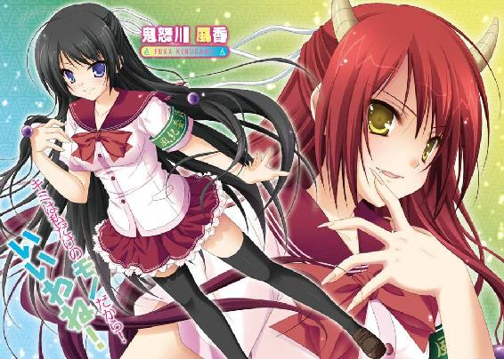
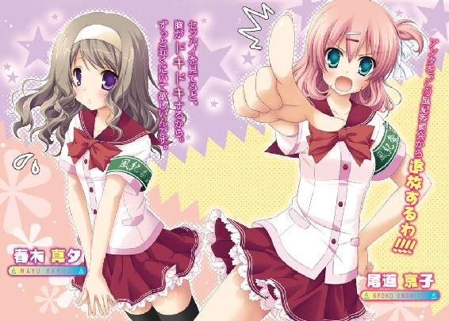
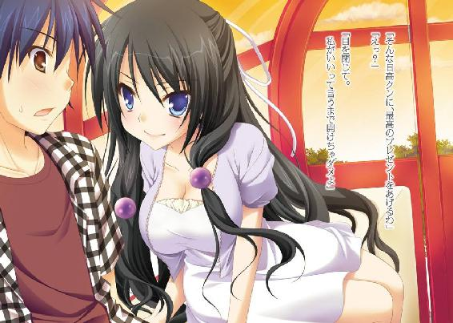
ＭＦ文庫Ｊ
ツノありっ！
風香先輩は△△を隠す
阿智太郎
口絵・本文イラスト●鳴海ゆう
第一話 始まりは鬼フェチ疑惑
その１
天狗山高校は、長野県信濃市の外れにあるごくごく普通の高校だった。
その名が示すように、天狗山と言う山の中腹に位置する学び舎へは、長く伸びた坂を上らなくてはならない。この勾配の激しい坂は天狗の試練坂とも呼ばれていて、慣れない新入生を容赦なく苦しめゲンナリとさせる。
時は、ようやく新入生が坂に慣れはじめた五月の中頃。
一人の少年が、のんびりとした足取りでこの天狗の試練坂を上っていた。
ひょろりと背の高い少年だ。髪の毛は短めでボサボサ。大きな学生鞄を肩から下げている。
服装は学ラン。だけど少し暑いのかボタンは外され白いワイシャツが見えていた。
武蔵野日高。この天狗山高校に通う生徒だ。学年は二年。試練坂を上るのも二年目ということもあり、特に疲れた顔はしていない。ただ、眠そうに時折欠伸をしているだけだ。
この欠伸は勉強などではなく夜遅くまでゲームしてたのが原因だから、あまり褒められたものではないのだけど。
「あ～眠い。授業始まる前に一眠りしとかなくちゃな」
そんなことをぼやきながら坂を上ることしばらく。天狗山高校の校門が見えてくる。
そこでは、登校してきた生徒達が団子になって集まっていた。彼らを足止めしているのは、校門前に立ちはだかるように並ぶ十数名の生徒達。
腕にはめられた緑色の腕章に、日高は顔をしかめる。
「何だ、風紀委員の抜き打ち持ち物検査か」
腕章をつけた生徒らは、天狗山高校風紀委員の皆様だ。頻繁にこうやって校門の前に立ち、登校してくる生徒達の持ち物検査を行っている。
漫画雑誌やゲーム機なんかは問答無用で没収されてしまうため、慌てて家に引き返す生徒もいるほどだ。
かく言う日高だって、昨年末にゲーム機を一台没収された苦い思い出がある。返してもらうのに反省文を何枚も書かされた苦労はまだ色濃く記憶に残っていた。
その教訓もあって、日高は没収されて困るようなものは学校に持ってこないようにしていた。鞄の中身を覗かれたって困ることは何もない。
学ランのボタンを締めると、日高は臆することなく列に並ぶ。持ち物検査の自分の番が来るのを待った。じっとしていると上の目蓋と下の目蓋がくっつきそうになる。すこぶる眠い。
（立ったまま眠れたら、人類はどんなにか幸せなんだろうか）
下らないことを考えながらうつらうつらしている日高に、鋭い声が飛んだ。
「次、早くして」
ハッとして前へと進んだ日高は、そこで眠気を軽く吹き飛ばされた。理由は単純でいて明快だ。目の前に立つ風紀委員の少女が、目の覚めるような美少女だったからだ。
長い黒髪が印象的な大人びた少女だった。目鼻立ちはクッキリとしている。力強い目付きと形の良い眉毛が印象的だ。
スラリと均整のとれた体。かと言って痩せているわけではない。出るところはしっかりと出ている。女の子にしては背が高いこともあり、まるでモデルのような印象を受ける。
腕には『風紀』と書かれた腕章。だけど、他のメンバーとは違ってその文字は金色に輝いている。
ゴールドの腕章は、風紀委員のトップに立つ者の証。
彼女こそ、天狗山高校風紀委員会の委員長、鬼怒川風香その人だった。
（鬼怒川......先輩）
日高はゴクリと喉を鳴らした。
彼女はこの学校では知らぬ人はいないといった存在だった。まず言うまでもなくその超高校生級の美貌。さらに、成績優秀で運動神経も抜群とくれば目立たないはずがないだろう。
日高よりも一つ上の先輩だが、すでに昨年から風紀委員長を務めている。
ゲーム機を取り上げられそうになり逆上した柔道部の猛者を軽々と投げ飛ばした武勇伝だってあるほどだった。鬼の風紀委員長という異名まで囁かれている。
かと言って生徒達から恐れられているわけでもない。その美しさと何者にも屈しない屹然とした様は、大変魅力的だ。彼女に憧れる男子生徒、そして女子生徒も数え切れないほどだった。
（鬼怒川先輩、こんなに近くで見るのは初めてだけど、やっぱり美人だよな）
思わずそんなことを考える日高に風香の鋭い声が飛んだ。
「何をしているの？ 早く鞄の中を開けて見せてちょうだい」
「は、はい」
日高は学生鞄のジッパーを開くと、鞄の口をガバっと開き風香に突きつけて見せた。実に堂々とした態度だった。別にビクビクする必要なんてない。鞄に見られて困るようなものなど入っていないのだから。
『ＯＫ、通っていいわ』
っていう声が当然聞けるものだと思っていた。そう信じて疑わなかった。なのだけれ
ど......。
「堂々としたものね」
半ば呆れるように風香が声を漏らす。
「開き直るにしたって、限度ってのがあるわよ」
「えっ？」
何のことか分からずポカンとする日高。
「漫画の持込みは禁止されてるって知らないのかしら？ しかも、よりにもよってこんな漫画を」
風香は開けられた日高の鞄に手を突っ込むと、それらを掴みだした。
「あああ！」
目を見開き驚いたのは日高だ。だって、風香が手にしてたのは紛れもないエロ漫画の数々だったからだ。いかがわしい表紙もさることながら、『青年コミック』と書かれたマークがこれでもかってくらい自己主張している。
（ど、どうしてそんなものが俺の鞄に......）
日高は猛スピードで記憶を反芻する。
（俺はそんな漫画入れてないぞ。そもそも、俺のじゃない！ 家を出た時はそんなものは入って......いや、考えてみれば家で鞄を開けなかったんだっけ）
基本、教科書はすべて学校のロッカーに突っ込んでいる。家で鞄を開けない日も珍しくはない。
（だとすると......）
日高は、ちょっとした心当たりがついた。
ちょっとした心当たりは、昨日の放課後のことだった。
「なあなあ、日高。今日帰りに一緒にモエクラまで行かないか？」
最後の授業が終わった直後、大きく伸びをする日高にそう声をかけてくる男子生徒がいた。小柄で眉毛の太い彼の名は、車屋芳郎。
日高としては不本意だけど、数少ない友人の一人だ。
「モエクラ......か」
友人の提案に、日高は露骨に顔をしかめた。
モエクラと言うのは、最近近所に出来たサブカルチャーショップだ。アニメやコミック、ゲームやフィギュアを手広く扱っている。
ゲームやアニメは日高だって嫌いじゃないのだが、いかんせんその店はラインナップが濃すぎるきらいがあるのだ。
事実、車屋が引っ張り出したチラシには、これでもかってくらい派手に『獣少女』という文字が自己主張している。
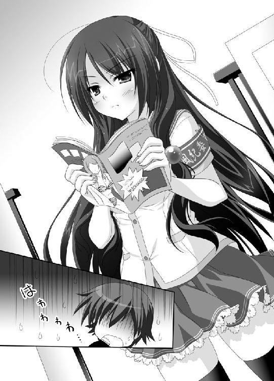
「すごいんだぞ！ 今月はモエクラで『獣少女祭り』を開催中なんだ。オリジナル獣少女うちわがもれなくもらえるんだぞ」
興奮して喋る車屋だけど、日高としてはちっともテンションが上がらない。
「遠慮しとくよ。俺は、そういうのちょっとアレだから。普通の女の子のがいいから」
「なぬ ！」
！」
車屋が鼻息を荒くした。
「まったく、日高は分かってないよ。普通の女の子なんて現実世界に腐るほどいるじゃないか。妄想世界でぐらい普通じゃない女の子達と楽しまなくっちゃ人生の損だぞ。猫耳に犬耳にウサギ耳。ロボット耳も悪くないぞ。悪魔の羽や尻尾、戦闘機に変身する女の子だっているんだ。スライム娘なんてのも悪くない。よりどりみどりだぞ」
熱く語る友人の将来が不安になる日高。でもいつものことだから気にしないでおいた。
「とにかく、俺は今日は遠慮するよ。丁度、やりかけのゲームもあるし」
机の上に乗っていた教科書とノートを手にし、教室の後ろへ。自分のロッカーを開けると教科書もノートも中へと突っ込む。どうせ家に持ち帰っても勉強なんてしないから問題ない。テスト前でもない限りいつもこんな感じだった。
代わりに鞄を引っ張り出し肩にかける日高に、車屋が含み笑いを浮かべながら言う。
「まあいいよ。人外娘の魅力が分かるには時間がかかるからな。とりあえず入門書をしのばせておいたから、今晩じっくり堪能してくれたまえ。ふっふっふ」
（あれだ!!!）
確信したとばかしに日高は心中で叫んだ。
（車屋の奴、俺の鞄にエロ漫画をこっそり入れやがったんだ!?）
同じ趣味の友人を持ちたいのか、車屋は何かと布教活動に励んでいた。今回もその一環なのだろう。
どうして家で鞄を開けなかったのかと嘆くけど、もはや遅すぎた。
エロ漫画は風香にしっかりと見つかってしまった。それどころか、風香は興味深そうにそれを眺めていたりする。
（って、鬼怒川先輩超見てるし！）
強烈に恥ずかしい気持ちだった。穴があったら入りたいというのはこういう心境を言うのだろう。
（断言できるぞ。今ここに穴があったら、俺は迷うことなく飛び込む！ たとえそれがブラジルまで繋がっていようとも！）
そんな下らない決意を固めている日高に、風香が顔を向ける。
「キミ。名前は？ 確か二年生だったわよね？」
「二年Ｃ組の武蔵野日高です。信じてもらえないかもしれないんですけど、それは俺のじゃなく友達が」
「面白いわね」
風香が目を細め笑う。ニンマリといった言葉がしっくりくる笑いだった。
「武蔵野クンね。これから生活指導室に来てくれないかしら？」
「あの、没収なら没収でいいです。それ、俺のじゃないから」
日高としては、一刻も早くこの恥ずかしい状況から解放されたかった。長野県には海がないけれど、とりあえず海がありそうな方向に全速力で走るつもりだった。
だけど、風香はそれを許さない。
「私と一緒に生活指導室に行くの。いいわね？」
日高を見据えもう一度言う。
有無を言わせぬ口調だった。眼力とでも呼ぶのだろうか？ 見つめられただけで日高は全身が強張ってしまう。
「は、はい」
ぎこちなく頷くことしか、日高にはできなかったのだった。
その２
生活指導室は、殺風景な部屋だった。大きさは普通の教室の半分程度。面談用の椅子と机が置かれているのみだ。
椅子に座らされた日高に、風香が尋ねる。
「どうしてわざわざ生活指導室に連れてこられたのか？ 分かるかしら？ 武蔵野クン」
正直、分からなかった。煙草や酒を持っていたならともかく、見つかったのはエロ漫画だ。確かに問題なのだが、わざわざ生活指導室に連れてこられるほどのことではない。普通だったらその場で没収され終わりのはずだ。
しかも、風紀委員長である風香直々ともなれば不可解度に拍車がかかっている。
「どうしてでしょうか？」
神妙な顔つきで聞き返すことしかできない日高に、風香はにこやかに答える。
「理由は、このラインナップよ」
机の上に、日高の鞄の中に入っていたエロ漫画が並べられた。
『鬼の熟女団地』
『エロ娘はオニオニ娘』
『鬼ケ島でチョメチョメ』
『シマシマパンツの女の子』
『コスプレＨ 鬼っ娘！』
絵柄に統一性はなかった。『鬼の熟女団地』なんて劇画調なのに、『シマシマパンツの女の子』は、ロリぷに路線だ。『コスプレＨ 鬼っ娘！』の一冊は、漫画ですらない。コスプレをした女の子達による実写のエロ本だ。
だけど、見逃せない共通点が一つだけあった。どの女の子（熟女もいるけど）にも頭から角が生えている。
そう、テーマが鬼なのだ。
「さらに、こんなものまで鞄の底から発見されたわ」
追加で机の上に提出されたのは、耽美な男子がからみあう表紙の漫画だ。
『名門、鬼頭男子高！ オレとあいつの金棒合戦』
もはや女の子ですらない。完全男VS男のやおい系だ。
「このラインナップから推測するに......」
風香は、日高に指を突き付けると自信たっぷりに言い放った。
「武蔵野クン、あなた、鬼フェチね。そうなんでしょ!?」
「お、俺はそんなフェチじゃありません！」
必死に否定する日高だけど、
「嘘よ。これだけのラインナップをそろえておいて、鬼フェチじゃないなんてありえないわ！」
風香がバシンと机に手を叩きつける。
「さあ、もう言い逃れはできないわ。白状しなさい」
鬼の風紀委員長の異名は伊達ではなかった。とてつもない気迫に、日高は息が詰まるような感覚を覚える。
どうやら、認めないことには解放してもらえなさそうだった。
「ええ、そのとおりです！ 俺は正真正銘の鬼フェチですよ！」
ヤケクソでまくしたててから、日高は暗澹たる気持ちになった。
（ああ、もう終わった。鬼怒川先輩の口からこのことが学校中に広まったら、俺は学校中から鬼フェチの変態として白い目で見られてしまうに違いない。もうロマンスも何も期待できないんだ）
明後日の方向で、車屋がにこやかに手招きしているのが見えたような気がした。
『こっちへおいでよ～。日高』
そんな台詞と共に。
「そう、やっぱり私の思ったとおりね」
満足気に息を吐き出した風香は、日高が驚くようなことを口にする。
「それじゃ、この漫画は持って帰っていいわよ」
「えっ？」
没収されるのが常なのに、そんなことを言われるとは思わなかった。
さらに、驚きは続く。
「見逃してあげるって言ってるの。今回のことは適当に処理しておくわ。反省文の提出も必要ないし先生に呼び出されることもないから安心して」
（あの容赦のない取り締りで恐れられる鬼の風紀委員長が!? 校則違反を見逃す!? しかも、親しくもない俺なんかの!? 一体どうして!?）
ひたすら困惑している日高に、風香は含みのある笑みを浮かべ言った。
「ただし、一つだけ私のお願いを聞いてもらうわよ。キミ、明日か明後日空いてる？」
今日は金曜日だから、明日と明後日は土日だ。基本的に週末は何の予定も入っていない。
「普通に暇してますけど......」
「それじゃ日曜日の午前十時。信濃市駅の噴水前に来てちょうだい。いいわね？」
一応？はついているものの、相変わらず有無を言わせぬ口調だ。
「は、はい。分かりました」
一方的に伝えられる要求に頷いたものの、日高はさっぱり意味が分からない。
「もう教室に行ってもいいわ。私も校門に戻らなきゃ」
生活指導室を後にしようとする風香に、日高はたまらず声をかける。
「あの、鬼怒川先輩。日曜日、何するんですか？」
「別に、大したことじゃないわ」
そう前置きをしてから、風香は笑顔で言った。
「ただ、私とデートしてもらうだけよ」
「!?」
言葉も出せないってくらいに驚いている日高を残し、風香は生活指導室を後にする。
「鬼怒川先輩と......デート。あの、鬼怒川先輩と」
しばし呆然と立ちすくんでから、日高は天井を見上げ叫んだ。
「ええええええええええ!!!」
その３
どこを見渡しても田舎しかないといった長野県のイメージは実は間違いだ。確かに田舎は多いけど、開けた街だってちゃんと存在する。
信濃市もその一つだ。長野県の南信の中央付近に位置するこの街は、県庁所在地である長野市にも負けないぐらいの大きな街だった。
東京や名古屋といった都市圏と繋がる本線を有した信濃市駅は、近代的な中にもレトロさを残したデザインの大きな駅である。
そんな駅の、シンボルとなっている噴水の前に日高は立っていた。
今日は日曜日。時刻は十時を回ろうとしている。
もちろん休日だから制服ではない。わりと丈が長めの半ズボンに、Ｔシャツ。軽くチェックのシャツを羽織っている。
いつも寝癖の思うがままにさせている髪の毛も、しっかりとジェルで固められていた。
言うまでもなく、気合ＭＡＸ入魂って感じだった。
「しかし、本当に鬼怒川先輩は来るんだろうか？」
こんな格好で来ておきながら、日高はまだ半信半疑だった。
それも仕方のないことだろう。だって相手は学校一の美少女とも称される鬼怒川風香なのだ。
これまで何人ものイケメン男子が果敢にアタックし、敗北していったと耳にしている。
そんな風香が、自分のように何の取り得もないような男子をデートに誘うなんて......。
そもそも、風香とちゃんと話をしたのなんて先日のあの出来事が初めてなのだ。
考えれば考えるほど謎が謎を呼んでしまう。
（鬼怒川先輩、ひょっとして俺のことからかっただけなんじゃないのか？ 最初からここに来るつもりなんかないんじゃ）
疑心暗鬼にとらわれている中、日高の後ろから声がかけられる。
「お待たせ、武蔵野クン」
反射的に振り向いた日高は、そこに立つ風香を確認した。それはまやかしでも幻覚でもない。紛れもなく本物の鬼怒川風香だ。
しかも、いつもの学生服なんかじゃない。ワンピースに薄手のカーディガンを組み合わせた格好だ。
初めて見る風香の私服姿に、日高は思わず見とれてしまう。
「来てくれてありがとう。もしかして長く待たせてしまったかしら？」
「い、いえ！ そんなことありませんっ！」
プルプルと首を振る日高。実を言うとじっとしていられなくて八時には家を出て九時前にはここに到着していた。一時間以上ずっと待っていたことは口にしないでおく。
（さあ、これからどうしたもんだろうか？）
と日高は考える。
颯爽と風香をエスコートしたいところなのだけど、悲しいかな彼女いない暦は年齢と同じの日高。
デートってのがどんなものかまるで分からないのだ。
仕方がないから、日高はおずおずと尋ねる。
「それで、今日はこれからどうしましょうか？」
「あのね、武蔵野クンが嫌じゃなかったら私、行きたいところがあるのよ。伊那峡ランドよ。どうかしら？」
伊那峡ランドは、信濃市駅から急行電車で三十分程の場所にある中規模の遊園地だ。
絶叫マシーンなんかもなく、全体的にゆる～い感じの遊園地。エキサイティングって言葉よりも、まったりのんびりって言葉がしっくりとくる遊園地だったことを、日高は思い出す。
そして、そんな雰囲気が日高はわりと好きだった。
「いいですよ」
「それじゃ決まりね」
風香が日高の手を掴むとぐいぐいと引っ張り歩き出す。もうそれだけで日高は夢ごこちとなってしまう。
「そうそう、武蔵野クンじゃ他人行儀だから、日高クンって呼ばせてもらうわね。キミも私のことは苗字じゃなく名前で呼んでちょうだい。いいわね？」
これまで聞いた『いいわね？』の中で、一番幸せな気持ちにさせてくれる『いいわね？』だった。
「は、はい」
夢ごこちのまま、日高はそう答える。
心の底から幸せな気持ちだった。
だけど、残念なことに幸せは長くは続かなかった。
その４
「な、何だここは......」
遊園地内に入った途端、日高はそう呟く。
最後に来たのが確か小学校の時。あれから五年くらい経過している。
だけど、それをさっぴいたって伊那峡ランドはすっかり様変わりしていた。
色あせていたはずの遊具は、ピカピカの新品になっていた。塗装をしなおしたとかそういったレベルじゃなく、全く新しい別物になっていたのだ。
いつ行っても閑散としていたはずの園内は、たくさんの人で賑わっている。
「もしかして日高クン、知らなかったの？」
意外そうな顔で風香は言った。
「経営母体が代わって、大改築したのよ。この前のＧＷにリニューアルオープンしたばかりだから、まだまだ混んでるわね」
そう言われれば、そんなような話を耳にしたような記憶もある。
「小さな子供しか楽しめないような遊園地だったのを、大人もエキサイトできる大アミューズメントパークに造り替えたの」
ほらと風香が指差す先にあるのは、びっくりするぐらいグルグルと回転しているジェットコースターだ。
他にも、宙返りするバイキング船とか、空高くまで持ち上げられ自由落下させられる遊具とかが見える。
絶叫マシーンのオンパレードだった。
（こ、こいつは......マズいぞ）
日高はゴクリと喉を鳴らした。
そう、実は日高。大の絶叫マシーン嫌いだったのだ。
（伊那峡ランドならこういうのがないから安心してたのに......）
チラリと隣の風香を見る。
（女の子なんだから絶叫マシーンは苦手だろう。まさか乗ってみたいなんて言わないよな？ な？）
そんな日高の期待はあっさりと打ち砕かれた。
風香はジェットコースターを指差す。
「日高クン、あれに乗ってみない？」
（言った!!!）
風香が指差す絶叫マシーンを見る。乗らなくたって分かる。自分の許容範囲をかなり超えているって。
だけどここで、
『すみません、俺、実は絶叫マシーンって大の苦手なんです。悪いんですけど、一人で乗ってきてもらえますか？』
何てこと、言えない。男としてそんな恥ずかしいことができるはずがない。
こんな美人の先輩とデートしてるなんて奇跡だ。虚勢を張ってでも、ここは男らしいところを見せなければならない。
この奇跡を、二度目、三度目と繋げるために！
（がんばれ、武蔵野日高。たった一回、たった一回だけ、耐えればいいんだ。そうすれば風香先輩の好奇心だって満足できるはずだ）
日高は頷くと、必死に笑顔を作り答える。
「そ、そうですね。あれに、乗りましょう」
「じゃあ行きましょ」
風香が日高の手を取りジェットコースターの列へと引っ張っていく。
（ドナドナの子牛の気持ちって、こんな感じなのかもしれないぞ）
二十分程並び、二人の番がやって来た。
「思ったより並んだわね」
と言うのが、風香の感想だったが、日高のは丸っきり違っている。
（もっと並んでいたかったぞ。できれば閉園になるまで!!）
ジェットコースターの座席に二人並んで座る。バーが下ろされた。
そして、運命のベルが鳴り響く。ジェットコースターが動き出した。最高点まで到達してから、一気にレールを滑り落ちる。
日高は、奥歯を噛み締め必死に声を出さないようにしていた。
たった一回、この一回を耐えるために。
その甲斐あってか、日高はどうにか叫ぶことなく試練を終える。
少々フラフラになりながらも、日高は達成感で一杯だった。
（やった、やったぞ）
この後には、バラ色のデートコースが待っていると日高は信じていた。
二人でメリーゴーランド。
二人で楽しくランチ。
二人でゆっくり園内を散歩。
締めくくりは、夕焼け空の下、二人で観覧車。
高まる気持ち、そして、重なる唇と唇。
青少年らしく妄想を膨らめている日高に、風香は笑顔で言った。
「日高クン、次はあれに乗りましょ？」
指差したのは、これまたジェットコースターだった。今乗ったものとは別の、スタートと同時にトップスピードになり二回転するという代物。
ある意味、先ほどよりも質が悪い。
だけど、悲しいかな男子。ここは頷くしかないのだ。
心の中で涙を流しつつ、日高はぎこちない笑顔で言った。
「は、はい」
そして、十数分後......。
トップスピードと共に、日高の悲鳴が響き渡った。
「ぎゃあああああああああああああああ!!!」
その５
よほど絶叫マシーンが気に入ったのだろう。風香は大喜びで絶叫マシーンをハシゴしていく。日高の手を引っ張ってだ。
一度、せきを切ってしまったらもう後はどうにもならなかった。
（俺、合計で何回悲鳴を上げたんだろ？）
ベンチにぐったりとする日高の元に、売店で買ったジュースを手に風香が戻って来る。
「大丈夫？ 日高クン」
日高にジュースを渡し、自分も隣に座った風香は、こんなことを言った。
「ひょっとして、日高クンって絶叫マシーンが苦手なのかしら？」
ひょっとしても何も、あれだけ隣で悲鳴を上げていたら疑いようがない。
（風香先輩、気付くの遅いです......）
この期に及んでは、もう言い逃れなんてできないから、日高は神妙な顔つきで頷いた。
「は、はい。実は、ちょっと苦手で」
「やっぱり......」
風香が目を伏せる。
「私、日高クンに苦しい思いをさせちゃったのね。せっかくの楽しいデートなのに何だか、悪いことしちゃったな」
悲しそうな顔になる風香に、日高は大慌てで両手を振る。
「あ、あ、あ、先輩が悪いんじゃないんです。最初に言わなかった俺の責任です。それに、俺もいつまでも苦手だ苦手だ言ってられないし、いい特訓になりました」
「そう言ってくれると、嬉しいわ」
風香がニッコリと微笑む。
「それじゃ、もう絶叫マシーンは終わりにしましょう」
（終わりにしましょうも何も、もう全部制覇した後ですよ）
って言葉を日高は飲み込んだ。そんなつまらないことを言ってどうなる。
「次は......あれなんてどうかしら？」
風香がビシって指差したのは......古ぼけた病院を模した建物。
いわゆる、恐怖系のアトラクションだ。
「うっ......」
日高の顔が強張った。
実は日高、極度の怖がりだったのだ。
高校二年生にもなりながら、妖怪とかお化けとか幽霊とかそういった類のものが大の大の大の大の大の大の苦手。
夏の心霊特番なんか見たら最後、まんじりともせず一晩を過ごしてしまう。
ホラー映画なんてもちろん見ない。それどころか、レンタルビデオショップでコーナーの前を通ることさえ避けるレベルだ。
だけどここで、
『すみません、俺、あゆ怖いのはちょっと。悪いんですけど、一人で行ってきてもらますか？』
何て言えるはずがない。
（ただでさえジェットコースターで醜態をさらしてしまったのだ。名誉を挽回しなければ！）
男のプライドを胸に、日高は頷いた。
「わ、分かりました」
そして、しばらくの後......。
アトラクション内に、日高の悲鳴が響き渡った。
「ぎゃあああああああああああああああ!!!」
その６
「なかなかいい眺めよね」
観覧車の中で窓に顔をくっつけるようにして外を見ながら、風香が感心したように息を吐き出した。午後の六時を回った空は夕焼けで赤く染まっていた。遠くに連なる山々もよく見え、確かにそれは感心する価値のある眺めだった。
だけど、残念ながら日高には眺めを楽しむ心の余裕なんてなかった。風香の向かい側の席でうつむき、暗い顔でいる。
夕焼け空の下、二人で観覧車。日高が夢見ていたデートの締めくくりなのだが、ここにたどり着くまでがいかんせんマズすぎた。
絶叫マシーン地獄が終了した後は、今度は恐怖系アトラクション地獄の始まりだった。ブームだか何だか知らないけど、園内には五つも六つも存在していたのだ。
悲鳴なんて何度上げたか分からない。チビりそうになったのだって一度や二度じゃない。
しまいには、怖くて風香の腕を掴んでしまったほどだ。しかもそのまま出口まで引っ張っていってもらったのだから、日高が情けない自分にヘコむのも仕方がない。
「もしかして日高クン、今日のことで落ち込んでるの？ ジェットコースターで何度も何度も悲鳴を上げたこととか、お化け屋敷での......」
「あああ、もう止めてください！」
耐え切れず、日高は悲鳴を上げて両手を振りたくる。
「ええ、そのとおりですよ！ せっかくデートに誘ってもらえたのに、あんな醜態を繰り返したんですから。落ち込むなって言う方が無理です！」
開き直ってそう叫ぶと、すねたように個室の壁へと体を押し付け身を縮ませる。窓から遠くの山々をうつろな目で眺める。
「あ、やっぱり長野県は山が多いな～。山を見てると癒されるな」
何てことはない。軽く現実逃避をしてみたのだ。
そんな日高に、風香はクスリと笑う。そして、優しい口調で言った。
「私は、正直嬉しかったかな。だって、日高クンの色々な顔が見れたんだから。慌てたり怖がったりする日高クン、とってもかわいかったわよ」
思いがけない風香の言葉に日高は現実逃避から連れ戻される。
てっきり愛想をつかされているものだと信じて疑わなかったのだから驚きもひとしおだ。
「今日一日で、私、キミのことすごく気に入ったわ。合格よ。日高クン」
満面の笑みで、風香はそう告げる。
舞い上がりそうになりながら、日高は気になる点を尋ねる。
「合格って、一体」
「今日のデートはね。キミという人間をよく見せてもらう試験でもあったの。私達、相性は抜群だと思うわ。だから、合格よ」
飛び上がりそうになる喜びを感じる日高だったけど、大きな疑問が残った。
そもそも、どうして自分を風香がデートに誘ったのかってことだ。
一目惚れというのは考えられない。話はしないまでも、学校では顔を合わせていたのだから。それに、一目で惚れられる要素を自分が持っているとも思えない。
「鬼怒川先輩、一つだけ質問してもいいですか？」
「風香先輩でしょ？」
軽くたしなめてから、風香は頷いた。
「どうぞ、何が聞きたいのかしら？」
「どうして風香先輩は、俺をデートに誘ってくれたんですか？ 俺みたいなパッとしない男子を」
「そうね、確かに日高クンはパッとしないわね。スポーツが得意って感じもしないし、学校の成績だって大したことなさそうだし」
軽く日高を落ち込ませてから、風香は軽く微笑んだ。
「でも、日高クンには、他のみなには真似できないものがあるわ」
もったいをつけてから、風香はその言葉を口にした。
「ズバリ、鬼フェチよ！」
「へっ？」
ありえない答えに、日高はポカンとしてしまう。
「日高クン、キミは無類の鬼フェチよ。角さえついていれば実写でも二次元でも幼女でも熟女でも男ですらかまわないっていうかなりハイレベルのね。それこそが、私が男の子に求める理想の条件なのよ」
日高は激しく困惑した。
？？？？？？？？？？？？？？？？？？？？？？？？？？？？？？？？？？？？？？？？？？？？？？？？？
ざっとこんなぐらいにだ。
（鬼フェチが理想だなんて、どういうことなんだ？）
数秒の後、日高の頭にある考えが浮かぶ。
（もしかして、風香先輩も鬼フェチなんじゃないか？）
だとすると合点もいく。
鬼フェチの風香は、付き合うなら同じ趣味の男子がいいと思っていたのだろう。
日高を鬼フェチと勘違いした風香は、相性が合うかどうか見極めるために今日のデートを企画した。これなら辻褄も合う。
（そうか、そういうことだったのか）
本来ならば、ちゃんと誤解を解くのが筋と言うものだろう。あれは困った友人が勝手に忍ばせた本で、自分は鬼フェチでも何でもないと。
むしろ、鬼が怖いぐらいだと。前にテレビでやっていた九州にあるという鬼のミイラの映像を見て、本気で怖くなって熱を出したのだと。
だけど、今現在、風香は日高のことを気に入ってくれているのだ。こんな幸運を逃すなんてもったいなさすぎる。
日高の脳細胞は、満場一致で一つの結論を出した。
この、勘違いに乗っかれ！ っていう結論だ。
「そうです、俺は鬼フェチです！」
堂々と日高は大嘘をついた。
「任せてください。何せ鬼フェチですから！」
不自然なぐらいに繰り返す日高に、風香は目を細めた。
そして、いきなり座席から腰を浮かすと、向かい側の席から日高の隣へと移動する。
くっつかんばかりに近づくと、妙に艶っぽい声で囁いた。
「そんな鬼フェチの日高クンに、最高のプレゼントをあげるわ」
「えっ？」
「眼を閉じて。私がいいって言うまで開けちゃダメよ」
強烈な色香ってのに、日高は頭がクラクラとする。
言われるままに日高は眼を閉じた。固くギュっと上瞼と下瞼を密着させる。
（プレゼントって何!? も、もしかして......キスとかなのか!?）
だけど、そんな期待とは裏腹に何もないまますぐに風香の声が響く。
「はい、もう開けていいわよ」
少々ガッカリしながら、日高は両目を開けた。あまりに強く閉じすぎていたため視界が少々ぼんやりとしている。
最初にその変化を感じたのは、色だった。
（あれ？ 風香先輩の髪って、こんな色だったっけ？）
日高が覚えているかぎり、風香の髪の毛は艶やかな黒髪だったはずだ。なのに今すぐ隣にいる風香の髪の毛は、燃えるような赤色だった。
ぼやけていた視界がクリアになるにつれ、変化は髪の毛だけじゃないってことに気付く。
瞳が、金色に染まっていた。指先からは鋭い爪が生えていた。うっすらと開いた口からは、上下に尖った牙が見えた。
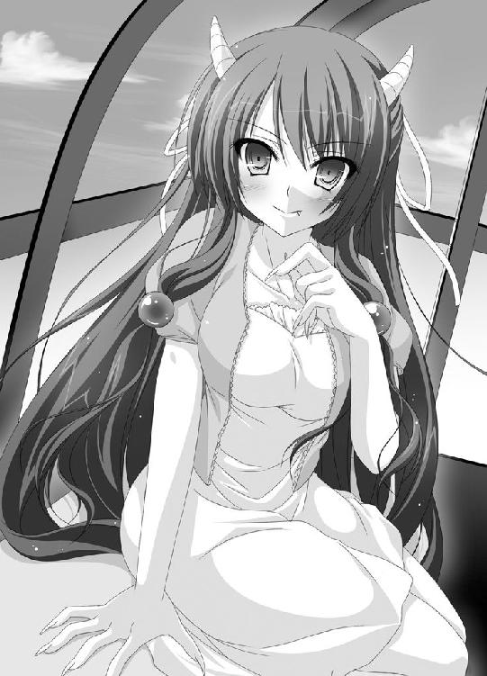
極め付けは頭だ。左右のこめかみの少し上の辺りから、乳白色の突起が突出していた。いわゆる角というものだ。
現在の風香を一文字で説明するなら、あれ以外は考えられない。
『鬼』だった。
三文字で説明するならば、やはりあれになるだろう。
『鬼っ娘』だ。
「どう、キミがこれまでずっと憧れてきた鬼よ。最高でしょ？」
自分の頭の角に指先を這わせながら、風香は誘惑するように言った。
「少しだけなら、角に触らせてあげてもいいのよ 」
」
日高に向けられる金色の瞳。それには、見つめられるだけで背筋がゾクゾクしてしまうような禍々しさが秘められていた。
日高の体の内から恐怖が込み上げる。超怖がり体質なのだから当然のことだ。
「ひゃあああああああああああああああああああああああああああああああああああ!!!」
絶叫マシーンと恐怖系アトラクションのと併せて、本日四十八回目の悲鳴を日高は響かせたのだった。
その７
翌日の月曜日は、よく晴れた気持ちのいい朝だった。
校舎へと続く天狗の試練坂を、登校する生徒達が上っていく。そんな中、かなりヘロヘロな様子の生徒がいた。
日高だった。ゲッソリとした顔付きで、両足を引きずるようにして坂を上っている。
四月頭の、まだこの坂に慣れない新一年生よりも危うい足取りだ。このまま道をそれて遭難でもするんじゃないかってぐらいに。
そんな日高の背中が、不意に叩かれる。
「わっ！」
って声と共に。
さあ、驚いたのは日高だ。「ギャッ！」と悲鳴を上げると全身を強張らせ引きつった顔で振り向く。
「あははは、驚いた♪」
楽しそうに言うのは、一人の女子生徒だった。
髪の毛は短めで、眼鏡が特徴的だ。ついでに言えばかなりボリューミーな胸の持ち主。全体的にむっちりとしていて発育がいい。
「何だ。むつみか。驚かさないでくれよ」
再びとぼとぼと歩き出す日高の隣に、女子生徒はやって来ると唇を尖らせた。
「ちょっとちょっと、つれないんじゃない？ せっかくこんなに可愛い幼馴染が声をかけてあげたってのに」
新条むつみ。それがこの女子生徒の名前だ。学年は日高と同じ二年生。
日高とは幼稚園に入る前からの付き合いで、小中高とずっと一緒だ。
早生まれということもあり、幼い頃の日高はかなり小柄で泣き虫だった。それにひきかえむつみは当時から発育も良く性格も豪快。何かと日高の世話を焼いていた。以降、十数年その関係が続いている。
「で、ひーくんどうかしたの？ 何かすっっっっごくテンション低いけど。休みボケにしたってレベル高すぎない？」
ざっくばらんな感じにむつみが尋ねてくる。
「昨日、ちょっとね」
言葉少なに答えてから、日高は昨日の出来事を思い浮かべる。
鬼となった風香を目の前に特大の悲鳴を響かせた日高は、情けなくもあっさりと気絶した。
目覚めると、そこは遊園地の医務室だった。高所恐怖症で気絶してしまったと風香は係員に説明し、さっさと自分は帰ってしまったとのことだった。
観覧車の中で見たあの光景は何だったのか？ それがひたすらに日高を悩ませていたと言えば聞こえはいい。
ぶっちゃけ言ってしまえば、怖くて怖くてたまらなかったのだ。
結局、昨晩はまんじりともせず夜を明かしてしまった。今日だって、学校を休もうか散々悩んだほどだった。
（昨日は、初めてのデートってことで俺は極度の緊張状態だった。観覧車の中という密室、さらに高所という状況、それらが融合し、俺にありもしない幻覚を見せたのかもしれないぞ）
一晩考えて出した仮説だけど、それを頭から信じ込むには至らない。
『ああ、初デートでしょ？ そりゃー緊張するさ。幻覚だって見るよ』
『えっ!? 初デートに幻覚？ 何当たり前のこと言ってるの？ そんなの常識だろ？』
『え、調査の結果、百人中九十八人が初デートに幻覚を見ているということが判明しました』
といった第三者の意見がないことにはどうにも安心できなかった。
「なあ、むつみ。ちょっと聞くんだけど」
第三者の意見が欲しく、日高はむつみに尋ねる。
「デートって、したことあるか？」
「デート？ そりゃあ、あたしほど美人でプロポーションが良ければ引く手あまただけどね」
むつみは足を止めると、腰に手を当てて軽くポーズを作って見せる。確かに美人だ。それに胸の大きさが強調される。
実際、むつみは人気だった。容姿だけでなくその超高校生級の胸で、幾人もの男子生徒の注目を集めている。
「でも、実際に誘いを受けてデートしたことはないんだね、これが。全部断ってるから。だって、みんなタイプじゃないんだもん」
「そっか、デートはしたことないのか」
意見は聞けないと、日高は少し落胆する。
「あ、だけどひーくんのお誘いならＯＫだよ。何、もしかしてあたしとデートしたいとか？」
「いや、そーじゃないよ」
「なんだ、残念」
ガッカリするむつみに、日高は別の質問をしてみることにした。今度はもっともっとダイレクトな質問だ。
「なあ、むつみ。変なこと聞くようだけど」
そう前置きをしてから、日高は囁いた。
「......鬼って、本当にいると思うか？」
「鬼？ 鬼って......この鬼？」
むつみが頭の上で両手の人差し指を立てて見せる。
神妙な顔つきで頷く日高に、むつみはププ～ッと豪快に吹き出した。
「な～に言ってんの。そんなのいるわけないじゃない。鬼なんて、お話の中だけ」
むつみはにんまりと笑った。
「そー言えば。ひーくんって昔っから怖がりだったっけ。ほら、一緒にお祭りに行った時、帰り道でひーくんが」
「わーわーわーわー」
よほど言われたくない思い出なのか、日高は大声を出して阻止する。
そんな日高を楽しそうに眺めてから、むつみは不思議そうに尋ねた。
「でも、どーしてそんなこと聞くの？ ひょっとして鬼でも見たとか？」
「うっ......」
いきなり真相を言い当てられたもんだから、日高は全身を強張らせた。昨晩の恐怖が蘇り顔色も悪くなる。
さすがは幼馴染だ。日高が本気で怯えていることに気付いたむつみは、真剣な顔で日高に言った。
「ひーくん。大丈夫だからね。何を見たのかは知らないけど、そんなの見間違いだから。もしくは、コスプレとか特殊メイクとかだから。鬼なんてこの世にいないの。分かった？」
「あ、ああ。分かった」
勢いに押され、日高はコクンと頷いた。
「良かった。またどうしても怖くなったらあたしに言うんだよ。昔みたいに添い寝してあげてもいいから」
「ちょ、むつみ！」
日高が顔を赤くして叫ぶ。むつみの場合、これが冗談じゃない。
いつまでも昔のように接して来るから、日高としては困ってしまう。
と、むつみは何かを思い出したように「あっ」と声を上げる。
「いっけない、今朝は部室で用事があったんだっけ!?」
二年生でありながらむつみは新聞部の部長だ。月一で発行している学校新聞の編集に忙しいのだろう。
ピラピラと手を振ると、むつみは走り出した。駆け足で坂を上っていく。パワフルな上りっぷりだった。
むつみを見送ってから、日高はぼんやりと呟く。
「でも、むつみの言うとおりだよな。コスプレとか特殊メイクだよな」
緊張で幻覚を見たというよりも、ずっと現実味を増した考えだった。
（きっと、風香先輩は、鬼フェチの俺のためにコスプレをして見せてくれたんだ。赤い髪の毛はカツラで、金色の瞳はカラーコンタクト、爪や角だって作り物だったに違いない）
それだけの変装をするのには時間が短すぎたような気もするけれど、日高は全力で考えないことにした。せっかく恐怖が紛れたのだ。ふり出しに戻ってどうする。
（あれはコスプレ！ それが真相だ）
幾分か軽くなった足取りで坂を上る日高。やがて天狗山高校の校舎へ到着する。正面玄関で上履きに履き替え、三階にある自分の教室へ向かう途中だった。
日高は、反対側から歩いてきた風香と出くわした。
「ひっ！」
つい悲鳴を上げてしまいそうになる口を自分で塞ぐ。
風香は冷めた目で日高を一瞥してから、そのまま無言で通り過ぎようとした。
「あ、あの、昨日はすみませんでした！」
風香の背中に向けて、日高は頭を下げた。
「せっかく、風香先輩が俺のためにコスプレまでしてくれたのに......俺、悲鳴なんか上げて。しかも気絶までして」
風香が足を止めた。ゆっくりと振り向く。
「コスプレ......ね」
怒りすら感じさせる平坦な声だ。
「そんなものと一緒にされるなんて、心外だわ」
風香はいきなり日高の腕を掴むと、ズカズカと歩いていく。近くにあった調理実習室へと飛び込んだ。
朝ということで、実習室に人の姿はない。
「これが、コスプレなのかどうかその目でしっかりと見ることね」
日高を見つめる瞳が、一瞬にして金色に染まった。観覧車の中で日高が見た禍々しさを秘めたあの瞳だ。
異変は瞳だけにとどまらなかった。艶やかな黒髪が、まるで映画のＳＦＸを見ているかのように真っ赤な色に染まっていく。頭からは角が生え、指先からは爪が伸びる。
「どう？ これで理解できたかしら？」
そう尋ねる風香の口からは、鋭く尖った牙が見えた。
コスプレなんかじゃなかった。日高の目の前で風香は変身を遂げたのだ。もはや疑いようはない。
（ふ、風香先輩は......本物の鬼！）
「ひゃああああああ！」
またまた悲鳴を上げると、日高は後ずさった。そのまま椅子に足を引っ掛けて後ろ向きに転ぶ。かろうじて意識は飛ばなかったが、恐怖と驚きでどうかなってしまいそうだった。
「キミにはガッカリしたわ。まさか、その程度の鬼フェチだったなんてね」
呆れたように息を吐き出すと、風香は軽く首を振った。
それが合図だったかのように、角と爪が引っ込み髪の毛の色も瞳も元通りになる。尖っていたはずの牙もなくなった。
「私、何してるのかしらね。こんなにもムキになるなんて。らしくないわ」
自嘲気味に鼻を鳴らす。
「それだけ、キミに期待してたのね。キミなら、鬼の私を受け入れてくれるって。私を助けてくれるって。そう信じてたから」
風香が瞳を伏せる。
「でも、もういいわ。今さら文句を言ったってどうにもならないんだし。時間だって残されていないし」
これまで彼女が見せたこともないような、寂しげな表情で風香は呟いた。
「消える運命だった。それだけのことよ」
そんな言葉を残し、風香は調理実習室を出て行った。
床に尻もちをついたままの日高は、言葉も出せないでいた。
鬼への変身を目の当たりにした驚きと恐怖は、いまだ健在だった。
体だって小刻みに震えているし、心臓だってバクバクと鼓動している。
だけど、最後に見せた風香の寂し気な表情が、頭から離れなかった。
自分が、何かすごく悪いことをしたような、そんなモヤモヤとした罪悪感が日高の胸に静かに誕生した。
その８
昼休みになってもまだ、モヤモヤとした罪悪感は日高の胸に残っていた。むしろ時が経つにつれ、それは大きく膨れ上がっていく。
眼を閉じると、風香の寂し気な表情が頭に浮かぶ。そして、彼女が残した最後の言葉も。
『消える運命だった。それだけのことよ』
（消える運命って、どういう意味なんだ？）
いくら悩んだって答えが出ないことは分かっていた。それでも思考を他に向けることができない。
そんな日高に、無遠慮に話しかけてくる声があった。
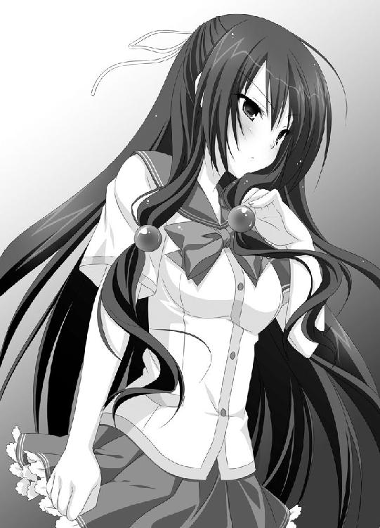
「おっす！ 日高。購買にパン買いに行かねーか？」
小柄で眉毛の太い男子。人外娘フェチの車屋だ。人外娘どころか、人外男子でもＯＫっぽいところが非常に末恐ろしい。
「それと、鬼に引き続き今度は猫耳のを何冊か見つくろってきたからな。後でこっそり渡すよ。こっちのもグっとくるぜ」
懲りずにそんなことを言う。
（もとはと言えばお前が人の鞄にあんな本を突っ込むから、俺がこんなにも悩む羽目になってるんだぞ！）
って文句が喉元まで出かかるけれど、日高はそれを飲み込んだ。
風香のことを話したって、信じてもらえないのがオチだろう。もし仮に信じてもらったとしても、車屋を大喜びさせるだけだ。
苦労させられている身としては、それはどうにもシャクでたまらない。
それに、風香の正体のことを人に喋るのは何だか悪いような気がした。少なくとも、こんな男に軽々しく言っていいとは思えない。
「なあ、車屋。お前って、あんな本持ってるぐらいだから、鬼について詳しかったりするのか？」
車屋がキラキラとした目で日高を見る。
「日高、お前、ついに目覚めてくれたのか!? オレは嬉しいぜ」
感激して涙ぐむ始末だ。
「ようし、このまま様々なジャンルをマスターし、共に人外ワールドを究めようじゃないか！」
「一人でやってろ！」
ぶつけられる情熱を、日高は全力で叩き潰した。
「ただちょっと、興味を覚えただけだよ。で、詳しいのか？」
「詳しいも何も、知り尽くしていると言っても過言じゃないね」
車屋はドンと胸を叩いて見せる。
「よし、それじゃたっぷりと聞かせてやろうじゃないか」
近くの椅子を持ってくるとそれにドッカと腰を下ろし、車屋は語り始めた。
「鬼っ娘の歴史は、実は思ったほど長くないんだ。一昔前は、鬼と言ったら巨大で恐ろしい怪物のように描かれていたんだからね。現に桃太郎の絵本の挿絵にだって、女の子の鬼なんて出てはこないだろう。鬼が萌えキャラとして認識されたのは、やはりあの作品の功績があったと言わざるをえないだろうな。そう、宇宙からやってきた鬼っ娘が主人公と同居するという内容の」
「ちょ、ちょっと待ってくれよ」
ますます饒舌になっていく車屋を日高が押し留める。
「俺が聞きたいのは違うんだ。そんな漫画とかの話じゃなくって、もっとこう本物の鬼の」
「本物の鬼？」
車屋が、気の毒そうな目を日高に向ける。
「日高。気持ちは分かるぞ。そりゃあ、オレだって現実に鬼っ娘や獣娘がいて欲しいって何度も願ったさ。だけど悲しいかな、現実には普通の女の子しかいないんだぞ」
（いるんだって本物の鬼っ娘が！ 一つ上の学年に！）
日高は心の中で叫ぶ。
「悪いけど、そういった知識はオレは持ってないんだ。知りたいなら自分で調べてくれよ」
そう言い椅子から立ち上がろうとする車屋だったけど、ふと動きを止める。
「あ、待てよ。あそこに行きゃいいんじゃねーか？ ほら、角隠寺ってあっただろ？」
角隠寺。その名前なら日高も知っていた。信濃市の山奥に存在する小さな寺だ。
「確かあそこって、鬼にまつわる寺だったような気がするぞ。そこの坊さんなら、鬼のことだって何か知ってるんじゃないか？」
「角隠寺か......」
寺に行き話を聞いたからと言っても、この悩みが解決するとは思えない。それでも、このままモヤモヤとしているよりは何百倍もマシだと日高は考える。
「サンキュー、車屋。俺、これからちょっと行ってくるよ」
日高は勢いよく立ち上がった。
「角隠寺にか？ 昼休みに行って帰ってこれるって距離じゃねーぞ。ここからだと一度信濃市駅まで出て、それからバスか何かに乗らないと」
「分かってるよ。午後の授業はサボる。もし聞かれたら体調不良とでも言っといてくれ」
車屋にそう告げると、日高はさっさとロッカーから鞄を引っ張り出し教室を後にする。
「おい、日高。しつこいようだけど本当の鬼なんていないんだからな!? 深みにはまって妄想と現実をゴッチャにさせるんじゃないぞ！」
後ろから車屋の声が飛んでくる。
「鬼は妄想の世界の話じゃないんだよ。少なくとも俺にとってはな」
口の中で呟きつつ、廊下を歩く日高。階段付近にさしかかった辺りで、日高は渋い顔になった。
前方から、むつみが歩いてくるのが見えたのだ。
「あ、ひーくん」
元気よく手を振ると駆け寄ってくる。
「ひょっとして、これから購買？ だったらあたしも一緒に......」
むつみは言葉を止めた。日高が小脇に抱えている学生鞄に気付いたのだ。
「あれ？ ひーくん。鞄なんか持ってどこに行くの？ ひょっとしてエスケープするつもりなんじゃ？」
何かと厄介なことになりそうだから、日高はワザとらしくコホンコホンと咳をして見せた。
「実は、ちょっと風邪気味で」
「ウソだよ。それは仮病の時の咳だもの」
一瞬で日高の仮病は見破られてしまう。げに恐ろしきは幼馴染の無意味に鋭い観察眼だ。
「成績が悪いのはしょうがないとしたって、授業をサボるのはよくないよ。あたし、ひーくんをそんな子に育てた覚えないから」
怖い顔をして言う。
「いや、お前に育てられた覚えはないから」
やんわりとしたつっこみを入れるも、むつみは動いてくれない。両手を腰に当て胸を張り日高の前に立ちはだかっている。
（それにしても、むつみ。見事に成長したもんだな）
誇張される胸につい目が行ってしまう日高だったけど、何をやっているのだと強く首を振りたくる。
「頼む、むつみ。見逃してくれないか？ どうしても行きたいとこがあるんだ。学校終わってからじゃとても間に合いそうもないから」
「どーせゲームショップとか言うんでしょ？」
「いや、そんなんじゃないよ。角隠寺ってとこなんだ」
日高の答えに、むつみは意外そうに目をしばたかせる。
「角隠寺って、あの山奥の？ どうしてまたそんなとこに？」
「それは......」
実に返事に困る質問だ。しばしモゴモゴと口を動かしてから、観念したとばかしに口を開いた。
「ちょっと、鬼の話を聞きに行こうと思って。そうでもしないと気持ちが落ち着かなくて」
「ひーくん......」
何故か悲しそうな顔になるむつみ。次の瞬間、日高の頭を抱きしめていた。
顔全体を包むむつみの胸の感触に日高はもう大パニックだ。
「わっ！ ちょっ！ むつみ！ 何を!?」
じたばた暴れる日高をそのままに、むつみは言う。
「可哀想に。ひーくんよっぽど鬼のことで怖い思いをしたんだね。恐怖に打ち勝つためにあえて鬼の勉強をしようとしてる。そうでしょ？」
当たらずといえども遠からずといったところだった。
日高を解放したむつみは、笑顔で言った。
「分かった。そういうことならあたしも一緒に行く！」
「えええ！」
胸の感触の余韻も吹き飛ばし、日高が驚く。
「いやいや、俺一人で大丈夫だから」
「行くったら行くの！ 他ならぬひーくんのためだもん。幼馴染としては放っておけないよ！」
妙な使命感すら抱いて、むつみは熱く語る。
「それに、新聞部の取材ってことにすればお寺の住職さんにも話を聞きやすいでしょ？ ひーくんは玄関のところで待ってて。あたしもすぐに準備して行くから」
そう言うと、むつみは走っていく。
もしむつみを置いて先に行ってしまったら、後で何を言われるか分かったものじゃない。第一、目的地を教えてしまっているのだ。追いかけてくるに決まっている。
「何だか、面倒なことになったぞ」
渋い顔で、日高はぼやいたのだった。
その９
天狗山高校を後にし最寄の駅へ。電車で信濃市駅まで出てから、バスに乗り揺られること二十分。さらに徒歩にて十五分あまり。
日高とむつみは、小さな寺の前へと立っていた。こここそが目的地である『角隠寺』だった。
「たっぷり一時間半もかかっちゃった。ホント、信濃市って広いんだから」
むつみがふうと息を吐き出す。
「さ、ひーくん。帰りのことを考えるとぼやぼやしてられないよ。行こ」
さっさと寺の境内へと入っていくむつみ。日高もその後を追いかける。
小さいながらも手入れが行き届いた寺だった。一人の男性が石畳を竹箒で掃いているのが見えた。作務衣を着て頭には手ぬぐいを巻いている。
日高が声をかけるよりも早く、むつみが口を開いた。
「すみません」
「ん？」
男性が振り向く。日高とむつみに、少しばかし怪訝そうな目を向ける。
だけどむつみは動じない。近寄ると笑顔で尋ねた。
「このお寺の方ですか？」
「住職だが......君達は？」
「突然押しかけて申し訳ありません。私達、天狗山高校の新聞部の者です」
笑顔のまま、むつみは鞄から取り出した名刺を住職へと渡す。
「今度、信濃市に伝わる民話や伝説っていうテーマで特集を組むことになりまして。それで、お伺いしたんです。こちらは、鬼にまつわるお寺なんですよね。できれば詳しくお話を聞かせてもらえないでしょうか？」
むつみの言葉に、住職が嬉しそうな顔をする。
「そりゃあ、かまわないが。学校の方はいいのかい？ まだ授業中じゃ」
「ご心配いりません。今日は学校の行事で午後がお休みなんです」
平然と、むつみは嘘をついた。
「そうか、それなら問題ないね。よし、それじゃあ話してあげようじゃないか。ここじゃなんだから本堂に来なさい。お茶でもご馳走しよう」
住職が寺の中へと入っていく。まるでスキップしかねない足取りだ。どうやら話好きの住職のようだ。
「むつみ、お前すごいな。よくもまあ次から次へとあることないこと喋れるもんだ」
感嘆の息を吐き出す日高に、むつみは得意気に胸を張って見せた。
「ま～ね～、だてに新聞部の部長をやってないってこと。あたしと一緒に来て良かったでしょ？」
「ああ、すごく助かったよ。サンキューな」
日高にお礼を言われて、むつみは本当に嬉しそうに破顔する。
「さっ、ひーくん。本堂に行こ。住職さんを待たせちゃ悪いから」
日高の腕を掴むと、むつみは本堂の方へと歩いて行った。
本堂に並べられた二枚の座布団に日高とむつみは並んで座る。目の前にはお茶と、皿に乗った山盛りの饅頭が置かれていた。
向かい合うように座った住職が、年季の入った湯呑茶碗でズズズとお茶を啜る。
「では、この寺の話をする前に、まず尋ねたい。日本で一番鬼の伝説が残っている場所はどこなのか？」
とてつもなく真剣な顔で、住職はそんなことを尋ねてくる。
もちろん日高に分かるはずがない。鬼の伝説と言われたって、桃太郎ぐらいしか思い浮かばないのだから。
何も言えない日高に代わって、むつみが答える。
「奈良か京都だと思います。土地柄的にも、鬼の話がたくさん残っているのではないでしょうか？」
「ちっがう!!!」
和尚が吠えた。片膝を立てて絶叫する。
「確かに、どちらにも鬼の伝説は残っている。大江山の鬼、酒呑童子の話なんかは確かに有名だ。だがしかし、日本一、鬼の伝説が残っている場所は」
そのままのテンションで、住職は叫んだ。
「この、信濃の国、長野県なのだ!!!」
「えっ、そうなんですか？」
この答えは意外だったのか、むつみが驚いた顔を見せる。
日高も同じく驚いたのだけど、声は出せなかった。饅頭を口一杯に頬張っていたのだ。
「ああ、間違いない。広く知られていないというだけで、長野県には数えきれないぐらいの鬼の伝説が残されている。長野市の紅葉伝説に、木島平村の鬼の首塚、黒姫山の鬼に、飯田市の赤飯童子。喬木村に伝わる九十九谷の鬼の話も忘れちゃならない。まだまだある」
聞いたこともないような鬼の名前を、住職は指折り数えていく。
「そう、この長野県こそが日本一の鬼の名産地なんだ！」
だだんと、力強く宣言した。
「それなのに、悲しいかな世間的にはまるで知名度がない。りんごや野沢菜をアピールするよりも、鬼を観光の一大産業にするべきなんだ。そうすればこの寺だって観光客がわんさか来て、立派に建て替えることができるのに」
さすがに俗っぽい本音が恥ずかしかったのか、コホンと住職は咳払いをする。
「まあ、記事にする時はそのこともしっかりと書いておいてくれるよう頼むよ」
「は、はい、分かりました」
むつみが頷いた。
「さ、それでは気をとりなおして話そう。この角隠寺と鬼の関わりについてを」
住職は、ゴホンと咳払いをすると語り始めた。
「昔々のその昔、この辺りの山の中には......」
朗々と語るその声は、渋みのあるなかなかの美声だった。
饅頭を五つも食べて満腹になった寝不足状態の日高に、居眠りの誘惑に抗う力は残されていなかった。
グ。
その10
「どうもありがとうございました」
話好きの住職に、日高とむつみはそろって頭を下げた。
「いやいや、またいつでも遊びに来なさい」
まだ話し足りない様子の住職に見送られ、二人は角隠寺を後にする。
寺の境内を出た辺りで、むつみは足を止める。少々呆れ顔で日高を見た。
「話を聞かなきゃ落ちつかないみたいなこと言ってたのに、お饅頭を食べて居眠りしちゃうなんてね。あたしビックリだよ」
返す言葉もございませんて感じに、日高は項垂れる。
「で、むつみ。結局のところどんな話だったんだ？」
「やっぱり、何も聞いてなかったんだね」
やれやれと息を吐くむつみだったけど、すぐにニッコリとした笑顔となる。
「ま、そんなことだろうと思ってちゃんとメモ取ってあるの。ホント、ひーくんって手がかかるんだから」
むしろ頼られることが嬉しいのか、鼻歌交じりで手帳を開く。
「とにかく話好きの和尚さんでしょっちゅう話が脱線して時間かかったけれど、ようはこんな話なの」
コホンと、かわいらしく咳払いをして見せた。
「昔、この辺りの山には鬼達が暮らしていたんだって。そんな鬼の中に、一人の娘がいて、彼女は人間に憧れていたの。それで、鬼達に伝わる秘密の術、『角隠し』を使ったの」
「角隠し？」
「人間に変身するための術よ。その術を使えば、角を隠して人間のふりをすることができるの」
日高の頭に、風香の顔が浮かんだ。
（風香先輩も、普段はそんな術を使ってるんだろうか？）
そんなことを思う。
「で、人間に変身した鬼の娘は里に下りた。器量が良かったこともあり、たちまち里の人気者になったの。だけど、実はその『角隠し』には決まりがあった」
「どんな決まりなんだ？」
「それはもう恐ろしい決まりなんだって」
人差し指を立てると、むつみは日高に顔を近づける。
「十八になる前に、人間の男とちぎることができなければ、本当の人間にはなれない。それどころか、体は土くれになって消えてしまう。しかも、男なら誰でもいいってわけじゃないの。娘が鬼だということを知ってもなお、受け入れてくれる男でないと意味がないの」
軽く深呼吸し、むつみは続ける。
「娘は一人の人間の男と仲良くなり、二人は恋仲になった。十八になる前日に、娘は男にすべてを打ちあけ、鬼の姿を見せた。だけど、男は鬼を受け入れることができなかった。悲鳴をあげて逃げ出してしまったの。気の毒にも、鬼の娘は一人寂しく土となり消えてしまった。そのことを知った男は深く後悔し、後に僧侶となり罪滅ぼしにと寺を建てた。それが角隠寺なのよ」
語り終えたむつみは、パタンと手帳を閉じる。
「ちょっと悲しく切ないお話だね。あたし、こういうの嫌いじゃないな」
眼鏡を持ち上げ涙をぬぐうむつみ。
日高はと言うと、深刻な顔で考え込んでいた。
話の中に出てきた鬼の娘と人間の男。両者が、風香と自分にシンクロしてしまうのだ。
今朝、調理実習室で風香が漏らした言葉が脳裏にフラッシュバックした。
『キミなら、鬼の私を受け入れてくれるって。私を助けてくれるって。そう信じてたから』
『消える運命だった。それだけのことよ』
（ひょっとして、風香先輩もこの話と同じなんじゃないか？）
日高の頭にそんな仮説が浮かぶ。
（十八になる前に、自分が鬼だってことを受け入れてくれる人間の男とちぎらなくちゃ、風香先輩は土になって消えてしまうんじゃないか）
だけど、まだ全容が解明されたわけじゃない。
根本的に、日高は理解していない部分があったのだ。
（って言うか、『ちぎる』ってどういう意味なんだ？）
一人で考えたって分からないから、いまだお話の余韻に浸っているむつみに尋ねる。
「むつみ、ちぎるって何？ 具体的にどんなことをするんだ？」
「えっ!? それは......」
むつみが途端に顔を赤くした。恥ずかしそうに体をもじもじとさせる。
「それは......その......、何て言うか......」
しばしもじもじ虫となってから、意を決したようにむつみは叫ぶ。
「この場合のちぎるってのは、いわゆる、男女の関係になること！ 一言で言うなら、......Ｈするってことなの！」
猛烈に恥ずかしくなったのか、むつみは日高をバシバシと叩く。
「って、何てこと言わせるの。ひーくんの変態！」
叩かれる痛みも、日高は感じなかった。
（ちぎるってのが、Ｈするってことだったなんて......）
その瞬間、謎の全てが解明された。
鬼である風香は、『角隠し』という術で人間に変身していた。
しかし、十八歳になる前に人間の男とＨしなければ、土となり消えてしまう。
しかもその男は、鬼を受け入れられる男でなければならない。
だからこそ、風香は日高に目をつけたのだろう。
角さえついていれば実写でも二次元でも幼女でも熟女でも男ですらかまわないっていう鬼フェチ。
そんな特殊な性癖を持つ男ならば、抵抗もなく鬼の自分とＨしてくれる。そう考えたに違いない。
（風香先輩が、俺とそんなことをしようとしてたなんて）
想像しただけでも心臓がドキドキと激しく鼓動する日高。と、そこで再び風香の言葉が思い出される。
『でも、もういいわ。今さら文句を言ったってどうにもならないんだし。時間だって残されていないし』
「むつみ！」
急き込み、日高は尋ねる。
「風香先輩の誕生日、知ってたりするか？」
「風香先輩って、風紀委員長の鬼怒川先輩のこと？ 前に風紀委員長の特集をしたことがあるから調べてあるけど......でも、どうしてそんなこと急に」
「いいから、教えてくれよ！」
日高の迫力に押され、むつみは再び手帳をパラパラとめくった。
「えっと、あ、あった。三年Ａ組、鬼怒川風香の誕生日は......、五月の十七日。何だ、明日じゃない」
「明日!?」
日高は愕然とする。
（明日までに、風香先輩が鬼だってことを受け入れられる人間とＨしなければ、先輩は......先輩は......）
日高はゴクリと喉を鳴らした。
正直、鬼は怖かった。調理実習室で見せた風香の変身を思い出すだけで背筋が震えるほどだ。
だけど、別の感情も芽生えていた。使命感にも似た感情だ。
自分が声をかけられたのはただの勘違いだ。自分は鬼フェチなんかじゃない。
だけど、一日デートをして日高のことを気に入ってくれたのは紛れもない真実だ。あんなに、情けない姿ばかり見せたのにもかかわらず。
日高を、大切な相手として選んでくれたのだ。
（もしここで何も行動しなかったら、俺はさっきの話に出てきた男の人みたいに後悔することになる。それこそ、後にお坊さんになって風香先輩のために寺を建てるぐらいに！）
「むつみ！」
真剣そのものの瞳をむつみに向ける。
「俺、やる時はやれる男だよな!? ヘタレなんかじゃないよな!?」
突然の質問に一瞬ポカンとするむつみだけど、すぐに笑顔で答えた。
「うん、ひーくんはヘタレなんかじゃない。やる時はやる男の子だよ。幼馴染のあたしが保証してあげる！」
「サンキュー、おかげで勇気が出たよ」
決意を固めた様子で、力強く日高は頷く。
「初めての相手が人間じゃないってのは、ちょっとアレだけど、俺、がんばるから！ むつみ、応援しててくれよな！」
そう叫ぶと、日高は全速力で走り出した。
「ちょっと、ひーくん！」
むつみが声を飛ばすけど、日高の姿はたちまち見えなくなってしまう。
「も、一体何なの」
残されたむつみは、プクーっと頬を膨らめた。
その11
放課後の天狗山高校の屋上に、一人たたずむ少女の姿があった。長い黒髪が特徴的な少女、鬼怒川風香だ。
時刻は午後の五時に差しかかろうとしている。文句なしの放課後タイムだ。校庭からは、運動部のかけ声が響いてきていた。
風になびく髪の毛に手を触れながら、風香はポツリと呟いた。
「いよいよ明日......ね」
寂し気に、息を吐き出す。
「仕方......ないわよね。こうなるのが、私の運命だったんだから」
と、その直後だった。階段と繋がる鉄の扉が勢いよく開かれる。転がるようにして屋上にやって来たその人物に、風香は意外そうに呟いた。
「日高......クン？」
しゃがみ込み、日高はぜーはーぜーはーと荒く息を吐き出した。
むつみと別れた後、バス停まで走った日高は、丁度来ていたバスへ飛び乗った。信濃市駅へ到着後、今度は電車を利用する。天狗山高校の最寄駅で降りた日高は、そこからダッシュで校舎へ。風紀委員室に向かい風香の居場所を尋ねた結果、屋上の見回りに行ったという情報をゲット。こうしてやって来たのだ。
万年帰宅部の日高にとっては、体力的にもなかなか大変だった。息が切れてしまうのも仕方のないことだった。必死に深呼吸しどうにかこうにか喋れるまで息を整えた日高は、立ち上がり風香へと顔を向けた。
「ようやく、落ち着いたみたいね」
待ちくたびれたといった様子で風香が声をかける。
「で、何かしら？ まだ何か私に用事でもあるの？」
日高は、まっすぐに風香を見つめたまま力を込めて言った。
「正直に言います！ 俺、本当は鬼フェチなんかじゃないんです！ 鞄に入ってた漫画は、友達が勝手に入れてたものです！」
「やっぱりね。キミの反応を見て、そんなんじゃないかとは思っていたわ」
風香が自嘲気味に笑う。
「私が勘違いして、キミに声をかけてしまったってわけね」
「俺は、鬼フェチじゃないから、むしろそういった類が苦手な質だから、風香先輩のことも正直怖いです。だけど......」
ゴクリと唾を飲み込む。
「だけど、風香先輩は俺のことを気に入って、そして、大切な相手に俺を選んでくれました。それを、拒むなんて男としてあまりにも情けないと思うんです。だから」
日高は大きく息を吸い込むと、決意と共に叫んだ。
「俺、風香先輩の気持ちに応えます!!!」
信じられないって顔で風香が日高を見つめる。
「本当に？ 本当にいいの？ 私は鬼よ」
ゴクリと喉を鳴らし続ける。
「キミが怖くて怖くてたまらない鬼よ。それでも、いいの？」
「はい、俺、全力で鬼の風香先輩のことを受け入れます！ 最後までやり遂げます」
日高は堂々と言い放った。
「ありがとう。日高クン。まさか、キミがそんなことを言ってくれるなんて...」
風香が笑った。だけど、泣いているような顔だった。瞳から、大粒の涙が零れ落ちる。
「本当に...ありがとう。本当に」
言葉を詰まらせる風香。日高は、胸の奥でシコリとなっていた罪悪感が解けていくのを感じていた。
男としての、達成感のようなものに酔いしれる。
（むつみ、応援ありがとう。父さん母さん、俺、これから大人になります！）
だけど、そんな感動も長くは続かなかった。
涙を拭った風香は、ニッコリと微笑むと明るい口調でこんなことを言ったのだ。
「それじゃ日高クン。あなたは今日から私の下僕に決定ね♪」
日高は唖然とした。
「下僕？」
「そうよ。ああ、良かったわ。日高クンのことどうしても諦めきれないとこだったのよ」
しきりに喜ぶ風香だけど、相変わらず日高は？地獄の中。
「あの、風香先輩。Ｈするんじゃないんですか？」
「ちょっと、いきなり何てこと言うのよ。ダメでしょ、変態クン」
日高の額を指でツンと押し叱る。
「でも、Ｈしないと風香先輩は土になっちゃうんじゃ？」
「何なのそれ？」
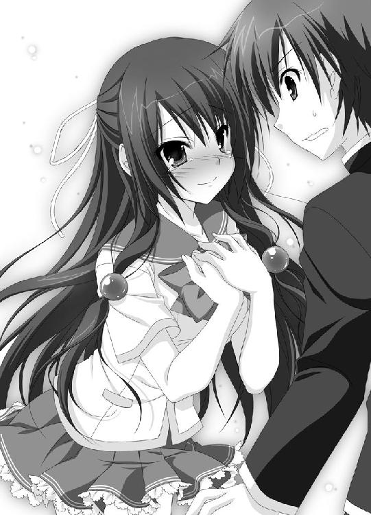
「いや、だから、風香先輩は角隠しっていう術で人間に変身してるんですよね？ でも、十八歳までに鬼の風香先輩を受け入れられる男とＨしないと、土になって消えてしまうんですよね？」
丁寧に説明する日高だけど、風香の呆れ顔は変わらない。
「そう言えば、角隠寺にそんな昔話が残ってたわね」
「そうです、角隠寺で聞いてきたんです！」
鼻息を荒くする日高に、無情にも風香は告げた。
「それ、嘘よ。人間が適当に作ったただの昔話だから」
「えっ？」
「鬼の娘が人間の男に告白して振られたってだけの話が、いつの間にか悲恋話にされてるのよ。人間って、そういうのが好きだから」
キョトンとする日高だけど、それでもと反論する。
「それじゃ、風香先輩が今朝呟いていたのは何なんですか？ 受け入れてくれるとか、助けてくれるとか、消える運命だとか。それに、俺に声をかけてデートに誘った理由は」
「ああ、そのこと。そうね、日高クンにはちゃんと説明しておかないとね」
そんな前置きをしてから、風香は話し始めた。
「先々週のことよ。友達の家に集まってみんなでお茶してたのよ。ちなみに、このみんなってのは、私と同じ鬼よ」
全体的に淡いピンク色で統一された、可愛らしい雰囲気の部屋だった。
集まっているのは五名の少女達だ。テーブルには紅茶とショートケーキ。華やぐおしゃべりの声。
これだけなら、どこにでもあるような女の子のお茶会だろう。
だけど、無視できない部分がある。
どの女の子達も、頭からは角が生えている。爪もするどく伸びているし、牙だって生えていた。
言うまでもなく、彼女達は人間ではない。
鬼の女の子達だったのだ。
他愛もないおしゃべりの中、一人の少女が思い出したように言う。
「そうそう、私ね。新しく下僕を増やしたのよ」
携帯画像を開き見せる。覗き込んだ少女らが声を上げた。
「へ、可愛い男の子じゃない」
「いじめがいがありそうね」
「でしょ？ 私がちょっと角を出して脅したら一発よ」
しばし笑い声が響いた後、一人の少女に矛先が向けられる。
「ねえ、風香さん。あなたの下僕はどんな男の子なの？」
「私は......まだ持っていないけれど」
風香の返事に、少女達は信じられないと声をハモらせた。
「年頃の鬼の女の子は、人間の男の子の一人や二人、下僕にしてるのが当たり前よ」
「風香さんなら、ちょっと脅せば誰だってすぐに下僕になるわよ」
「そうそう、飽きたら鬼の薬で記憶を消して捨てちゃえばいいんだから」
口ぐちに言う。
「それとも、何か下僕を持たない理由でもあるの？」
「そ、そんなのはないわよ」
きっぱりと否定する。
「いいわ、下僕を探すことにする。次の集まりの時に見せるから楽しみにしていてね」
「えっ、次の集まりって、確か風香の誕生日よね。二週間ぐらいしかないけど大丈夫なの？」
試すように聞いてくる少女に、風香は大したことないと頷いて見せた。
「心配しないで。二週間もあれば十分よ。楽しみにしてなさい、誕生日までに下僕を作ってみせるから。もし無理だったら、ラフォールのランチをみんなにご馳走するわ。約束よ」
「って、つい言っちゃったのが始まりだったのよね」
ふうと風香は息を吐く。
「ただね、それで私は自分の首を絞めてしまったの」
風香は辺りをキョロキョロと見渡した。誰もいないのを確認してから、日高へ顔を向ける。
「日高クン、今から話すことを誰にも喋らないって約束して。いい？ 絶対によ！」
頷く日高に、風香は声を潜め言った。
「実は私、ダメなのよ」
「何がダメなんですか？」
「その、鬼としては非常に問題があるのだけど......」
もじもじしてから風香は叫ぶ。
「鬼の姿を人に見せて、怖がられるのが......苦手なのよ」
意外な、告白だった。
「原因はあるのよ。小学生の時に好きな男の子に鬼の姿を見せて告白したんだけど、その男の子、怖がるのなんの、ひきつけを起こして救急車で運ばれたの。それがトラウマになっちゃってるのよ」
相当にショックな思い出だったのだろう。風香は悲しそうに遠い目をする。
「だから、鬼の姿で男の子を脅して下僕にするなんて、とてもできなかったの」
ふうと溜息をつき、風香は続けた。
「刻一刻とタイムリミットは近づいてくるし。私は焦っていたわ。ああ、どこかに鬼を怖がらない男の子はいないかしら？ むしろ鬼が大好きですって男の子。もしそんな男の子がいたら、怖がるどころか喜んで下僕になってくれるはず。そう願っていた時に、私は遭遇したの。鬼フェチの男の子に」
言うまでもなく、日高のことだ（まあ、実際は鬼フェチじゃないのだけど）。
「デートに誘って、ジェットコースターやお化け屋敷でのキミを見て、私すごく気に入ったの。だって、私の理想にピッタリだったから。悲鳴を上げたり怖がったり大騒ぎしたり腰を抜かしたり。本当に最高だったわ。隣にいてゾクゾクしたもの」
自分が鬼の姿を見せて怖がられるのは嫌なのに、そうじゃなければ平気......いや、むしろ楽しいらしい。
（この人......Ｓなんだ）
そんな確信を日高は抱く。
「だけど、せっかく私が鬼の姿を見せてあげたのにキミは喜ぶどころか悲鳴を上げて気絶してしまうでしょ。ショックだったわよ。時間も残されていないし、もう消える運命だったって思いこむことにしたの」
悔しそうに、風香は呟く。
「私の、今月のお小遣い。だって、ラフォールのランチが五人前よ」
ラフォールは、駅前のホテルの最上階にある高級フレンチレストランだ。いくらリーズナブルなランチとは言え、かなりの額となるだろう。
「消えるのは風香先輩じゃなくって......お小遣い......」
かすれた息で日高は吐き出す。
風香が消えてしまうのだと信じ、使命感すら胸に走ってきた自分が馬鹿のように思えてしまう。
魂の抜けたような顔で茫然と立ち尽くす日高に、風香は嬉しそうに細めた目を向けた。
「だ・け・ど......、状況は変わったわ。だって、キミが自分からやって来てくれたんだもの。しかも、私の気持ちに応えるなんて宣言までしてくれて」
風香が目頭を押さえる。
「本当に......嬉しいのよ。自分で言うのもなんだけど、私、かなりＳよ。下僕になったら、それはもう苦労すると思うわ。なのに、身を捧げてくれる男の子がいたなんて」
止まっていたはずの嬉し涙が、再びあふれ出てきたようだ。
さあ、青くなったのは日高だ。風香の喜びに水を差すのは悪いけど、誰も好き好んで下僕になりたいなんて思わない。
「ちょ、ちょっと待ってください！」
冗談じゃないと日高は両手を振った。
「お、俺、そんなつもりで来たんじゃないんです！ そんな下僕云々の話だって、今初めて聞いたんですから！」
「へ、それじゃ一体どんなつもりで来たのかしら？」
風香が尋ねる。何か含みのあるような笑みが口元には浮かんでいた。サスペンス劇場なんかでこんな笑みを浮かべている登場人物がいたらまず間違いなく犯人だろう。
だけど、焦った日高は名探偵にはなれなかった。そんな笑みには露ほども気付かない。
「その......俺は、風香先輩が土になると思い込んでたから、それを阻止するために、先輩と......Ｈするつもりで」
もごもごと答える。
「なあに？ 聞こえないわよ」
「だから、俺は、風香先輩を助けるために、先輩とＨして」
「もっと大きな声で、もっと端的に！」
教師のように言われる。さすがに少し頭にきた日高は、ヤケクソの大音量で叫んだ。
「俺は！ 風香先輩と！ Ｈするつもりで来たんです!!!」
「はい、ＯＫよ」
風香がポケットから携帯電話を引っ張り出した。
「張りのあるいい声だったわ。魂の叫びって言ってもいいわね。きっとうまく録音できてるはずよ」
操作された携帯電話から、世にも恥ずかしい日高の叫び声が響いた。
「俺は！ 風香先輩と！ Ｈするつもりで来たんです!!!」
「な、何てもの録音してるんですか!?」
顔を真っ赤にし携帯電話を奪おうとするけど、風香はあっさりと避ける。鬼になっていないのにもかかわらず華麗な身のこなしだ。
「これを全校放送で流したら、面白いことになると思わない？」
本気でそう思っているような質の悪い笑みを浮かべて風香が言う。
「私の下僕になってくれるって言うなら、そうしないでいてあげてもいいけれど」
何てことはない。ベタな脅迫だ。
「うぐぐぐ」
日高は必死に抵抗した。奥歯を噛み締め拳を握り、言いなりにはならないぞといった意気込みを見せる。
風香は、平然とした顔で、恥ずかしい台詞を連続再生した。
「俺は！ 風香先輩と！ Ｈするつもりで来たんです!!!」
「俺は！ 風香先輩と！ Ｈするつもりで来たんです!!!」
「俺は！ 風香先輩と！ Ｈするつもりで来たんです!!!」
「俺は！ 風香先輩と！ Ｈする......」
「わ、分かりました」
四回目にして、日高の心はポッキリと折れる。
「何でも聞きます！ 聞きますから、全校放送だけはご勘弁を！」
日高の敗北宣言が、屋上に響き渡ったのだった。
その12
そして、翌日の朝。
天狗山高校の校舎を出て、校門前へと向かう日高の姿があった。
その右腕には腕章がくくりつけられている。『風紀』と書かれたそれは、風紀委員の証だ。
そう、これから行われる朝の持ち物検査に参加するのだ。もちろん、検査する側として。
その表情はすぐれない。ドンヨリとした顔つきだった。
と、後ろから声がかけられる。
「その暗い顔、どうにかならないのかしら？ 朝からそんなじゃみんな気が滅入ってしまうわよ」
やって来たのは風香だ。
「暗い顔にもなりますよ。自分の境遇を考えたら」
ボソリと呟く。
「何も取って食おうってわけじゃないんだから。ただ私の下僕になってもらうだけよ」
にこやかにそう言うと、日高の肩をポンポンと叩き去っていく。
「消えるってのがお小遣いのことだって分かってたら、あんなことしなかったのに」
風香を助けるために必死になっていた自分が、改めて間抜けに思えてくる。
日高が特大のため息をついた時だった。驚いたような声が上がる。
「あっ、ひーくん!?」
パワフルに駆け寄ってくるのはむつみだった。新聞部の仕事か何かで早くに登校したのだろう。
「昨日はどーしたの？ あれから何回も電話したのに出ないから、あたし心配してたんだよ！」
「悪い、いろいろあって」
言葉少なに日高は答える。
「それと、鬼問題の方は一応は解決したから。もういいよ。ホント、いろいろサンキューな」
力なく礼を言う。
「それならいいけど......」
あくまで元気のない日高の様子にいぶかしげな表情で頷くむつみ。
と、むつみの瞳が大きく見開かれる。
日高の腕に巻かれた腕章に気付いたのだ。
「ひーくん、風紀委員会に入ったの？ ちょっとちょっと、それってどーゆーこと？ あたしがいくら新聞部に誘ってもＯＫしてくれなかったのに！」
「いや、これにはいろいろと深い事情があって」
正直に言うわけにはいかない。
『まあ、日高クンが喋ったところで誰も信じないとは思うけど、それでも秘密は守ってもらうわよ。もし喋ったら......私、キミのこと食べちゃうかもしれないわ』
と風香に言われているのだ。
まさか本当に食べられるとは思わないけど、ろくな目に会わないことは目に見えている。
「えっと、昨今の風紀の乱れに対し俺は......」
日高のとってつけたような説明を遮り、声が響く。
「そうよね、深い事情よね」
立ち去っていたはずの風香だった。にこやかに日高とむつみの元へと歩み寄ってくる。
「日高クン、知り合い？」
「二年Ｈ組、新条むつみです！」
むつみが声を張り上げる。
「ひーくんの幼馴染です。いわば保護者のようなものです！」
「保護者ってのは言い過ぎだろ？」
日高がぼやく。
「そう、保護者ね。だったらちゃんと本当のことを話しておいた方がいいかしらね。日高クンが風紀委員になった理由を」
（えっ!? 風香先輩。自分の正体のことを話すのか？ 相手は新聞部の部長だって言うのに、大丈夫なのか？）
少々ハラハラする日高の前で、風香は小声で囁いた。
「日高クンが、私に体の関係を迫ってきたからよ。しかもすごく強引に」
「えええええっ！」
驚いたのは日高だ。
「ちょ、風香先輩！ 何言ってるんですか!?」
「そ、そうですよ！ 鬼怒川先輩、ひーくんがそんなことするはずありません！」
うろたえながらも、必死に否定するむつみ。
「残念ながら、本当なのよね。はい、これが証拠」
躊躇うことなく風香が取り出したのは携帯電話だ。
「ぬおおおおお！」
日高は奪おうと必死に手を振り回す。だけど昨日のようにあっさりと避けられてしまう。
無情にも、ボタンが押された。
無情にも、その音声は響いた。
「俺は！ 風香先輩と！ Ｈするつもりで来たんです!!!」
「そん......な」
むつみが愕然とする。もちろん、その隣でムンクの叫びみたいな顔で硬直しているのは日高だ。
「私一人きりの風紀委員室に入ってきてこんなことを叫んだのよ。さすがに驚いたわ。ちなみに、この音声はたまたま、本当にたまたま録音できちゃったのだけどね」
わざとらしくそんなことを言う。
「このセクハラ発言は大問題よ。だけど、日高クンもすぐに正気に返って平謝りしてくれたから、罰として風紀委員の仕事をしばらく手伝ってもらうことにしたの。他の女の子にそんなこと言わないように、私が目を光らせておかなくちゃってのもあったしね。一言で言えば、保護観察処分みたいなものよ」
いけしゃあしゃあと嘘を重ねる風香。だけどその口調には一切の淀みもない。証拠の音声もあるし、むつみが信用してしまったって仕方のないことだった。
「ひーくんの、ひーくんの、ひーくんの......」
涙を満杯にためたむつみは、日高に向かって力いっぱい叫んだ。
「ケダモノおおお!!!」
強烈なパンチが炸裂した。日高はあっさりとぶっ飛ばされる。
「ああああああああん!!!」
砂煙を巻き上げそうな勢いで、むつみは走り去ってしまう。
「むつみ！ 違うんだああああ！」
もう、届かない日高の言葉。
「ふ、風香先輩!!! どーしてあんな嘘を言うんですか!?」
地面に膝をついたまま、風香を見上げ叫んだ。
「もちろん、日高クンを独り占めしたいからに決まってるじゃない。キミは私の、私だけの下僕なんだから」
風香は、日高の両頬に手を当てると優しく微笑む。
「日高クンは、すべての女の子から軽蔑されちゃえばいいのよ。私だけ見てればいいの。そして、私にだけ見せてくれればいいの。驚いたり慌てたり泣いたり叫んだりする姿をね」
うっとりとした瞳が、一瞬金色に染まるのを日高は見逃さなかった。
「これからもよろしくね。日高クン」
日高は心の中で力いっぱい叫んだのだった。
（鬼いいいいいいいいいいいいい！）
って。
おわり
第二話 眼鏡とボインと神通力
その１
時計の針は、午前一時にさしかかっていた。
電灯の明かりの下、一人の少女がベッドに横たわっている。
水玉模様のパジャマを着た少女だ。眼鏡が特徴的だけど、今注目すべきはそこじゃない。ボタンがいくつか外された胸元から今にもこぼれ落ちそうな胸。その大きさはかなりのものだ。
眼鏡と胸とくれば、もうあの人物に決まっている。
そう、自称日高の保護者。新条むつみその人だ。
ここは彼女の自室。ベッドに横たわり、分厚いアルバムを眺めているのだった。
アルバムに貼られているのは、幼い頃の自分の写真だ。まだ現在のトレードマークたる眼鏡も大きな胸も存在していない頃だ。
どの写真にも必ずと言っていいほど、痩せて小柄な少年が写っている。カメラを向けられるのが恥ずかしいのか、むつみの背中に隠れてしまっていることも多い。
「可愛かったな。小さい頃のひーくん」
むつみが目尻を下げた。
「いっつも、むつみちゃんむつみちゃんてあたしにくっついて来てたんだっけ」
懐かしい記憶を思い出し、にふふふふふというとろけた笑みを浮かべる。
日高が引っ越しをしてしまったために今はそうでもないが、昔は本当に家が近かった。お隣とは言わないまでも、徒歩一分もかからなかった。
それこそ幼稚園に入る前から二人は一緒だった。しょっちゅうお互いの家に遊びに行ってたし、お泊りだってしたことがある。
だからこそ、二人一緒の写真がこんなにも多いのだ。
しばらく楽しそうにアルバムを見ていたむつみだけど、不意にはあとため息をつく。
「なのに、大きくなるにつれてひーくん付き合いが悪くなっちゃうし。新聞部に何度誘っても来てくれないし。挙句の果てに、あたしの知らないところで鬼怒川先輩にあんなハレンチなことを言うなんて......」
むつみは、ベッドから立ち上がると本棚へと歩み寄る。そこに収められている一冊のクリアファイルを手に取った。自分の書いた記事や資料の写真が収められているファイルだ。
ファイルの中から引っ張り出したのは長い黒髪の美少女、鬼怒川風香の写真だ。
前に学校新聞で、何かと注目度も高い風香を特集した時のものだ。
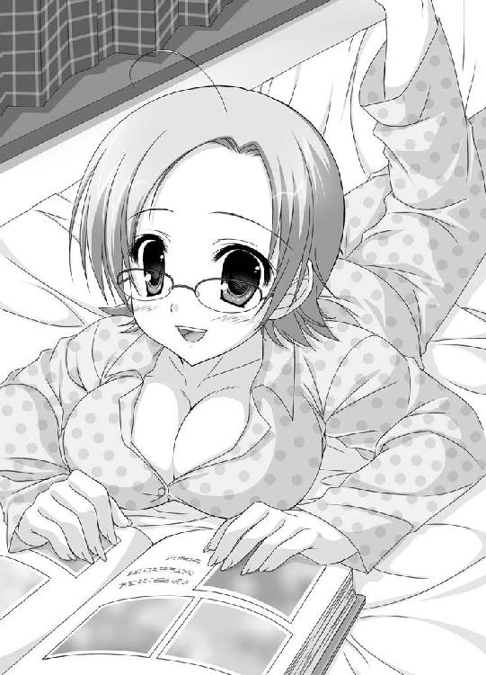
同性のむつみから見ても、風香はほれぼれするような美人だった。
特大のため息と共に、むつみは呟く。
「ひーくんも男の子だから、仕方がないのかな。鬼怒川先輩、こんなに美人なんだし」
呟いてから、強く首を振る。
「ダメダメ！ 認めてどーするのよ！」
むつみは拳を固める。
「とにかく、今、ひーくんは間違った方向に進みかけてる。このまま進んだら末は性犯罪者になっちゃうかも。保護観察処分なら、それは鬼怒川先輩の仕事じゃない！」
ぐもももももと、むつみは盛り上がった。
「ひーくんを更生させるのは、幼馴染であるあたしの仕事だよ！」
むつみは眼鏡と胸だけが取り柄の人間ではなかった。
日高にとっては傍迷惑なことに、強烈な実行力ってのがあったのだった。
その２
ジリリリリリン。
という目覚まし時計のベルの音で、日高は目を覚ました。
時計の針は午前七時三十分を指している。今日は朝の持ち物検査もない日だから、これぐらいのんびりしてもかまわないのだ。
むっくりと起き上がると日高は大きく伸びをした。ベッドを出るとカーテンを開く。明るい朝日が飛び込んでくる。空は青空だ。
ふわあと欠伸をしながら、日高は自分の部屋を出た。階段を下りて、まずはトイレと洗面所へ向かう。その途中、リビングルームの前を通りかかった。
テーブルで朝食をとる両親の姿が、寝ぼけ眼にぼんやりと見えた。持ち物検査のある時は朝は六時半起きで向かわなくちゃならないからいつも一人で食パンを齧っていた。家族そろっての朝食は数日振りだった。
「おはよ～」
一応寝ぼけた声でそう挨拶をしてから、通り過ぎる日高。だけどその後ろから声が飛んでくる。
「おっは、ひーくん」
母親の声ではなかった。もちろん父親でもない。
自分をひーくんなんて呼び名で呼ぶのは、あの人物しかいない。
「えっ!?」
眠気も吹っ飛び、日高はリビングに飛び込んだ。ごしごしと目を擦り寝ぼけ眼をリセットする。
テーブルの上には、焼きたてのトーストにコーヒーに牛乳に野菜サラダに目玉焼きに昨晩の残りの肉じゃが。でもそんなものはどうだっていい。
問題は、両親の他にもう一人いた人物だ。
セーラー服を着たその人物は、むつみだった。さも当然といった様子で朝ごはんを食べている。
風香がむつみに録音を聞かせてから一日しかたっていない。
どうにか誤解を解こうと昨日は彼女を追いかけたのだけど、ずっと避けられてしまっていた。
そんなむつみが、一晩明けたら我が家にいる。
謎だった。ミステリーだった。理解不能だった。
口をパクパクさせている日高に、むつみが笑顔で言う。
「あ、ひーくん。今日からしばらくこの家で御厄介になるから」
ますます何が何だか分からなくなる。
「ど、どういうこと？」
「どういうことじゃないぞ。日高、むつみちゃんから聞いたぞ」
父親が怖い顔をする。
「最近、とみに成績が下がってるそうじゃないか」
「二年に進級したばかりでこれじゃ先が思いやられるって、担任の先生も呆れてるんですって」
母親が続ける。
「そこで、むつみちゃんがしばらく泊まり込みでお前の勉強を見てくれるって言ってるんだ。ありがたいじゃないか」
「本当、持つべきものは優しい幼馴染。むつみちゃんに感謝するのよ」
成績が下がったなんて聞いたことがない。と言うか、中間テストだってまだ終わっていないのだ。判断しようがないじゃないか。
明らかにむつみのついた嘘だ。
「おっと、もうこんな時間か。そろそろ出なければ。母さん、チェックのハンカチを知らないか？」
「えっ？ 洗濯してまだ乾いてないわ」
「何!? 今日は大切なプレゼンがあるんだ。あの幸運ハンカチがなければ話にならん」
日高の父親は、ゲンを担ぐクセがあった。
母親も慣れたもので、呆れることなく頷く。
「分かったわ。それじゃすぐにアイロンをかけるわね」
二人が席を立ちリビングを離れる。今だとばかしに日高はテーブルへと駆け寄った。
「む、むつみ。これは一体どーゆーことなんだ？」
「あたし、昨日の朝は本当に驚いたんだよ」
怒り満々の様子で、むつみが言う。
「鬼怒川先輩がいくら美人だからって、あんなハレンチなことをひーくんが言ってたなんて」
「いや、あれなんだけど、誤解なんだって」
「嘘は止めて、ひーくん。正直に答えて。言ったんでしょ？」
そりゃ、言ったか言わないかで答えたら当然答えは前者になる。
苦悶しながら、日高は頷いた。
「だけど、むつみが思っているようなシチュエーションじゃ」
「あたし、本当に驚いたんだよ」
日高の言葉を遮り、むつみが繰り返す。
「そして、すごく悲しかった。ひーくんが、そんなハレンチな男の子になっちゃったんだって。一度は軽蔑しそうになった。だけど、できなかった。だって、ずっと一緒にいたひーくんなんだよ。だから、決めたの」
熱い瞳でおっしゃった。
「ひーくんは、幼馴染であるあたしが更生させるって！ 性犯罪者になんかさせないって！」
性犯罪者予備軍のように言われて、日高の心はかなりヘコんだ。
（そんなんじゃないんだ、そんなんじゃないんだ、そんなんじゃないんだ、そんなんじゃないんだ）
心の中で叫ぶけど、もちろんむつみには伝わらない。
「つまり、鬼怒川先輩が言っていた保護観察処分を、あたしがやろうってこと。これからしばらくあたしはここに暮らして、ひーくんを監視しつつ生活を改めていくから。決して道を踏み外さないように！」
少しだけ笑顔になり、むつみはこう付け加える。
「あ、オプションとして勉強もちゃんと見るから。そこんとこも期待していいよ」
確かに日高よりもむつみの方がはるかに成績はいい。新聞部だってのが関係しているか分からないけど、現国に古文に英語といった文系の教科はピカ一だ。
でも、だからって喜べるはずがない。日高の両親がいるとは言え、年頃の男女が一つ屋根の下で暮らすのだ。
「ちょ、ちょっと待てって！ いくら何でもそんなことが許されるはずがないだろ!?」
「ひーくんのおじさんとおばさんは喜んでＯＫしてくれたよ」
「うちの両親は特殊だから。だけど、むつみのおじさんとおばさんは」
「お父さんには、女友達の家に泊まるって言ってあるから大丈夫。お母さんには、ひーくんの家に行くって話したけど」
「は、反対されたよな？」
すがるような瞳で答えを待つ日高だけど、
「ううん、ひーくんの家なら問題ないわねって」
特殊なのは、先方の母親も同じのようだ。
むつみの母親には昔から気に入られていることを日高は思い出す。
「あたし、がんばるから！ つらいだろうけどひーくんもちゃんとついて来てね！」
付き合いが長いから、むつみの性格は知っていた。とにかく頑固で、一度言い出したらきかない。
風香の正体も含めて最初から説明できればまだしも、それができない日高にむつみ説得は不可能だった。
メラメラと闘志を燃え上がらせるむつみを、日高は茫然と見つめることしかできなかった。
その３
男子高校生が集まれば、女の子の話になるのは自然の摂理というものだろう。
天狗山高校、二年Ｃ組の教室でもそうだった。昼休み、数人の男子が集まり会話に花を咲かせている。
「やっぱり、学校一の美人は鬼怒川先輩で決まりだよな」
「ああ、そうだな。美人だし、格好いいし、あの鋭い眼差しと言ったらないよ」
「知ってるか？ 風紀委員の一年にも可愛い娘いたぜ。確か、尾道と春木って言ったかな」
わいわいと話す中、一人の男子生徒が声を出す。
「お前ら、大切な人を忘れてないか？ 俺達思春期の男子生徒を悩ましくも苦しめるあの方を」
一同は、分かったとばかしに頷き異口同音に言った。
「Ｈ組の新条さんか！」
「何てたってあの超高校生級の胸だからな。思い出しただけでもたまらないぜ」
「ああ、一度でいいからあの胸に顔を埋めてみたいものだ」
女子生徒から顰蹙を買うことも恐れず願望を丸出しにしてから、男子生徒達は急に険しい顔になる。
「そう言えば、うちのクラスに一人いたな。この世の幸せを独り占めしているような奴が」
「ああ、いたいた。なかなか入れないことで有名な風紀委員会にいきなり入ってしまっただけでなく、いつも放課後は鬼怒川先輩と一緒にいるあの男だろ？」
「さらに、我らが新条さんとも幼馴染っていう幸運の星の下に生まれたとしか思えない奴」
男子生徒らは、そろって同じ方向へと顔を向ける。
「武蔵野。今日という今日は詳しく説明してもらうぞ。どうやって鬼怒川先輩に取り入ったのか？ 新条さんとはどこまでの関係なのか？ まさか幼馴染ってことを利用してあんなことやこんなことなんかを......」
日高の席は空っぽだった。ただ車屋が一人、焼きソバパンを頬張っている。
「日高なら、ついさっき逃げたよ。自分に矛先が向きそうだからって」
「あいつめ」
男子生徒らの、羨望のうめき声が教室に響いた。
「ふ、危ないとこだったぞ」
教室から逃げ出した日高は、ふうと息を吐き出す。
日高が風紀委員会に入ったことは、たった一日でクラス中に広まってしまった。腕に腕章をつけているから隠しようがないのだ。
ただでさえむつみとの関係のことでいろいろと詮索されているのに、さらにそこに風香のことが加わる。
男子生徒のやっかみの的になるのは仕方のない流れだった。
ほとぼりが冷めるまでは、こまめに逃亡するしかないだろう。
「もしこれで、むつみがしばらく俺の家に泊まるなんてことが知られたら......」
さらなるヒートアップは確実だった。
（秘密にしとかなきゃな）
そう決めてから、日高は改めて考え込む。
（しかし、本当にいいんだろうか？）
そりゃ、確かにむつみは幼馴染だ。昔は、お互いの家に泊まりに行ったことだってある。それこそ、同じ布団で眠ったことだって（そして日高はおねしょをしたのだけど、本人の名誉のため触れずにおく）。
だけど、もうあれから十年もたっているのだ。
今のむつみは、ムチムチした体と大きな胸を持つまでに至っている。もう子供なんかじゃない。
そこのところを、日高の両親はまるで分かっていない。
むつみ本人だって分かっていないようだ。
（それとも、考えすぎなのか？ こんなに意識するなんて、俺の方がどうかしてるのか？）
悩んでも答えは出ないから、日高は気を取り直すように強く首を振った。
「別に二人っきりってわけじゃない。父さん母さんは普通にいるんだし、心配しすぎだって」
自分に言い聞かせるように呟いた直後だった。ポケットの中の携帯電話が身震いを始めた。
「家から？ 母さんか」
日高は携帯に出る。
「もしもし、母さん。どうかしたのか？」
『日高ちゃん！ お勉強中ごめんね！』
テンションも高く母親の声が響く。日高は嫌な予感がした。母親が自分を日高ちゃんと呼ぶのは、舞い上がってる時だけだ。そしてそれは、思わぬ不幸を日高にもたらすことが多い。
「嬉しそうだけど、何かあった？」
『何かあったじゃないのよ。今、お父さんから電話があったの！ 今日のプレゼン、大成功なんだって!!!』
朝、父親がプレゼンのためにハンカチにこだわっていたのを思い出す。
結局、母親がアイロンをかけたハンカチをポケットに入れて出社したようだった。
「良かったんじゃない。幸運のハンカチパワーがきいたんだよ」
適当に答えながらも、日高は少し困惑気味だ。
（嬉しいのは分かるけど、わざわざ息子に電話をかけてくることじゃないぞ）
まだこれだけじゃ終わらない。そんな息子の勘がざわついている。
悲しいことに、その勘は間違いじゃなかった。
『社長さんも大喜びだとかで、特別休暇と旅行券をくれたそうよ。だから、二人で温泉巡りの旅に出ることにしたの。夕方ぐらいには出発するから、しばらく留守番頼むわね』
「ちょっと待った!!!」
日高は大声で叫ぶ。
「母さん、何言ってんだよ!? それじゃ、俺とむつみが二人っきりになるじゃないか!?」
『あ、そう言えばそうだったわね』
さすが、日高ちゃんと呼ぶだけのことはある。天にも昇る浮かれっぷりだ。
温泉巡りを断念してくれると思いきや、母親はとんでもないことを言う。
『丁度良かったわね。むつみちゃんがいてくれればお母さんも安心だわ』
「ちょ、母さん！」
『あ、お父さんが来るまでに急いで荷造りをしとかなくちゃ。じゃね、日高ちゃん。お土産、楽しみにしてるのよ～』
電話は一方的に切れた。いくら日高がかけ直しても通じやしない。
こうなったら父親にと、父親の携帯に電話をしようとしたけれど、すぐにそれを止めた。
父親だってさぞや有頂天になっていることだろう。母親と同じことを言われるのがオチだ。
（しょーがない。むつみにわけを話して、保護観察は延期にしてもらおう。さすがのあいつでも、二人っきりは問題だって分かるだろ）
そう思った直後だった。後ろから声をかけられる。
「あ、ひーくん」
むつみだった。
実にいいタイミングだと、日高はむつみに話しかける。
「むつみ、実はちょっとトラブルが起こったんだ」
「トラブル？」
先程の電話のことを説明しようとしたけれど、ここは廊下で人通りも多い。内容が内容だけに聞かれたくなかった。
「ちょっと、こっちに」
むつみを引っ張って、人気のない渡り廊下の隅まで連れて行く。
「今母さんから電話があったんだ。父さんがプレゼンを大成功させたとかで、会社からご褒美で特別休暇と旅行券をもらったとか」
「あ、そうなんだ。おめでたいじゃない」
むつみが顔を綻ばせる。
「そこからが問題なんだよ。二人そろって温泉巡りの旅に出かけるなんて言ってるのだ。しかも、今日から」
日高が苦笑する。
「そういうことだから、むつみが家に来るってのは延期にしてくれよ。まあ、俺個人としてはそのまま中止になってくれたっていいんだけど」
「何言ってるの？ ひーくん。延期なんてとんでもないよ。おじさんおばさんがいなかったらますますひーくんを一人にしとけないもん」
真剣そのものでむつみが言う。
「予定どおり、ひーくんの家に御厄介になるから！」
「むつみ、お前分かってるのか!? 俺と二人きりになるってことなんだぞ!?」
焦った日高がそう主張するが、
「好都合だよ。おじさんおばさんがいなかったら、さらに徹底的にやれるから」
むしろ嬉しそうにむつみが頷く。
「じゃ、あたし、新聞部の仕事あるから」
スチャって右手を上げると、むつみは立ち去って行った。
茫然と立ち尽くす日高だけが残された。
「と、とんでもないことになったぞ」
かすれた息を、吐き出した。
その４
数時間が経過した、午後の七時過ぎ。
すっかり薄暗くなった道を、日高はとぼとぼと歩いていた。
いつもより時間をかけてきたのに、気が付くと自宅前に到着している。
部屋の灯りが見える。中に誰かがいるのは間違いない。
「むつみの奴、もう来てんだろーな」
もし自分が買い物にでも出かけている時にむつみが来たら大変だと、朝、母親が合い鍵を預けていたのは知っている。きっとそれを使って家に入ったのだろう。
「ええい、ここまで来て逃げるわけにはいかないぞ。むつみはただの幼馴染、むつみはただの幼馴染、むつみはただの幼馴染」
呪文のようにその言葉を繰り返してから、日高は玄関の扉を開けた。
「ただいま」
「あ、お帰り。ひーくん」
エプロン姿のむつみが顔を出す。
「遅かったから心配してたんだよ」
「風紀委員ってのは放課後も忙しいんだよ。部室のチェックとか、放課後の見回りとか」
二階にある自室に向かい鞄を置く日高。と、そこで強烈な違和感ってのに気付く。
（待てよ。俺の部屋って、こんなに綺麗だったっけ？）
温泉巡りで舞い上がっていた母親が掃除をしてくれたとは思えない。となると......。
日高はダダダダダダと階段を駆け下りると、台所に立つむつみに声を飛ばす。
「むつみ！ お前まさか、俺の部屋を掃除したんじゃ!?」
「したよ」
悪びれもせず、むつみが答える。
「もしかして、ベッドの下なんかもか？」
「もちろん。たまってたホコリも綺麗にしておいたよ。あ、それから」
付け加えるようにむつみが言う。
「そこにあった、いかがわしい本は全部まとめて資源回収に出しちゃったから」
「なあああああああ」
日高は頭を抱えた。
いかがわしい本って言ったって大したことはない。せいぜいグラビア雑誌だ。中には、友人から借りたものだってある。
「ど、どーして勝手にそんなことするんだよ！ 借りたものだってあったのに」
「ちょっとひーくん」
右手に包丁を持ったままむつみがこちらを向く。
ギラリと光る眼鏡が恐ろしい。
「あたしは、ひーくんを更生させるって言ったでしょ？ あんな本が近くにあるなんてよくないよ」
その圧力に、日高も何も言えなくなってしまう。
「待っててね。もうすぐ夕飯ができるから」
むつみは笑顔に戻ると調理を再開する。
「きっと、ひーくんは肉ばっかり食べてるからおかしな衝動が強くなっちゃうんだよ。あたしがいる間は、野菜中心でいくから」
野菜は嫌いじゃないけど、少しくらいは肉も欲しいと思う日高。でもむつみの気迫には逆らえない。
「おやつでも食べるか」
お菓子好きの母親が常備してあるチョコレート菓子を引っ張り出し封を切る日高だったけど......。
「甘い物の取り過ぎも駄目。自制心がきかなくなるから！」
って理由で没収。
「ゲームでもするか」
ゲーム機のスイッチを入れて、ドギュンドギュンと敵を撃ち倒していくゲームを始めるけれど......。
「そんなバイオレンスなゲームも禁止！ 乱暴になるから！」
問答無用でスイッチが切られてしまう。
「じゃあ、俺は一体何をしていればいいんだ？」
「運動でもしててよ。エネルギーを運動とかで発散させれば、よくない衝動が起こりにくいってテレビでやってたから」
「いきなり運動って言われても......」
むつみはいきなり日高の腕を掴んだ。そのまま体を反転させて背中同士を密着させる。
「二人一組でやるストレッチ体操ね。体も伸びるし、けっこう体力も使うんだよ。今、シチューを煮込んでるところだし時間あるから付き合ってあげる」
むつみ先生によるストレッチ体操が始まった。確かに彼女の言葉通り、体も伸びて体力も使う。
だけど、日高は穏やかではいられない。だって、むつみと密着しているのだから。
まだ、背中合わせのはマシだったけれども、種類によってはむつみの胸が当たってしまうのだって存在した。いくら幼馴染って言ったって、これには大いにまいってしまう。
大きな胸が、幾度となく日高に押し当てられる。
肩に、腕に、足に、背中に、日高はそのマシュマロのようなやわらかさを感じた。極めつけは、日高を座らせ横向きに体を伸ばすというストレッチ体操。
体の堅い日高をどうにかしようと、むつみはそのムチムチした体でのしかかってくる。
彼女の大きな胸は、確実に日高の横面を捕らえていた。これで平然としてられる男子なんているはずがなかった。
必然的に真っ赤になる日高の顔に、むつみが気付き目を大きくした。
「ちょっと、ひーくん。顔が赤いよ！ もしかして熱でもあるんじゃ？」
「いや、これは違うんだって。熱とかじゃなくって」
とりあえず一人で落ち着かせてくれと態度で訴えるけれど、この幼馴染には通じない。
「ダメダメ、本当に熱があった大変だから」
日高をソファーに押し倒すと、その上に乗るように座る。
「えっと、どうかな？」
自分のおでこと日高のおでこを手で計る。
よく分からなかったのか、むつみは首をひねり、うかない顔をする。
「やっぱり、ダイレクトにやんなきゃダメね」
むつみが日高に顔を近づけた。おでことおでこをくっつける。
「だから、熱なんかじゃないんだ！」
限界突破な日高はついに叫んだ。
「お前がくっついてるから！ ドキドキして赤くなってるんだよ！」
「えっ!?」
むつみが驚いた顔をした。信じられないって様子で口をパクパクさせる。
「あたしが、くっついてるから？ あたしで、ドキドキしてるの？」
しばし酸欠の金魚みたくなってから、むつみは慌てて日高から離れる。
頬の辺りをピンク色に染めて、歯切れ悪く言った。
「そ、そんなのおかしいよ。だってひーくんはあたしの幼馴染だし、小さいころからずっと一緒だし、それこそ昔は、あたしがお姉ちゃんみたいに面倒を見てあげてたんだし、そんな、あたしでドキドキするなんて。ありえないよ......そんなの」
『ピンポーン』
波乱を巻き起こすチャイムの音が、武蔵野家に響いた。
その５
その音は、日高にとっては救世主の産声のように聞こえた。
（さすがに二人っきりだってのを心配して、父さんと母さんが帰ってきたに違いない！）
恥ずかしさから逃げ出したいのもあって、日高はソファーから飛び起きると玄関へと直行する。
「ま、待ってたぜ！」
鍵を開け扉を開いた瞬間、日高はガッチガチに硬直した。
そこに立っていたのは、やたらゲンをかつぎたがる父親でもなく、うかれると手に負えない母親でもなかった。
長い黒髪で、力強い目付きで、プロポーションも抜群で、大人びた魅力満載で、学校一の美人とも噂される風紀委員長。
実はその正体は鬼っていう、鬼怒川風香だったのだ。
しかも学校の制服ではない。一度家に帰り着替えたのか、私服姿だ。
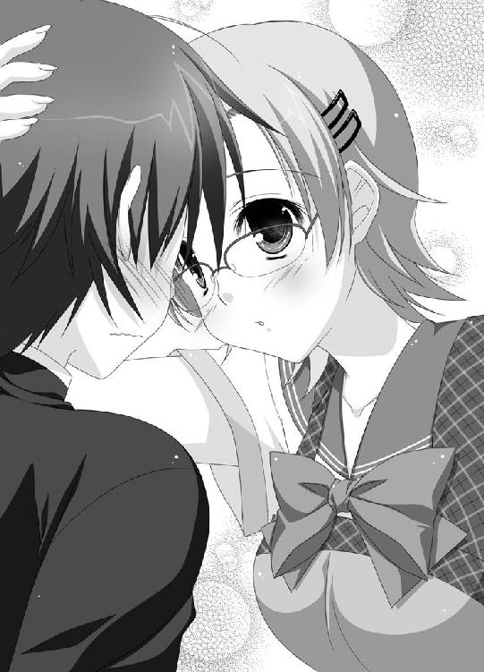
「ふ、風香先輩！」
予想なんかしていなかった。こんな時刻に私服姿の風香が自分の家を訪れるなんて、想像できるはずがないのだ。
驚いて言葉も出ない日高に、風香は言う。
「今晩は。日高クン。待っててくれたなんて嬉しいわね」
「それは、ちょっと勘違いして......。それより風香先輩。どうしてここに？」
掠れた声で尋ねる。
「ほら、これから毎日、日高クンは風紀委員の仕事で居残りしてもらわなくちゃならないでしょ？ 帰りも遅くなるし、風紀委員長としてご家族に一言挨拶をしておかなくちゃって思ったの」
とってつけたような笑顔でそう答えてから、風香は目を細め小声で囁く。
「と言うのは建て前。本音を言うと、日高クンのお家訪問がしたかったのよ。下僕の生活がどんななのか、ご主人様としては知っておく必要があると思わない？」
うずうずといった顔で風香は続ける。
「日高クンのベッドの下とか、どんなものが隠されてるかすごく気になるわね。鬼フェチは勘違いだったとしても、何か別の性癖が見つかるかも？」
風香もまた、日高のベッドの下を狙っていたのだ。
『むつみと言い風香先輩と言い、どうして女の子はベッドの下に興味津々なんだ！ 青少年のシークレットゾーンだってのに！』
不条理を心の中で叫んでから、日高はハッとする。
（そうだ、今はむつみと二人っきりなんだっけ？ そんなこと風香先輩に知られたら、知られたら！）
どうにか帰ってもらわないとと、日高は全力で嘘をついた。
「あ、風香先輩。実は今ちょっと取り込み中なんです。ガスコンロが爆発してトイレが逆流して、さらに異常発生したネズミが大行進してるんです。悪いんですけど、お家訪問はまた次の機会に。その時は家族一同大歓迎するんで」
早口でまくしたて、どうにか扉を閉めようとするけれど。
「ひーくん、お客さん？」
リビングからむつみが出てきてしまう。
「!!!」
「!!!」
むつみと風香が、それぞれの存在に気付いた。
「あら、誰かと思ったらむつみさんじゃないの？ こんな所で何をしてるのかしら？」
最初に口を開いたのは風香だった。少々、威圧的な口調で。
「あたしは、ひーくんを性犯罪者への道から連れ戻すために来てるんです。あたしは幼馴染で、保護者みたいなものですから。もう二度と、鬼怒川先輩に言ったようなことを他の女の子に言わないようにする義務があるんです」
「つまり、自分の体で日高クンの欲求を解消してあげようってわけ？」
「そ、そんなんじゃありません！ 生活とか習慣とかを改善させて、身も心も健全になってもらうんです！ 第一」
少しだけ自信なさげに、むつみは続けた。
「ひーくんが、あたしに......そんなこと言うなんて......ありえないですから」
そうよねって感じで日高を見てから、むつみは改めて風香を睨む。
「それで、鬼怒川先輩こそ何しに来たんですか？」
「私は、日高クンのご両親にご挨拶に来たのよ。風紀委員の仕事で、日高クンを遅くまで拘束することになるから一言お詫びをと思って」
「残念ですけど、今は、ひーくんのおじさんとおばさんも留守してます。温泉巡りの旅に行ってて、しばらくは戻ってきませんから。また出直してください！」
それだけ言うと、むつみはリビングへと引っ込んでいく。
「ねえ、日高クン」
風香が少々険悪な声を出した。
「つまりそれって、日高クンとむつみさん、二人っきりってことよね？」
「まあ、そういうことになりますね」
額の汗を拭いながら答える。
「最初はそんなことなかったんですけど、急に両親が温泉旅行に行くことになって」
「日高......クン」
いきなり風香は日高の耳に手を伸ばすと、ぎゅむって引っ張った。
「いたたたた、いたたたたたたたた、痛いですよ、風香先輩！」
日高が悲鳴を上げる。
「キミは、どうしてこんな大切なことを私に言わないのよ!? 私が偶然に来ていなかったらどんなことになっていたか分からないわよ！」
「いたたたたたたたたたたた」
耳拷問をしばし続けてから、ようやく風香はその手を放してくれる。
「まあ、いいわ。私、残るから」
「えっ!?」
「向こうが保護者ならこっちは所有者よ。日高クンの体は、その肉の一片、血の一滴まですべて私のものなんだからね。好きにはさせないわ」
さっさと靴を脱ぐと、ドカドカと家の中へと入っていく。
「むつみさん。私もご一緒させてもらうわね。こんな状況、風紀委員長として見逃せないもの」
そして、風香とむつみの対決が、スタートしたのだった。
『第１試合 料理対決』
「さ、ひーくん。どうぞ」
テーブルの右半分には、むつみの作った夕食のメニューが並べられていた。
「カボチャとブロッコリーのシチューに、アスパラとレタスとトマトのサラダ。ほうれん草のおひたしに、ご飯はもちろん五穀米。デザートはそらまめプリン。野菜ジュースも用意したよ」
見事なまでの野菜づくしだった。
「日高クン、こっちも召し上がれ」
左半分に置かれたメニューを促し、エプロン姿の風香が言う。
「牛肉のステーキに、鶏のからあげ。コロコロチャーシュー入りガーリックライスに、とん汁。デザートは特大サイズのショートケーキ。飲み物はコーラでいいわよね」
こちらは肉＋高脂肪高カロリーのメニューだ。
「鬼怒川先輩、そんなのメニューじゃひーくんは良くなりませんよ。健康にだって悪いし」
むつみが文句を言うと、
「あら、そんな物足りないメニューで不満を溜める方が問題だと思うわよ。育ち盛りの男の子なんだから、これぐらいのカロリーは必要だわ」
と風香。
両者が、バチバチと火花を散らす。
「ひーくん！ 早く食べて！」
「日高クン、早く食べなさい！」
両者とも、ボリュームは満点だ。それに険悪な二人の気迫に当てられて食欲なんかない。
料理を前にすっかり及び腰になってる日高に、我慢がならなくなったのだろう。
風香がナイフとフォークを手にするとステーキを分厚く切った。
「はい、日高クン。あんして」
血もしたたるような厚切り肉を、日高の口元へ。
これにはむつみもおおいに闘争心を刺激されたようだ。スプーンでシチューをすくうと、フーフーと吹いてから日高の目の前へ。
「はい、ひーくん。舌を火傷しないようあたしがフーフーしてあげたよ」
もはや足踏みはしてられなかった。
日高は意を決すると一気に料理を食べ始める。
どちらかを残すなんてできないから、必死に口に押し込み飲み込む。
「うっぷ、おいしかった」
ポンポンになった腹を擦る日高に、二人が詰め寄った。
「ひーくん、どっちがおいしかった？」
「日高クン、どっちがおいしかったかしら？」
「......りょ、両方......」
そう答えるのがやっとだ。と言うか、それ以外には答えようがない。
二人は、そろって不満気な顔をする。
さらなる追及を逃れるために、日高はさっさと席を立った。
「お、俺、風呂入ってくるから！」
『第２試合 入浴剤対決』
むつみが沸かしておいてくれたのだろう。すでにお風呂は準備ＯＫだった。
湯船にゆったりと浸かりながら、日高は束の間の休息を味わう。
「しかし、風香先輩、いつまでいるつもりなんだろ？」
まさか、このままむつみと一緒に泊まり込むつもりなのでは？
そんな不安が胸に込み上げる。
（ああ、こんなことなら父さんのハンカチをこっそりどこかに隠しておけば良かった。そしたらきっとプレゼンも失敗して温泉旅行もなくなって、もうちょっと収拾がついたかもしれないのに）
大分のぼせてきて、日高が湯船を出ようとした時だった。
いきなり脱衣場と繋がるドアが開かれると、むつみと風香が先を争うように飛び込んでくる。さすがに裸ってことはないけれど、日高としては大いに困る。
「うわああ」
日高は慌てて湯船にダイブする。
「ふ、二人とも何を！」
「ひーくん、入れるならこの入浴剤だよね!?」
むつみが突き出したのは、水色のボトルの入浴剤だ。
「あたしオススメの、森林の香りスペシャル！ 疲れた体を癒してリラックスさせてくれるんだよ！」
「駄目よそんなんじゃ。日高クン、入れるなら断然これよ」
風香が突き出すのは、対照的に真っ赤なボトルの入浴剤。
「私が、わざわざ一度家に戻って持ってきた愛用の入浴剤。唐辛子ＭＡＸ。肌を刺激するぐらいのカプサイシンパワーで元気一杯になるわよ」
二人はまたバチバチと火花を散らすと、両方の入浴剤を突きつける。
「さあ、ひーくん、どっち？」
「日高クン、どっち？」
なかなか選べない日高を見て、むつみが優しい声で言う。
「ひーくん、こっち入浴剤を入れてくれたら、あたしひーくんの背中を流してあげるよ」
「日高クン、こっち入浴剤を選ぶなら私が特別に背中を流してあるわ。光栄なことでしょ？」
妙になまめかしい目つきで風香が言う。
「だったらひーくん！ あたしが背中を流す時は、水着を着てあげる！ タクシーで取りに行けばすぐだから！」
「日高クン、私の水着姿、見たくない？」
すかさず風香も対抗する。
「だったらだったら、あたしは裸にバスタオル巻いちゃうんだから！」
「そういうことなら、私も負けないわよ」
もはや収拾がつかない。放っておけばその場で服を脱ぎ出しかねない雰囲気だ。
日高の取れる行動は一つしかなかった。
両者のボトルを奪い取ると、どぼどぼと湯船に投入する。何か妙な化学反応でも起こしてしまったみたいで、ボコボコ泡なんか出し始めた。
（ああ、この二つは混ぜちゃいけないものなんだ）
朦朧とする中、日高は思った。
『第３試合 マッサージ対決』
「お酒をちゃんぽんすると悪酔いするって父さんが言ってたけど、入浴剤をちゃんぽんすると湯中りを起こすんだな」
自分の部屋のベッドにぐったりと横たわり、日高はそんなことを呟く。
（ああ、眠い。このまま眠ってしまおう。できれば、明日の朝まで何事も起こりませんように）
うとうとし始める日高だったけど、そうは問屋が卸さない。
「ひーくん！」
「日高クン！」
またしても二人が現れる。
「あたしがマッサージしてあげる！」
むつみがベッドに飛び乗り日高の右腕を掴んだ。
「私がマッサージしてあげるわ！」
同じくベッドに飛び乗った風香が日高の左腕を掴む。
ここでも両者は懲りることなく盛大に火花を散らす。
「ひーくんのマッサージはあたしがするんです。鬼怒川先輩は休んでてください」
「日高クンのマッサージは私がやるわ。誰が何と言おうとね」
むつみと風香で日高の引っ張りあいが始まる。それぞれの胸の感触が日高の腕にこれでもかと伝わってくる。
むつみのマシュマロのように柔らかい胸。
大きさこそ、むつみに及ばないもののしっかりとした弾力の風香の胸。
日高はもう精神が崩壊しそうだ。
だけど、まだこれは始まりにすぎなかった。
こうなったらマッサージしたモンが勝ちだと、二人して日高に襲いかかったのだ。めったやたらに揉みまくる。
お互いに張り合っているのか、マッサージはどんどんエスカレートする。手加減なんかしてくれないし、非常に痛い。
だけどそれ以上に厄介なのが二人の体だ。両者とも学校で話題になるほどのプロポーションの持ち主。その体が日高に押し当てられる。
「どう、ひーくん。気持ちいい？」
「日高クン、私のマッサージの方が気持ちいいわよね？」
教育的によろしくない気持ち良さだ。
「ふ、二人とも。ちょっと、ちょっとそれ以上はいろいろとマズいことに」
食事や風呂でのダメージも残っている日高の体に、気持ちよさと痛さのダブルパンチはかなりこたえた。
さすがに追い詰められた日高は、最後の力を振り絞り全力で叫んだのだった。
「えい二人とも！ 頼むからもう帰ってくれ！」
その６
すっかり暗くなった道を、むつみと風香は歩いていた。
日高の必死の叫びに、さすがに武蔵野家を後にしたのだ。
「鬼怒川先輩、どうして邪魔をするんですか？ せっかく、ひーくんを真人間にしようとしてたのに」
非難っぽく言うむつみに、風香は平坦な声で呟いた。
「それは、言い訳だわ。あなたはただ、嫉妬しているだけよ。日高クンが例の言葉を言った相手が私だから。本当は、自分が言って欲しかったから」
「そ、そんなこと！」
顔を真っ赤にするむつみに、風香が大きく息を吐き出した。
「まあ、あなたが日高クンのことをどう思っていようと関係ないわ。だけど、ここらでハッキリさせておくわよ」
風香は足を止めると、腕を組みむつみを見た。
「日高クンは、私の下僕になったの。ちょっかいを出さないでくれるかしら？」
いつにない冷たい雰囲気が漂っている。
「下僕って何なんですか？ ひーくんをそんな風に言うなんて、おかしいです」
「おかしくはないわ。だって私は......」
風香の瞳が金色に輝いた。髪の毛が真っ赤に染まり、角が現れる。牙と爪だって鋭く伸びる。
「私は、鬼なんだから。人間を下僕にするのだって当たり前のことなのよ」
眼前で起こったこの変身に、むつみは目を見開いた。
「そんな、嘘......」
声を震わせ、むつみが後ずさる。
「もう二度と、日高クンに関わらないで。いいわね？ もし今度、日高クンにちょっかいを出したりしたら......」
風香が鋭い爪を振った。脇にあったブロック塀が細切れにされ、ガラガラと音を立てて崩れ落ちる。
「あなた、こうなるから」
念を押すようにそう言うと、風香が歩き去っていく。その途中、赤毛が元の黒髪に戻るのが見えた。人の姿に戻ったようだ。
むつみは恐怖で立っていられなくなり、その場にペタンと座り込んでしまう。
「鬼怒川先輩が、本物の鬼だったなんて......」
基本的にむつみは現実主義者だった。これまでは、鬼はもちろんのこと、幽霊も妖怪もＵＦＯも宇宙人もツチノコだってその存在を信じてはいなかった。
だけど、自分の目で見たことを疑うほど、現実に固執する性格でもなかった。
むつみは、鬼という存在を受け入れた。そして、それが日高を下僕にしているという事実も。
日高が鬼に怯えていたことをむつみは思い出す。
（そうか、そういうことだったんだ）
すべて分かったという顔つきで、むつみはゴクリと喉を鳴らした。
（ひーくんは、鬼怒川先輩に脅されて無理やり風紀委員会に入らされた。それで、彼女のいい玩具にされてるんだ。あの台詞だって、無理矢理言わされたに違いないよ）
驚きの後には、怒りが込み上げてくる。
「ひーくんをいじめるなんて、絶対に許さない！」
むつみは立ち上がった。
「あたし、負けない。ひーくんを助けなくちゃ！」
その７
「それで、相変わらずむつみさん、日高クンの家に来てないのね？」
確認するかのように、風香が日高に尋ねる。
場所は人気のない学校の廊下だ。二人で風紀委員の仕事たる放課後の見回りをしている最中だった。
「来てませんよ。あれ以来、会ってませんし」
日高がそう答える。
あれってのは、痛さと気持ち良さのダブルパンチに耐えかねた日高が大声を出した出来事のことだ。
早くもあれから一週間が経過している。温泉巡りに出かけた両親も、明日には帰宅すると一方的なメールが届いていた。
「そ、どうやらむつみさん、ちゃんと分かってくれたみたいね」
風香が満足気に頷く。
「見せるのは勇気がいったけど、思い切って良かったわ」
「何を見せたんですか？」
「何でもないわ。日高クンには関係のないことよ」
コホンと咳払いする。
「ま、私が思うに。さすがに日高クン一人の家に行くのはやっぱり危ないって思ったんじゃないかしら？ ひょっとして、怖くなったのかもしれないわね。日高クンが、いつケダモノになって自分に襲いかかってくるかもしれないって」
日高はブスっとして反論する。
「そんなんじゃありませんよ。むつみ、風邪でずっと休んでるんです。俺の家になんか来る余裕はありませんよ」
風邪をこじらせたとかで、しばらく休むと言う電話が学校にあったらしい。気にかけてちょくちょくむつみの教室を覗きに行っているが、相変わらず休みは続いているようだ。
メールや電話をするものの、電源が入っていないのか通じない。
さすがに心配になってくる頃だった。
（帰りに、お見舞いにでも行くとするか。さすがにもう一週間だもんな）
日高は、そんなことを考えた。
それから、数十分後。
日が暮れ始めた空の下、日高は住宅街を歩いていた。いつもより少し早めに学校を出て、むつみの家を目指しているのだ。
（手ぶらで行くのもあれだし、何か買ってった方がいいよな。ケーキなんかが無難なとこだろう）
どこかにケーキ屋でもないかとキョロキョロとしている日高の脇に、一台の軽自動車が止まる。運転席の窓が開き、女性が顔を出した。
「日高君じゃない。こんにちは」
「あ、どうも」
日高はペコリと頭を下げた。眼鏡をかけた優しそうな雰囲気のこの女性は、これからお見舞いに行こうとしているむつみの母親なのだ。
「久しぶりね。たまには昔みたいに家に遊びに来てよ」
「はあ、どうも」
照れくさそうに頭を掻いてから、日高は言う。
「あの、むつみのことなんですけど......」
具合、どうですか？ と続ける前に、むつみの母親が口を開いた。
「そうそう、むつみから聞いたわよ。美人の先輩に強引に迫っちゃったんだって？」
どうやら、むつみは母親には全部話してしまっているようだ。
「いや、それはその、いろんな誤解が」
「いいのいいの、若い時にはそういうことだってあるんだから」
大人の余裕でむつみの母親は言う。
（ああ、穴があったら入りたい。たとえその穴がブラジルまで......）
前にどこかで思ったことを、懲りずにまた思う。
だけど、そんな羞恥心すら忘れてしまうことをむつみの母親は口にした。
「それで、あの子、迷惑かけてない？ もう一週間もお世話になってるでしょ？」
「へっ？」
むつみは風邪をひいて自宅で休んでいるはずだ。それがどうやったら日高の家で世話できるのだろうか？
「日高君を更生させるために泊りがけでがんばるって言ってたけど、日高君にとっては逆効果でしょ？ 悶々として眠れなくなってたりしない？」
際どいことを聞いてくるけれど、日高はそれどころじゃない。むつみの母親の思いがけない言葉に困惑していたのだ。
「メールも携帯も繋がらないから、あの子にこう伝えておいて。そろそろ家に帰ってきなさいって」
一呼吸置くと、むつみの母親は意味あり気な笑みを浮かべた。
「でもまあ、日高君が責任を取ってくれるって言うなら、このままずっとそちらに置いてもらっててもかまわないんだけど。そうそう、もう知ってるだろうけれど、あの子かなりボインよ。脱いでもすごいんだから」
それじゃあねと言いむつみの母親は車を発進させた。
「あ、ちょっと待って！」
声を飛ばしたけれど、エンジン音にかき消されてしまう。車は走り去ってしまった。
さすがに鈍感な日高でも、現在の状況がどんななのかはもう理解していた。
むつみは、自宅にいないのだ。
彼女の母親は、むつみが日高の家にいるとばかし思っているようだけど、もちろんいるはずがない。
「つまり、むつみは現在ただ今絶賛行方不明中!?」
えらいことだと日高は慌てた。
（こ、こういう時はどうすればいいんだ？ やっぱり警察に連絡？ それとも学校？）
半ばパニックを起こしている時だった。ポケットの中の携帯電話がブルブルと振動する。
誰からの電話なのかも確認せず、日高は携帯電話を掴むと通話ボタンを押した。
「今、緊急事態なんだ！ 話なら後で!?」
『緊急事態？ 一体どうしたの？ ひーくん』
その声は、紛れもないむつみのものだ。
「むつみ!? むつみなのか!?」
携帯電話にかじりつく。
「今どこにいるんだ？ もしかして、もしかして誘拐されてるとかなのか？」
不安爆発で尋ねる日高に、むつみは愛嬌のある声で答える。
「やね。あたし誘拐なんかされてないよ。今は、ひーくんの家にいるの。ついさっき着いたばかりだけど」
「俺の家だな。分かった！ すぐ行くから！ どこにも行かずに待っててくれよ！」
携帯を切ると、日高は自宅目がけて全速力で走り出した。
その８
「むつみ！」
自宅に飛び込んだ日高は、大音量で叫んだ。
「むつみ！ むつみ！ むつみ！ むつみ！」
何度も名前を口にしながら、家中を探し回る。だけどむつみの姿はない。
「むつみ、またどこかに行っちゃったのか？」
日高が激しく狼狽していると、後ろから声がする。
「ちょっとひーくん。あんまり大きい声を出すとご近所迷惑でしょ！」
「むつみ！」
喜んで振り向いた日高が見たものは、バスルームの脱衣場から顔を出しているむつみだ。あんまり日高がうるさいものだから、入浴かシャワーの途中で出てきたのだろう。髪の毛はまだ濡れている。裸の体にはバスタオルを押し当てただけだ。
むつみの大きな胸が少しだけバスタオルの隙間から見えてしまった。
ボインだった。とてつもなくボインだった。
「わ!? わ!? わ!?」
顔を真っ赤にして焦る日高。
「もうちょっとで水ごりが終わるから、ひーくんはリビングで待ってて」
それだけ言うと、むつみは引っ込んでいく。
「ああ、そうだ。むつみはちゃんといるんだから焦ることはないんだ。リビングで待とう」
日高はリビングへと向かいソファーに座る。
「水ごりさえ終われば出てくるんだ。そしたら詳しい話を聞けばいい」
何度も言葉を繰り返しているのは、先程目撃してしまったボインの呪縛から逃れるためだ。
「そうだよ。水ごりさえ終われば」
そこで日高はおやっ？ って顔をする。
「えっ？ 水ごり？」
耳慣れない言葉だけど、たまたま日高は知っていた。昔、テレビで見たことがあるのだ。
水ごり。それは古来より伝わる荒行の一つ。冷たい冷水を頭からかぶり、体を清めるという儀式だ。神事や祭りの前に行われるのが一般的だろう。
（むつみ、確かに水ごりって言ったよな。でも、どうしてうちの風呂場で水ごりをしなきゃならないんだ？）
日高は、水ごりをしているむつみの姿を想像した。湯船にためた冷水を洗面器ですくい頭から水をかぶるむつみ。もちろん、裸体で。
「わっ、わっ、わっ」
想像しないようにと日高が散々努力した後だった。むつみがリビングへとやって来る。
「お待たせ、ひーくん」
とりあえず水ごりのことは置いておいて、一週間どこで何をしていたかを問い詰めるつもりだった。
だけど、むつみの姿を見た日高はそれどころじゃなくなる。目が大きく見開かれ、口もポカンと開いた。
何よりもまず先に、つっこまずにはいられなかった。
「むつみ。何なんだ？ その恰好は？」
日高が呆気に取られるのも無理はなかった。
だって、何故なら、不可解なことに......。
むつみは、巫女さんの恰好をしていたのだ（ドッカーン！）。
純白の着物に、真紅の袴。そこに眼鏡と巨乳が加わり、マニアックなエロさすら加わる仕上がりになっている。
かと言って、バラエティーショップで売っているようななんちゃって巫女服ではないようだ。
「これは、戦いのための正装なの。お世話になった神社の神主さんがくれたんだ」
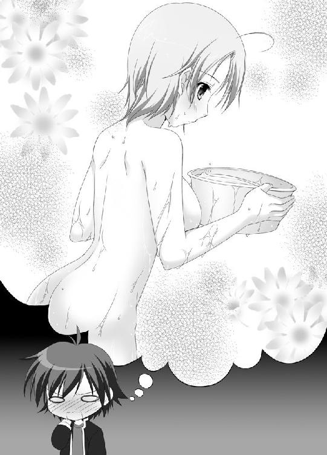
「神社？ むつみはずっと神社にいたのか？」
むつみは静かに頷いた。
「岡山県の山奥にある桃之木神社。そこでずっと修行をしてたんだよ」
むつみは、憎しみすら感じさせる口調で言った。
「ひーくんを下僕にしてもてあそんでる鬼、鬼怒川先輩と戦うために」
「!?」
まさかむつみが風香の正体を知っているとは思いもよらないから、日高は大いに驚く。
「むつみ......どうしてそれを？」
「この前、ひーくんの家を出た後で、鬼怒川先輩が鬼になってあたしに言ったの。ひーくんは自分の下僕だから近づくなって」
『見せるのは勇気がいったけど、思い切って良かったわ』
学校で聞いた風香の言葉が思い出される。あれは、鬼の姿を見せたってことだったのだ。
「あたし、すごく怖かった。腰が抜けちゃったぐらい。でもね、負けられないって思ったの。ひーくんを助けなくちゃって」
そこからのむつみの行動力は、驚くべきものだった。
「すぐに家に戻って、ネットで徹底的に調べた結果。岡山の山奥に、鬼を祓ってくれる神社があるって分かったの。あたしは新幹線で岡山に行って、桃之木神社を訪ねた。悪い鬼を祓ってもらえるよう頼んだんだ。だけど、神主さんはもう高齢で新幹線での長旅に耐えられないって言うから......」
「むつみが、修行をしてきたと？」
「そう。鬼と戦うための神通力を手に入れる修行をしたの」
むつみが力強く頷いた。
「大騒ぎになるといけないから、学校には風邪をこじらせたって電話を入れてね。一週間必死に修行して、神主さんから御墨付きをもらったからこうやって長野に戻ってきたの」
鬼という非現実な物と遭遇したことによるショック ＋ 幼馴染のピンチ。
これらの事柄が相乗で作用し、行動力に拍車をかけてしまったようだ。
「ひーくん、鬼怒川先輩はどこ!?」
「風香先輩なら、まだ風紀委員室にいると思うけど......」
日高の返事を聞き、むつみが立ち上がる。
「水ごりで身も心も清めたし、準備は万端よ。今から行って、もう二度とひーくんをいじめないようこらしめるから！」
歩き出すむつみの前に、日高は血相を変え立ちはだかった。
「ちょ、ちょっと待てよむつみ！ とりあえず落ち着けってー」
むつみを思いとどまらせようと日高は必死だった。
（鬼と戦うための神通力だなんて、そんなものがあるはずがない！ もしあったとしたって、たった一週間で身につくほどお手軽なものじゃない！ むつみがあんまりしつこくせがむもんだから、適当に修行させて、巫女服渡して体よく追い払われただけに決まってる！）
そんなむつみが、風香に戦いを挑んだりしたら。
そして、風香がそれを受けてしまったりしたら。
日高の頭に、無残に倒れるむつみの姿とそれを踏みつけ高笑いを響かせる風香の姿が浮かんだ。
巫女服は無残にも破かれ、豊満な胸が半分以上露出し、それはもう大変な光景に......。
（いかんいかんいかん）
いまだ先程のボインの呪縛が抜けきっていないのだと、日高は強く首を振る。
「とにかく、まずはお茶でも飲もう。それから、今後どうしたらいいか話しあおうじゃないか」
「ひくん」
日高を見つめるむつみ。その手が日高の頭に伸ばされた。前に廊下でそうしたように、日高の頭を胸にかき抱く。
「ぐおおおお！」
着物越しに、柔らかい感触が伝わる。生地が薄いせいか、前回をはるかに上回る破壊力だ。
「大丈夫、全部全部あたしに任せてくれればいいから。ひーくんはあたしが守る。鬼怒川先輩の好きになんかさせないよ！」
むつみは日高の頭を胸から離すと、覗き込むようにして言った。
「ここで、あたしの帰りを待っててね」
気が付くと、日高はソファーの上に横たわっていた。
ガバっと起き上がると、顔一杯に困惑を浮かべる。
「え？ え？ え？ え？」
待っているようむつみに言われたとこまでは覚えている。なのにそこから先の記憶がないのだ。
「そっか、ボインだ。あの破壊力に、俺はＫＯされたんだな」
少し違うような気がしたけれど、今は悩んでいる場合ではない。窓の外はまだ夕方だった。それほど時間はたっていないようだ。
むつみの姿はない。きっともう天狗山高校へ旅立ってしまったのだろう。
日高は立ち上がると、玄関へと向かった。靴に足を突っ込み外へと飛び出す。
「むつみが風香先輩に遭遇するよりも前に追いつかなくちゃ！ このままじゃ、このままじゃむつみが！」
切羽詰まった表情で、日高は叫ぶ。
「巫女服を破られて、あられもない姿になってしまう！ 胸元なんかもうすごいことになって......」
まだまだボインの呪縛は健在のようだった。
一方その頃、むつみは。
「だから、違います。これは、怪しいコスプレなんかじゃありません！」
お巡りさんの職務質問の餌食となっていた。
「もう一度言ってもらえるかな？ これから何をしに行くんだって？」
「天狗山高校に、鬼退治に行きます！」
むつみは堂々と答える。
「そうか、とりあえず署の方まで」
「嘘じゃないんですってば！」
新条むつみの鬼退治は、のっけからデッドロックに乗り上げそうだった。
その９
カリカリとボールペンを這わせる音が、誰もいない風紀委員室に響いた。
「ふう、こんなものかしらね」
ボールペンを置いた風香は、軽く息を吐いた。
風紀委員だからと言って、荷物検査と放課後の見回りだけをやっていればいいってものでもない。あくまで数ある委員会の中の一つに過ぎないから、ちゃんと生徒会に提出する報告書だって作成しなければならない。
その上、持ち物検査で没収した物の管理や、生徒から提出される反省文のチェック等も風紀委員の仕事だ。意外とやることは多いのだ。
もっとも、この反省文のチェックは風香の大好物だったけど。
「今回は大した作品がなかったわね。全部ボツ。書き直しね」
と、突然廊下から慌しい音がした。続いて、日高が転がり込むように風紀委員室に入ってくる。
「日高クン？ 何か忘れ物でもしたの？」
「ふ、風香先輩！ お願いします！ どうかそれぐらいで勘弁してやってください！ 巫女服を破ってさらし者にしたりしないでください！」
床を転げながら懇願するという器用な芸当を見せる日高だったけど、風紀委員室に風香の姿しかないのに気付く。
最高に青ざめた顔で日高は声を絞り出した。
「まさか、まさか風香先輩。むつみを食べちゃったんですか？」
「食べないわよ。冗談はそれぐらいにして」
呆れ顔で風香が嘆息する。
「それに、日高クンが何を言ってるかまるで分からないわ。頭の中にウジ虫でも湧いたかしら？」
（おかしいな、ここへ来るまでに会わなかったから、てっきりもう到着してると思ってたのに）
まさか、警察官の職務質問を受けているとは知らないから。小首を傾げる。
（いや、まだ到着していないならそれに越したことはない。今の内に、風香先輩に訳を話して、穏便に済ませてもらうように頼まないと）
「聞いてください風香先輩。むつみがここに向かってるんです！ 風香先輩と対決するために！」
「対決？」
風香が怪訝そうな顔になる。
「むつみに鬼の姿を見せたそうじゃないですか!? あの後、むつみは、どっかの神社に行って鬼と戦う神通力を手に入れるための修行をしてたんです。神主さんにお墨付きをもらって、戻って来たんです。そして今現在、ここに向かってるんです！ 巫女服で！」
巫女服で！ って最後の一言はいらないのだけど、そこは譲れないと日高は強く言う。
「むつみさん、どうやら分かってくれなかったみたいね」
残念そうに首を振る。
「それにしても、案外思い込みの激しい子なのね。そんな神通力がそこらの神社で修行したぐらいで手に入るはずがないじゃない。しかも、たったの一週間で」
「そうなんですけど、本人はすっかりその気なんです」
日高は必死で頼み込む。
「お願いします！ むつみを勘弁してやってください！ いたぶったり、巫女服を破ってあられもない姿にしたりするのはどうか！」
「そこまで繰り返されると、まるでむつみさんをそうして欲しいみたいに聞こえるわよ。キミのために、彼女の巫女服をビリビリに引き裂いてあげようかしら？ あれだけ規格外の胸ならば、さぞや見応えがあるでしょうね？」
必死に首を振る日高に、風香は吹き出した。
「冗談よ。心配しなくても、むつみさんをいたぶるつもりはないわ。巫女服を引き裂くつもりもね。そもそも、女の子にそんなことする趣味なんてないもの」
細めた目を日高に向ける。
「私がいたぶって楽しいのは、怖がりで、しかもおっちょこちょいで勘違いしやすくて、ひゃーとかわーとか悲鳴を上げて大騒ぎして、実はちょっぴりＨっていう男の子。そう、日高クン。キミだけなんだから」
手放しでは喜べない。むしろ泣きたい気分だ。それでも、むつみの安全は保障されたようだから、とりあえずホッとする。
だけど、風香はこんなことを付け足した。
「ただ、そこまで思いきった行動に出るようなら、放っておくわけにもいかないわ。後始末だけはしなくちゃいけないから、ここで彼女を待つことにするわね」
「後始末って、やっぱり食べるってことじゃ？」
「た～べ～な～い～わ～よ！」
うんざりとした顔で風香が言う。
「逆に、これを食べさせるの。ううん、飲ませるって方が適切ね」
風香がポケットから取り出したのは丸い形の金属の入れ物だ。のど飴の入れ物によく似ている。蓋を開けて日高に中身を見せた。小指の先程の真っ黒い物体がたくさん入っている。飴のように光沢を放っている。
「鬼に伝わる薬。鬼之事忘却丸よ。読んで字のごとく、これを飲ませれば相手は鬼の事を全部忘れてしまうの」
何とも都合のいい薬だなと、日高は呆れ半分、感心半分で聞く。
「鬼の存在は、基本的にはタブーなのよ。広く人間には知られないようにしているわ」
「でも、鬼の女の子は人間を脅して下僕にするのが普通なんですよね。正体バラしてるじゃないですか？」
「それは別にいいのよ。だって、ちゃんと支配できる相手なんだから」
淡々とした口調に、日高は背筋をゾクゾクっとさせる。
「下僕に飽きた時。または、うっかり正体を目撃されてしまった時。そんな時こそこの薬の出番。さっさと飲ませて、全部忘れてもらうってわけなのよ」
「つまり、これをむつみに飲ませると？」
「そういうこと」
風香は日高に目くばせした。
「噂をすれば何とやら......よ」
むつみだった。少々お疲れな様子で、風紀委員室に入ってくる。
日高がいることに気づき驚いた顔を見せる。
「ひーくん、どうしてここに？ ちゃんと気落としを使ったのに」
「気落とし？」
「意識を失わせる簡単な技よ。神主さんから教わったの。あたしもまだまだ修行が足りないみたい」
（えっ、むつみって、そんなことできるようになったのか!? まるっきり意味のない修行じゃないってこと!?）
「とにかく、ひーくんは下がってて！」
むつみは風香を睨んだ。
「鬼怒川風香！ いいえ、ひーくんを苦しめる悪しき鬼！ この新条むつみが相手よ！」
「むつみさん。悪いけど、コスプレごっこに付き合ってられないの」
風香は、缶の中から鬼之事忘却丸を一粒摘んだ。
「さっさとこれを飲んで、忘れてもらうわよ」
ゆっくりと歩み寄る風香に、むつみは巫女服のタモトから奇妙な物を取り出す。棒の先に鈴のようなものがたくさん取り付けられた道具だ。
日高は知らなかったが、これは『神楽鈴』という神具。神社の奉納祭などで、巫女役の少女が手に持ち鳴らしている姿が有名だ。
「鬼よ。退け！」
むつみが勢いよく神楽鈴を振り、鈴の音を響かせる。次の瞬間、到底ありえないことが起こった。風香の体が軽々と吹っ飛ばされ、風紀委員室の壁に叩きつけられたのだ。
風香が手に持っていた丸い缶が床に落ち、丸薬が散乱する。
「えっ？」
唖然とする日高。驚いたのは風香も同じだった。
「ウソでしょ!? これは紛れもない神通力だわ。どうしてむつみさんが......」
風香が日高に質問を飛ばす。
「日高クン！ むつみさんは一体どこの神社で修行を？」
「えっと、確か岡山にあるって言う、桃なんとか神社」
「桃之木神社！」
風香が正解を口にする。
「知ってるんですか？」
「鬼退治においては歴史ある神社よ。今でこそ派手に鬼退治はしていないけれど、技は受け継がれているはず。そこの神主にたった一週間の修行でお墨付きをもらえるなんて」
ゴクリと喉を鳴らす。
「かの有名な大鬼、酒呑童子を倒した源頼光に匹敵する才能の持ち主だわ」
おまけに、風香は付け加えた。
「規格外なのは、胸だけじゃなかったってことなのね」
（ひょっとしてこれは、予想外の嬉しい展開になるのでは......）
日高の胸に希望の光が灯る。
（風香先輩が負けを認めて、俺を下僕から解放してくれるのでは？）
もしそうなったら、これほど嬉しいことはない。
これからはむつみなんて呼ばない。むつみ様と呼んでずっとあがめたてまつってもいいとさえ思う。
だけど、さすがにそううまくはいかない。日高が思っていたよりも、鬼ってのは負けず嫌いの性格だった。
「面白いわ！ 久しぶりに全力が出せそうね！」
風香の瞳が金色に輝く。髪の毛は真っ赤に染まり、頭からは二本の角。鋭い牙と爪が伸びればもう鬼の完成だ。
さらに風香は風紀委員室の片隅にあるロッカーを蹴飛ばす。ガッチリと南京錠で施錠され、開かずのロッカーとさえ呼ばれているものだ。
破壊されパックリと口を開けたロッカーの中から風香が引っ張り出したのは、身の丈はあるという巨大な鉄の金棒だ。
思わず日高はつっこまずにはいられない。
「ふ、風紀委員長が何て物持ち込んでるんですか!?」
「まさか、これを学校で振り回せる日が来るなんてね」
うずうずとした顔で、風香は金棒を肩に担ぎ上げる。
「校庭で勝負をつけましょ、むつみさん」
風紀委員室の窓ガラスを突き破り、外へと飛び出していく風香。窓ガラスの破壊に、上履きで外へ出る。ダブルの校則違反だ。
「望むところよ！」
神通力のなせる技なのか、むつみもふわりとジャンプし風香を追いかけていく。
二人に続こうとする日高だけど、そこが二階だってことに気付く。
「だっ！ 無理っ！」
あっさりと断念すると、日高は普通の扉から風紀委員室を出た。
その10
暗い校庭に、轟音がとどろく。
日高の到着を待つはずもなく、鬼 VS 巫女 の戦いは始まっていた。
金棒を振り回し突進する風香。だけどむつみは、神楽鈴を一振りさせるだけで重い打撃を弾いてしまう。まるでバリアでも張ったかのようだ。
さらに、むつみは神楽鈴を鳴らす。鈴の音と共に見えない衝撃波が風香に襲いかかる。風香は人間離れした動きでその一撃を避けた。
力はほぼ互角。攻防に次ぐ攻防だった。
そんな戦いの中、風香が口を開く。
「むつみさん！ 私の鬼の姿にも屈せず、これだけの力を手にして戻ってくるなんて、正直、感心するわ。だけど、日高クンは手放さない！」
確固たる思いで風香が言う。
「どうしてひーくんを選んだの!? ひーくんは人一倍怖がりな男の子なんだよ！ それなのにどうして!?」
「だからこそよ！」
風香が叫んだ。
「最初に私が鬼の姿を見せた時、日高クンは悲鳴を上げて気絶したわ。とんでもない怖がりの男の子よ。だけど、そんな男の子が来てくれたの。私を助けるために、怖くて怖くてたまらない鬼を受け入れる決意をしてくれたの。まあ、それは勘違いだったんだけどね」
風香は表情を緩ませる。
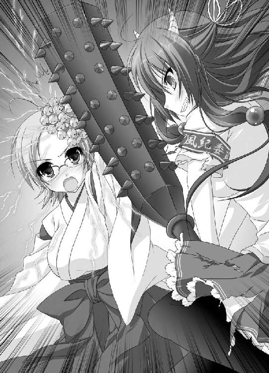
「それでも、私は嬉しかった。だから決めたの。この人間は私だけのモノにするって。誰にも、渡さないんだって！ これは譲れないわ！」
「あああ、あたしだって!!!」
むつみが声を張り上げる。
「ひーくんとは小さい頃からずっと一緒で、ずっとあたしが面倒を見てあげてきたの。だけど自分でも分かってる。助けられてたのはあたしの方だったんだって。あたしが苦しかったり悲しかったりした時も、ひーくんはいつも笑顔で励ましてくれた。どんな時でも、ひーくんはあたしの味方でいてくれた」
神楽鈴を振り上げる。
「ひーくんが、鬼怒川先輩に取られそうになって、あたしは自分の本当の気持ちが分かった。あたしは、ひーくんのことが大好き！ ひーくんは、あたしのだよ！」
むつみが本音と共に振り下ろした神楽鈴は、これまでにない力を生み出した。校庭の土砂を巻き込み竜巻の渦のようになったそれは、風香に襲いかかる。
神通力の塊とでも呼べるだろうか？
「負けないわよ！」
風香が金棒をバットのように構え、塊目がけて振った。強力な神通力は風香の金棒を受け止めるが、力負けして明後日の方向に弾かれる。
そんな明後日の方向に、走ってきていたのが日高だった。
運が悪いとしか言えなかった。
思いの他、戦いがヒートアップしそうな予感がし、どうにかして止められないかとやって来たのだ。
まさか、いきなり神通力の塊が飛んでこようなんて思ってもみなかった。
命の危険を感じた瞬間、人間の神経は研ぎ澄まされ世界はスローモーションになるって話は聞いていたけれどそれは本当だった。
ゆっくりと、巨大な塊が迫ってくるのが見える。
もちろん、足なんて硬直して動かない。
慌ててこちらに向かって走り出すむつみが見えたけど、それもやっぱりスローモーションだ。間に合うとは思えなかった。
（ああ、俺、ここで死ぬんだな）
妙に穏やかな気持ちでそう思う。
（最期の最期だけ、とてつもなく波乱万丈な人生だったな）
瞳を閉じた瞬間、全身に衝撃が走る。
願わくば、むつみと風香がこれで戦いを止めてくれることを祈りつつ、日高の意識はプッツリと途切れた。
その11
「うむ」
そんな声を出しながら、日高は天狗山の坂を上っていた。
腑に落ちないってのが、これほどピッタリくる表情はなかなかお目にかからないだろう。
「分からん。あれから一体何がどーなったんだろうか？」
日高は考え込みながら、昨晩の出来事を思い出す。
二人を追いかけて校庭へと出たことは覚えている。
そこで、巨大な渦のようなものが自分に向かって飛んできたことも。
世界がスローモーションになったことも覚えている。死を覚悟したことも覚えている。
なのに......。
「どうして俺、生きてるんだ？」
しかも、気がついたら自宅のソファーの上だったのだ。時間もすでに朝だったし。
よく分からないままに、シャワーを浴びこうやって登校したのだった。
（もしかして、昨日のことは夢だったんじゃないか？）
そんな都合のいいことを期待する。
（むつみも行方不明になってないし、当然神通力なんかも手にしていない。って言うか、もっと遡って風香先輩の下僕になったってことも全部夢）
と、日高の肩が後ろからポンと叩かれる。
「おはよ、ひーくん」
むつみだった。いつもと何ら変わらない笑顔。もちろん巫女服なんかじゃなくセーラー服。
とても、昨晩鬼と死闘を繰り広げた少女の姿じゃない。
（やっぱり夢だったのかも？）
期待が本当になったと喜びかける日高に、むつみは思い出したように言った。
「あ、そうそう。ひーくんには悪いんだけど、もうちょっとだけ鬼怒川先輩の下僕でいてね」
夢オチではすまなかった。むつみは全部知っているのだ。
「むつみ、昨晩は一体何があったんだ？ 俺はどうして生きてるんだ？」
「キレイに気絶してたから覚えてないとは思ってたけど、やっぱりね」
やれやれと首を振る。
「力の塊が、もう少しでひーくんに直撃するって時にね。鬼怒川先輩が金棒を投げ捨てて、すごい速さでひーくんに突進したんだ。そして、ひーくんの体をかっさらって直撃を回避した」
どうやら、日高が感じた衝撃はその時のもののようだ。
「放った本人だから分かるけど、あの時の力ってかなりのものだったの。鬼怒川先輩だって、直撃してたら大変だったはず。それなのに、鬼怒川先輩は少しも躊躇わなかった。あたし、ちょっと参っちゃったな」
ふうと息を吐く。
「それに、鬼怒川先輩のおかげで、あたしは自分の本当の気持ちに気付けたの。少しだけ、感謝もしてるんだ」
「本当の気持ち？」
「ううん、何でもない。何でも」
むつみがプルプルと首を横に振る。
「そんなこんなで、鬼怒川先輩とは休戦協定を結ぶことにしたの。だけど、あんまりひどいことされるようなら遠慮なく言うんだよ。その時は、あたしが神通力でこらしめてあげるから」
むつみが微笑む。
「鬼怒川先輩の言ってる下僕は、普通の下僕とは少し違う意味みたいだし、その点では安心してるんだ。ひーくんもそんなにひどいことはされないんじゃないかって。あ、安心なんかしちゃ駄目だね。ライバルなんだから」
むつみはいつものようにスチャって右手を上げる。
「じゃあ......またね。一週間も学校休んでたから、新聞部が心配なんだ」
むつみは、駆け足で坂を上っていく。
「風香先輩の言ってる下僕は普通の下僕とは少し違う意味？ 安心なんかしちゃ駄目？ ライバル？」
さっぱり意味が分からない。
「うむ、謎だ」
首を捻りながら天狗の試練坂を上っていく日高は、校門前の人だかりに気付いた。
そこで思い出した。今日が持ち物検査の日だってことに。
大遅刻だった。
「いけね！」
右腕を見る。腕章はごく普通についている。
（このまま何事もないようにすっと紛れてしまえば分からないかもしれないぞ）
そんな姑息なことを考え実行する日高。
人込みに紛れて進み、途中でクルリと方向転換する。
「あ、それじゃ君、荷物を見せて」
この企みは存外早く見破られた。
「ひだかクン。一体何をしてるのかしら？」
腕を組み、にこやかに怒っていたのは風香だった。
「あ、風香先輩！」
日高は体を硬直させる。
「明日の朝は荷物検査だって、委員会でちゃんと説明したわよね。寝坊して遅刻ってならまだしも、丸っきり忘れてるなんて」
もちろんこれには日高にだって言い分はある。
昨日はそれどころじゃなかったんだ！ って言い分だ。
だけど、同じくそれどころじゃなかった風香がちゃんと来ているのだから文句も言えない。
「す、すみません」
謝る日高に、風香は軽く息を吐く。
「まあ、いいわ。昨晩はキミも大変だったしね」
「あ、あの、むつみから聞きました。助けてくれてありがとうございました」
日高、昨晩のお礼を口にした。
「それと、むつみとも何か仲直りしてくれたみたいで。嬉しいです」
にこやかな顔の日高の耳を、風香がいきなり掴んだ。そのままぎゅいいいいいいいいんって感じに引っ張り、少し離れた木陰まで連れて行く。
「いたたたたた、痛いですって、風香先輩！」
「あのね、私が好き好んでむつみさんと休戦協定を結んだと思ってるの？」
「違うんですか？」
「違うわよ。今でも私は、彼女に鬼之事忘却丸を飲ませて全部忘れて欲しいと思ってるわ。彼女が気付いた本当の気持ちもまとめてね」
ため息をつく。
「だけど、あれほどの神通力を持ったむつみさんには、きかないのよ。薬が」
さらにため息をつく。
「今回だけは、私のミスだって反省してるわ。鬼の姿をあそこで見せたりしなかったら、ここまでの事態にはならなかったのに。あんな、強敵を誕生させてしまうなんて」
再び風香は日高の耳を引っ張ると、耳の穴に向かって言葉を叩き込む。
「しつこいようだけど、キミは私の下僕。私のモノだから。私は絶対に手放さないから！ 絶対に誰にも渡さないから！ それを忘れないように！」
念を押すように、再度繰り返した。
「キミは私だけのモノだから！ いいわね！ 日高クン！」
おわり
第三話 渡る世間にはわりと鬼がいる
その１
アタシ、尾道京子。職業は天下無敵の女子高生。天狗山高校一年Ｄ組、出席番号は七番ね。
見た目は、自分ではけっこうイケてる方だと思うの。少し胸は小さいけれど、それでも大親友のまゆっちよりは大きいわ。それに、きっとこれからどんどん成長するはずよ（さすがに、新聞部の新条先輩レベルになるのは難しいだろうけど）。
成績は中の下ぐらいかな？ だけど運動神経は抜群よ。中学の時は陸上部でけっこう活躍したんだから。
この天狗山高校に入学した時も、アタシの活躍を知っていろいろな運動部から熱心なお誘いをもらったの。だけどアタシは全部断った。だって、決めてたんだもん。
風紀委員会に入るって。
別に学校の風紀を正そうなんて真面目なことは思ってないわ。正直、どうだっていいとさえ思うの。だけど、アタシには風紀委員会以外には考えられなかった。
だって、だって、だってだってだって♪
風紀委員会には、風香お姉様がいるんだもの
昨年の秋、中学三年のアタシは天狗山高校の文化祭にやって来た。まだその時はこの高校に入学しようなんて思ってなかったのよ。だって、ここってちょっと家から遠いし、厄介な坂があるし。
だけど、アタシはそこで運命的な出会いをしてしまった。
文化祭に来てたアタシを、どこぞの男子高校生がしつこくナンパしてきたの。困ってた時に颯爽と現れたのが、天狗山高校風紀委員長、鬼怒川風香。そう、風香お姉様だったの。
強面の男子高校生相手にも、風香お姉様は一歩も引かなかったわ。それどころか、逆上して掴みかかってくる男子高校生を逆に投げ飛ばしたのよ。
周りからは拍手喝采で、そしてアタシのハートは風香お姉様に奪われてしまったってわけ。だってすっごく恰好良かったのよ。どうしてあの時、携帯で動画撮影しなかったのかいまだに悔やんでるぐらいだわ。
アタシは即座に志望校を変更。ちょっと合格ラインに届いてなかったから、必死になって勉強したわ。その甲斐あって見事に合格。
風香お姉様と感動の再会を果たしたアタシは、そのまま風紀委員会に入った。
同じクラスで仲良くなったまゆっちも誘って、アタシの風紀委員ライフは最高に幸せだったの。
そう、あの男が来るまでは！
武蔵野日高。それがあの男の名前。
二週間ぐらい前、いきなり風紀委員会に入ってきたの。それだけならまあいいとしても、風香お姉様といっつも一緒にいるのが我慢ならない！
風香お姉様がアタシに話しかけてくれる回数が、確実に二十パーセントは減ったのよ！ 信じられないわ！
アタシなりに、あの男のことを調べたわ。
クラスは二年Ｃ組。誕生日は三月二十五日で現在十六歳（あと少し遅く生まれてたらアタシと同じ一年生だったのよ！）。成績は下の中（微妙なとこね）。運動はすこぶる苦手。サッカーボールを蹴ろうとして空振りして後ろ向きに倒れ後頭部を殴打。そのまま保健室に運ばれたことが去年あったそうよ（大笑いだわ）。さっきチラっと登場した新聞部の新条先輩と幼馴染でわりと仲良くしてるとか（もうこの時点で、おっぱいフェチが決定したようなものだわ。エロエロよ！）。それから、車屋先輩って言う変態趣味な友人がいるとか（きっとあの男も変態仲間よ）。
そんな、大していいとこなしな男が、風香お姉様にまとわりついてるのよ！ こんなことが許される？ 許されるはずないわよね!?
風紀委員の仕事にだってまるでやる気が感じられないし、ハッキリ言って不要、ううん、いられると迷惑な人間なのよ！
だからアタシは決めたわ。武蔵野日高を、この風紀委員会から追放するって！
もう、決めたんだから！
その２
本日最後の授業が終了した。
欠伸をしながら、日高は鞄片手に教室を出る。向かう先は二階にある風紀委員室だ。
風紀委員なんて、どこの学校でも大して仕事をしていないのが実状だ。生徒会が兼任している場合だって多いだろう。
だけど、天狗山高校風紀委員会は違っていた。
わりと頻繁に行われる朝の持ち物検査に始まり、風紀向上のためのポスター作製、校則違反者の摘発、風紀指導、放課後の見回りなど仕事は多い。
放課後の見回りは委員会内部でローテーションを組み行っているが、日高に関しては例外だった。風香によって毎日の見回りを義務付けられているのだ。
不運にも風香の下僕に認定され、強制的に風紀委員会に入れられてから早二週間。
朝は早く夜も遅い生活には少々疲れている。
「せめて、俺もみんなと同じローテーションに組み込んでくれないかな。悪い意味で特別ってのは勘弁して欲しいよ」
切実な願いを口にするも、それがかなわないことは分かっている。
だって、日高は風香の『トクベツ』な存在なのだから。
「まあ、愚痴ってたって何も変わらないか。とにかく風紀委員室に急ごう」
足早に風紀委員室へと向かう。授業が終わり次第ただちに来るようにとメールを受け取っているのだ。
二階の風紀委員室へと到着し、ガラガラと引き戸を開ける。
「失礼します」
次の瞬間、目の前にそいつは現れた。
腐敗した肌。ギョロリと飛び出した目玉。そして、頭をかち割った状態で止まっている手斧。
いわゆる、ゾンビだ。
「うわああああああああ！」
悲鳴を上げ尻餅をつく日高に、ゾンビが笑う。
「大成功だわ」
よく見ると、それはバラエティーショップで売っているようなゴムのマスクだった。体はスラリと背の高い女子高生のもの。となると誰なのかは容易に想像がつく。
ゾンビマスクが外された。もちろんその下から現れたのは風香の顔だ。
「日高クンの驚きっぷり、最高だったわ。こっちも脅かしがいがあるってものよね」
「そのために、そのためだけに俺を呼びつけたんですか？」
日高の質問に、風香は当たり前だと頷いて見せる。
立ち上がった日高は、呆れ口調で呟く。
「俺が言うことじゃないですけど、風香先輩は風紀委員長なんですよ。そんなオモチャのお面なんか持ってきていいんですか？」
「別にいいのよ。だって、この学校の風紀なんて正直どうだっていいんだから」
風紀委員長としてあるまじき言葉を、風香はあっさりと口にした。
「漫画とかゲームとかを持ってきた男の子がそれを見つけられて焦ったり慌てたり泣きそうになったりする顔。それが見たくて風紀委員をやってたらいつの間にか委員長になってたってだけなんだから。今は全部日高クンが見せてくれるし、何だったら風紀委員なんて辞めたって」
「いいえ、辞めないでください！」
日高は慌てて強く言う。
「風香先輩がいなくなったら、学校の風紀が乱れてしまいますから！」
そう主張するのも、
（風香先輩のＳっ気の矛先が全部俺に来たら大変なことになるぞ。多少は他で紛らわせてもらわなきゃ）
ってのが本心だ。
扉を閉めると、日高は風紀委員室の中央へとやって来る。鞄を置きパイプ椅子に腰を下ろした。放課後の見回りまでにはまだたっぷりと時間がある。
「そうそう、日高クン。今度映画に行かない？」
風香は、踊るような足取りで自分の席まで戻ると、鞄を開けゾンビマスクをしまう。代わりに取り出したのは映画のチラシだ。
「『血まみれジェットコースター』『夜動く棺桶』『食人植物マッシー』どれがいい？」
日高の目の前にチラシが並べられる。チラシの写真だけで日高は顔を背けたくなる。
「私はもう、一度観てきたから面白さは保証済みよ」
「だったらもういいじゃないですか。俺ともう一度観なくたって」
日高の言葉に、分かってないなあと風香は首を振る。
「あのね、私は映画が観たくて日高クンと一緒に映画館に行くんじゃないの。悲鳴を上げたり、怯えたりする日高クンが見たいからなのよ」
悪びれることなく、そう言い放つ。
日高としては実に面白くない気分だ。皮肉っぽく、
『俺を玩具にして面白いんですか!?』
って言ってやりたかった。
だけど、そうしたところで返ってくる返事は、
『ええ、面白いわ。最高ね』
に決まっている。
この二週間で、 風香の性格も大分理解し始めていた。
「前向きに検討します！」
そう叫ぶと、チラシを掴み鞄の中にしまい込む。それから、思いついたように尋ねた。
「風香先輩。参考までに聞きたいんですけど、他の鬼も、そんな感じなんですか？ 人を玩具にして喜ぶって言うか何て言うか」
「そうね、程度や嗜好の差はあるけど、みんなこんな感じじゃないかしら？ とくに女の子の鬼はね」
思い出したように、風香は続ける。
「今年異動になっちゃったけど、去年まで学校にいた数学の先生覚えてる？ 菱沼理子先生」
覚えていた。直接は習っていなかったが、廊下で何度かすれ違ったことがある。
鋭い三角眼鏡が特徴的な若い女教師。背も高くプロポーションも抜群。だけど、悪魔のように厳しいことで知られていた。
これでもかと出される宿題を前に、数えきれないぐらいの生徒が泣かされたと聞く。
「ええ、覚えてます。菱沼先生がどうしたんですか？」
「あの人、同類よ。私と同じ鬼だわ」
意外な真実に、日高は素直に驚く。
「ええっ!?」
「直接角を見たわけじゃないけれど、すぐに分かったわ。あの、理不尽な宿題攻撃は、鬼の本性を満足させるためのものよ。黒板に書かれた問題を前にどうすることもできずうろたえる男子を、うっとりと眺めてたもの」
恐ろしい話だった。
「風香先輩だけじゃなく、鬼がそんな身近にいたなんて」
ブルルって背筋を震わせる日高に、呆れたように風香が告げる。
「あのね、人間達が知らないだけで世間にはわりと鬼が存在してるのよ。人間に紛れて暮らしてるの。とくに、この辺りには多いわ。もともと、長野県の山には鬼の集落がたくさんあったらしいから。いわば、ここは日本一の鬼の名産地ね」
どこかで聞いた台詞だった。
「日高クンの小学校とか中学校にもいたんじゃないかしら？ 女子のリーダー格で、なおかつ男子をいじめるのが大好きっていう女の子。多分、その子、鬼よ」
（それじゃ、小学校の時、俺の上履きを隠したあの娘も......棒の先に俺の苦手なイモ虫を乗せて追いかけてきたあの娘も、中学校の時、準備体操している俺をプールに突き落としたあの娘も、みんなみんな鬼だったってことなのか!?）
考えれば考えるほど、ますます恐ろしくなってくる。
「そんなに心配することなんかないのよ」
青ざめる日高に、風香が優しく声をかけた。
「日高クンは、今や私のモノなんだから。他の鬼の玩具になんかさせないわ。だから安心してね」
（安心できるかああああああ！）
って、心の中で日高がちゃぶ台をひっくり返した時だった。
勢いよく、風紀委員室の扉が開かれた。
「尾道京子！ 入ります！」
そんな、力強い声が風紀委員室に響いた。
その３
風紀委員室に入ってきたのは二人の女子生徒だった。
先を歩くのは勝ち気な顔立ちが特徴的な少女。全身から気の強さがたちこめている。
その後ろにいるのは、ふわふわとした髪の毛の小柄な少女だ。おどおどとした様子で前の少女の後ろについている。
顔と名前を覚えるのが苦手な日高だけど、二週間もいれば大分記憶に染み込んでいる。
（確かこの二人は一年生だぞ。いつも二人一緒に行動してる仲良しコンビだったな。尾道と......春木だっけ？）
日高の存在に気付き、先頭の少女、尾道京子が顔をしかめる。
「いたのね。性懲りもなく」
「ねえ、京子ちゃん。やっぱり止めようよ。良くないよ、こういうのって」
後ろにいた少女、春木真夕が、泣きそうな顔で京子の制服を引っ張る。
だけど京子は動じることなく、風香をしっかりと見つめ言い放った。
「風香お姉様！ 今日はアタシ達、お願いがあって来ました！」
「お願い？」
「はい、そこにいる武蔵野先輩をクビにして欲しいんです！」
思いがけず矛先が自分に向いたものだから、日高は体をビクつかせた。
「日高クンをクビにね。一体どうしてかしら？」
「朝の持ち物検査の時もいつも眠そうにしているし、下校時の見回りだっていい加減です。しかも、Ｈな本を持ってきた男子を注意するどころか、一緒になって見てたりしたんです！」
「おっ、お前どうしてそれを!?」
口をパクパクさせる日高を、風香が眺める。
「へ、Ｈな本をね」
また一つ日高をからかうネタができたと喜んでいるようだ。
「アタシとまゆっちは、一年生の代表としてお願いにきました！ そうよね、まゆっち」
京子が肩越しに振り向く。
「えっと、わたしは、武蔵野センパイも一生懸命やってるんじゃないかって」
「まゆっち！」
京子に強く言われて、真夕は体を小さくした。どうやら京子には逆らえない様子だ。
「とにかく、武蔵野先輩は風紀委員に相応しくありません！ ただちにクビにしてもらえるよう要求します！」
ビシリとそう言い放つ。
「なるほどね、京子ちゃんの言い分は分かったわ。それじゃ日高クン、何か反論があるかしら？」
日高はやれやれと首を振ると、京子の前へと立った。
「あのな、尾道。誤解がないように言っとくが、あれはどんな本かを確認するために見てただけだからな。事実、すぐに注意したんだし」
そこで、日高はハッとする。
（ひょっとして、この流れを利用したら俺は風紀委員から逃げられるかも......）
これまでとはうって変わった明るい口調で、日高はこう言った。
「あっ、でも、俺がいることでせっかくの風紀委員の輪が乱れるっていうなら問題だからな。ひじょに残念だけど、ここは風紀委員を辞退し」
「そこまでよ、日高クン」
調子に乗る日高を風香がたしなめる。
「二人の言い分はよっく分かったわ。京子ちゃん達一年生は、日高クンを風紀委員会から追放したい。日高クンは、辞めたくない。そういうことね」
「いや、俺は別に辞めても」
ギロリ！
って感じに風香に睨まれたもんだから、日高はしおらしく口を閉じる。
「もちろん、風紀委員長である私がどうするか決めてしまってもいいのだろうけど、それじゃお互いに納得しないでしょ。ここは一つ、風紀委員伝統のあれで決めようと思うの」
軽く息を吸い込むと、風香は大々的に発表した。
「校則違反取り締まり強化週間デスマッチ！」
「校則違反......」
険しい表情で京子が呟く。
「取り締まり強化週間......」
怯えて泣きそうな顔で真夕が囁く。
「デスマッチ......ね」
正直、胡散臭そうだという顔で日高がぼやいた。
「その名の通り、一週間でどれだけの校則違反を取り締まれたかによって勝敗を決める勝負なのよ。古くから天狗山高校の風紀委員会では何か揉め事が起こる度にこれで決着をつけてきたらしいわ」
「つまり、一週間の間、アタシと武蔵野先輩それぞれで校則違反を取り締まればいいんですね。それで、数が多い方が勝ちなんですね」
「少し違うわ。勝敗を決めるのは単純な校則違反の数ではないの。校則違反ごとにポイントが決まっていて、そのポイント数で勝敗が決まるわ。より重い校則違反を取り締まった方が、より高ポイントを手に入れられるの」
「なるほど、そういうシステムなんですね。尾道京子、俄然ファイトが湧いてきました！」
京子が拳を握りしめる。
「風香お姉様！ いつからスタートですか？」
「そうね、それじゃ来週の月曜から始めましょうか？」
「了解です！」
力強く頷いてから、京子は日高にずずいと詰め寄る。
「アタシ、絶対に負けませんから！ この勝負に勝って、武蔵野先輩を風紀委員会から追放して見せますから！ 覚悟しといてくださいね！」
ねっちりと宣戦布告をすると、クルリと背中を向け歩き出す。
「まゆっち！ 教室に戻るわ！ 作戦会議よ!?」
「すみません、鬼怒川センパイ。すみません武蔵野センパイ。すみませんすみません。本当にすみません」
こちらが気の毒になるぐらい何度も謝り、真夕も京子を追いかける。
嵐が去った後のように、風紀委員室が静かになった。
「風香先輩。聞かなくても分かってますけど、一応聞いときますね」
そんな前置きをすると、ため息交じりに尋ねる。
「校則違反取り締まり強化週間デスマッチって、伝統なんかじゃないですよね」
「そうよ。私がさっき適当に考えたの。思いつきにしては悪くないネーミングでしょ？」
悪びれることなく風香が答える。
「どうしてまたそんな大嘘を」
「決まってるじゃない。面白くするためよ」
風香がにんまりと微笑んだ。
「京子ちゃんは、頭もいいし機転もきくし何より度胸があるわ。かなりの数を取り締まることでしょうね」
「そうですね～」
気のない返事を日高はする。もともと真面目に勝負しようなんて思っていないのだ。むしろ負けてクビになる方が日高的にはありがたいぐらいなのだ。
そんな日高の心を見透かしてか、風香がとんでもないことを言い出す。
「言っておくけど、日高クン、もし負けて風紀委員を辞めるようなことになったら許さないわよ。そうね、もしその時は......」
少しだけ考え込んでから、風香は大きく頷いた。
「私の家で徹夜でホラー映画の鑑賞会でも開こうかしら？」
日高としては耐えられない話だった。
「ちょ、勘弁してくださよ！」
必死に懇願する日高。だけど、
「大丈夫よ。日高クンが京子ちゃんに勝てばいいだけなんだから」
風香はまるで取り合ってくれない。むしろ実に楽しそうだ。
「風香先輩は俺をいじめて楽しいんですか？」
無意味と分かっていても、つい恨みがましくそう言ってしまう。
てっきり、『そうよ』って返事が返ってくると思ったけど、違っていた。風香は急に真面目な顔になると、日高に優しく語りかける。
「そうじゃないの。誤解しないでね。私は決して日高クンのことをいじめたいわけじゃないの」
そのままの表情で、風香は続けた。
「ただね、一生懸命にあがく日高クンの姿を眺めてニヤニヤしたいだけ。それだけなのよ」
もちろん、日高は思わずにはいられない。
（鬼いいいいいいいい!!!）
って。
その４
場所は人気のない渡り廊下の一角。
日高の目の前には、後輩の男子生徒がいた。今にも泣きそうな表情でこちらを見ている。
「えっとだな、そういったものの持ち込みは禁止されてるんだ。うっとうしいとは思うだろうけど、校則がわりと細かい高校に入学したと思って諦めてくれ」
やんわりと説明する。
「普段なら注意だけして終わりにするんだけど、今回はこっちもちょっと困った状況なんだ。悪いけど、没収させてもらうよ」
右手を突き出すが、男子生徒は大切な物を守るかのように紙袋をかき抱く。
しばし右手を突き出した状態のままでいてから、日高はため息と共に脱力する。
「しょーがない。行っていいよ。今度見つけたら没収するからな」
「あ、ありがとうございます！」
走り去っていく男子生徒。だけどその前に立ちはだかるのは、京子だった。
ピピ!!!
手にしていたホイッスルを鳴り響かせると、京子は男子生徒にビシリと指を突きつける。
「その紙袋の中身、見せてもらうわよ！」
男子生徒に抵抗する暇も与えず、ひったくった紙袋の中に手を突っ込む。取り出されたのはグラビアアイドルの水着の写真集だ。
鬼の首でも取ったかのように、京子は高らかに言った。
「天狗山高校校則、学校生活の指針その三、生徒心得の六項、漫画、雑誌、携帯ゲーム機といった授業に不必要な私物の持ち込みはしない。特に成人向け雑誌は厳禁とする。これは、風紀委員が没収させてもらうわ」
「ちょ、ちょっと待てよ！ 尾道」
たまらず日高が口を挟んだ。
「それはグラビアの写真集だ。成人向けなんて大層なもんじゃない。しかも、コンビニで売ってるような安物じゃなく、ちゃんとした本屋で二、三千円はする代物だ。没収は勘弁してやっても」
「甘い、甘いわ。武蔵野日高！」
京子はピシャリと切り捨てた。もはや名前を呼ぶ際、先輩もつけてくれなくなっている。
「そんなことをいちいち気にしてたら、風紀委員なんかやってられないわ」
フフンと京子は鼻で笑う。
「これじゃあ、もう勝負は見えたわね。実際、すでにもうかなりのポイント差がついているし」
事実だったから、日高は反論できず口をうぐうぐと動かした。
校則違反取り締まり強化週間デスマッチがスタートしてから、早三日が経過している。
京子の、俄然ファイトが湧いてきた宣言は伊達じゃなかった。猛烈な勢いで京子は校則違反者を取り締まっていった。
ゲーム機や漫画を持ち込むのダメ！
下校時間になってもおしゃべりして校舎内に残るのダメ！
届け出なしの原付バイク通学ダメ！
届け出なしのアルバイトもダメダメ！
その校則違反を嗅ぎつける能力は、もはや神がかっていた。
残り二日という時点においての両者のポイントは、かなりの差が開いてしまっている。
「その腕章をつけてられるのもあと二日よ。それまでせいぜい無駄にあがきなさいよね！」
高飛車に言い放つと、京子は男子生徒を連れて去っていく。クラスや名前を聞くだけでなく、仲間内で同じような本を持っている人はいないかもきっちり問い詰めるつもりなのだろう。
「何て容赦ないんだ......」
（ひょっとして、あいつも鬼なんじゃないか？）
世間にはわりと鬼がいるという風香の話を思い出し、本気で疑いすらしてしまう。
そんな日高の前に、おずおずと姿を見せる女子生徒がいた。真夕だった。
「あの、武蔵野センパイ」
しばし躊躇いを見せてから、真夕がペコリと頭を下げる。
「すみません！ 京子ちゃんがひどいことばかり言って」
「いや、いいんだって。真夕ちゃんが謝ることないよ」
暴走機関車のような京子に振り回されながらも、健気にがんばっている真夕に日高は妙な親近感を覚えていた。
少々立場は違うも、誰かさんに苦労させられているという点では日高だって同じなのだから（誰かさん ＝ 風香）。
「そうだ、真夕ちゃん。ちょっと聞きたいことがあったんだけどさ」
バツの悪そうな顔を日高は見せた。
「俺って、そんなに一年生の風紀委員から嫌われてるのか？ それこそ、クビにして欲しいって思われるぐらいに」
「それは......違うんです」
申しわけなさそうに真夕が首を横に振る。
「一年生全員が、武蔵野センパイに風紀委員会を出ていって欲しいなんて思ってません。そう思ってるのは、京子ちゃんだけなんです」
「尾道だけ？」
確かに、京子から向けられるムンムンとした敵意には気付いてた。
「しかし、どうしてまたそんなに嫌われたんだ？ 俺、何かしたかな？」
「武蔵野センパイは何もしてません。ただ......」
少しだけ迷ってから、真夕は意を決した様子で言った。
「京子ちゃんは、武蔵野センパイに鬼怒川センパイを取られるような気がしてるんです」
「へっ？」
想像していなかった言葉に、日高はポカンとしてしまう。
「それってつまり、尾道は......そっちの気があるってことなのか？ その女の子が好きって言う」
「そ、そんなんじゃありません。憧れてるとか尊敬してるとかそういったのです」
真夕が慌てて否定する。
「急に入ってきた武蔵野センパイがいつも一緒にいるようになったから、京子ちゃんヤキモチを焼いちゃってるんです」
「なるほど、そうだったのか」
京子の風香に対する態度。風香お姉様という呼び方。それを考えれば素直に納得できる話だった。
「困ったもんだな。そりゃ尾道の勘違いってもんだぞ」
「分かってます。鬼怒川センパイと武蔵野センパイの関係は、京子ちゃんが思ってるようなものじゃないですよね。遊ばれてるって言うか玩具にされてるって言うか、そんな感じですよね」
そう言ってから、真夕は慌てて口を押さえる。
「す、すみません。失礼なことを言ってしまって」
だけど日高は怒らなかった。それどころか、感激で打ち震える。
「分かってくれたのは真夕ちゃんだけだよ！ ありがとう」
実感を込めて日高は続けた。
「そうなんだよ。本当に苦労してるんだよ。今回の勝負だって、半分は風香先輩のお遊びのようなものなんだ」
敗北時のペナルティーを思い出し、日高は頭を抱える。
「ああ、とてもじゃないが尾道にかなうとは思えないし。このままじゃ俺は......」
風香宅で行なわれるであろう、徹夜のホラー鑑賞会を日高は想像する。真っ暗な部屋の中、再生され続けるホラー映画。顔をそむけようとしても、風香の手がそれを許さない。
青ざめ身震いする日高に、真夕が声をかける。
「そんな武蔵野センパイに、ちょっとご相談があるんです」
真夕は、ポケットから生徒手帳を引っ張り出すと、日高の眼の前に開いて見せる。
「ここの部分なんですけど」
日高は生徒手帳を覗き込んだ。真夕が指差した部分を読む。
「生徒手帳に書いてあるんですから、れっきとした校則ですよね？」
「そうだな」
「でも、できてる人なんていませんよね？」
日高はしばし考えてから、大きく頷いた。
「なるほど、そういうことか」
興奮して鼻息を荒くする。
「これを使えば、尾道に追いつけるかもしれないぞ！」
「良かったです。あ、もちろんこのことは京子ちゃんには黙っておくので、武蔵野センパイは思う存分やっちゃってください」
顔をほころばせる真夕に、日高は不可解そうに尋ねる。
「だけど、いいのか？ 真夕ちゃんは、尾道の友達じゃないか。それなのに、俺を助けてくれるなんて」
「確かに京子ちゃんは親友です。でも、今回のことに関しては京子ちゃんがちょっと強引すぎます。気に入らないからクビにしようなんて間違ってます。そもそも勘違いですし」
そこで、真夕は言葉を止める。少しうつむき、もじもじと体を動かしながら消え入りそうな声で言った。
「それに、わたしは武蔵野センパイに風紀委員会を辞めて欲しくないんです。だって、武蔵野センパイを見てると、胸がドキドキするから。センパイには、ずっと近くにいて欲しいんです」
「え!?」
これまでの人生、こんなこと言われたことのない日高だから大いに驚く。
「そ、それじゃ失礼します。わたし、最後まで武蔵野センパイのこと応援してますから」
ペコリと頭を下げると、逃げるように真夕が走り去っていく。よほど恥ずかしかったのだろう。その顔は真っ赤だった。
「俺を見てると胸がドキドキする。ずっと近くにいて欲しい......か」
好意を持たれているのは間違いなかった。それどころか、告白と受け取ったっていいだろう。
ＯＫかＯＫじゃないかで言えばもちろんＯＫだ。客観的に見たって真夕は可愛いし、控えめな性格にも癒される。
遅ればせながら、日高も俄然ファイトが湧いてきた。
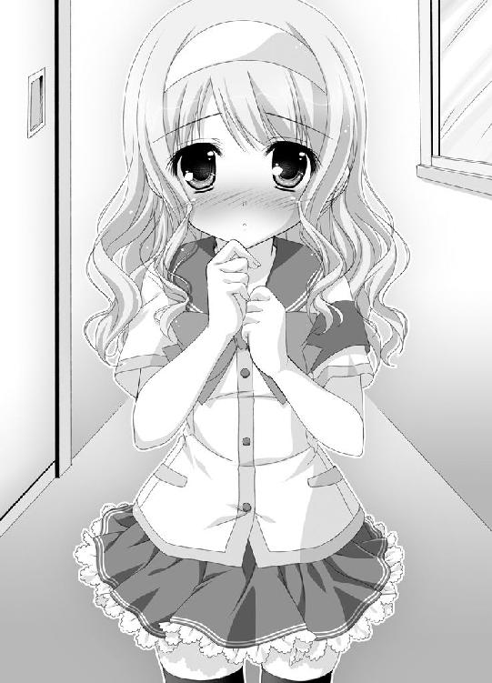
「やってやろうじゃないか。これでポイントを稼いで、尾道を超えてやる！」
ガシッと拳を握り、日高は宣言した。
「風紀委員会に残って、真夕ちゃんの気持ちに応えるんだ!!!」
その５
金曜日の放課後だった。
風紀委員室には、風香と日高、京子と真夕。そして、男子風紀委員が二人。ヒョロリとした方は喜多方、でっぷりとした方は町田と言う。二人とも二年生で、今回のデスマッチの集計及び監査役を風香より言いつけられているのだ。
「一週間、あっと言う間だったわね。それじゃ、結果を発表してちょうだい」
ヒョロリとした方、喜多方がノートを開いた。
「尾道京子、現時点での総合ポイントは、３５７ポイントです」
京子がよっしゃっとガッツポーズを決める。
「ちなみに内訳は、漫画雑誌の持ち込みが38件。成人向け書籍が12件。化粧品の持ち込みが18件。ゲーム機の持ち込みが９件、無許可でのバイク通学が３件に、無許可でのアルバイトが５件。放課後の校舎内残留が８件」
どうよとばかしに京子が眉を持ち上げて見せる。自分の勝利を確信しているのは明らかだった。
「京子ちゃん、すごいわね」
風香も感嘆の息を漏らす。
「期待はしてたけど、そこまでやってくれるとは思わなかったわ」
「ありがとうございます！ 風香お姉様のため！ この風紀委員会の未来のために京子はがんばりました！」
機嫌のいい猫のように風香に甘えてから、京子は日高に顔を向ける。どうだと言わんばかりに眉を持ち上げて見せた。
「じゃあ日高クンの方の結果を聞かせてもらおうかしら？」
風香の声にでっぷりとした方、町田が手帳を開く。
「えっと、武蔵野日高の総合ポイントは......」
揺るぎない勝利を確信し、余裕しゃくしゃくの京子。
日高の結果を祈るようにして待つ真夕。
運を天に任せるとばかしに瞳を閉じる日高。
結果発表後、日高がどんなリアクションを取るかが楽しみでならない風香。
様々な思惑が渦巻く中、町田の野太い声で結果が発表される。
「４３１ポイントですね」
「えええええ!?」
驚きを爆発させたのはもちろん京子だ。
「ちょ、おかしいわ！ だってその男とは一昨日からずっと学校内で出くわしてもいないのよ！ ろくに見回りもしてなかったってことよ！」
京子が町田に詰め寄る。
「内訳は？ 内訳はどーなってんのよ!?」
京子の迫力にタジタジになりながらも、町田が内訳を説明した。
「ジャージでの登校が３件に、漫画雑誌の持ち込みが５件、部室での麻雀が１件」
ここまでは大したことはなかった。部室での麻雀は高ポイントだけど、とても逆転を可能にするレベルじゃない。
日高を勝利へと導いた真相、それは......
「最後に、生徒心得不備が３８２ポイント」
「何それ？ ボヤボヤっとしててよく分からないわよ。具体的にはどんなのよ!?」
文句を言う京子に、日高は開いた生徒手帳を見せた。
「ほら、尾道。この部分だよ」
長々と各種校則が書かれた一番最後のページの最後の行。そこに、その一文はあった。
『これらの校則をよく理解し、健全で明るい学生生活を送ること』
「みんな校則をちゃんと理解してないんだ。根本的に覚えてもいないからね。いや、困ったもんだ」
「へ、屁理屈だわ!!!」
京子が叫んだ。
「バッカじゃないの!? すべての校則を覚えてる生徒なんているわけないじゃない！ それは、あくまで目標って言うか目安って言うかで書いてある一文よ！ そんなのでポイントが入るなんておかしいわよ！ アタシは断固として抗議するわ！」
「ボクらも、悩んだんだけどね」
「そうそう、最初は反則だろうって思ったよ」
監査役の喜多方と町田が口を開く。
「それでも、一応生徒手帳に書かれている以上は校則には違いないってことで。１件につき１ポイントだけあげることにしたんだ」
「まさか、彼が４８２人にも質問して回るとは思わなかったからさ」
そう、これこそが日高の勝利の秘訣だ。
１ポイントもらえる確約を取った後、校門に立ち登下校中の生徒片っ端から聞いて回ったのだ。
『校則を全部知ってますか？』
もちろん、全部知っている生徒なんているはずもなく、地道にポイントは加算されていく。その結果が、この勝利だった。
「ふ、風香お姉様。何とか言ってくださいよ」
京子は風香に助けを求める。
「確かに京子ちゃんの言うとおり、その一文はあくまで目標よ。すべての校則を覚えろだなんて、そんな理不尽なことを生徒に要求しないわ」
ほらあといった顔をする京子だけど......、
「でも、生徒手帳に書かれている以上、校則には違いないの。今回のルール上は問題ないわ。よって、校則違反取り締まり強化週間デスマッチの勝者は、日高クン。キミよ」
「そ、そんな」
京子がその場にペタンとへたり込む。
「良かったわね。これで風紀委員に残れるわよ」
風香が笑顔で言うが、日高としては別に嬉しくも何ともない。風紀委員に残りたかったわけじゃないのだから。
それでも、これで徹夜のホラー映画鑑賞会もなくなったから、心の底からホッとする。
（これもみんな、真夕ちゃんのおかげだよ）
日高は感謝の眼差しで真夕を見る。目と目が合った。真夕ははにかみながら、だけど嬉しそうに微笑んだ。
と......。
「ま、まだ終わってないわ！」
不死鳥のごとく京子が復活した。
「期限は一週間！ 今日と言う日はまだ少し残ってるわ。今からでも新たな校則違反を取り締まって逆転すればいいのよ！ そうですよね？ 風香お姉様!?」
懇願するような瞳を風香に向ける。
「そうね、下校時刻までなら認めるわ」
「ありがとうございます！」
キッて日高を睨み付ける。
「待ってなさい！ 武蔵野日高！ 今からすっごい校則違反を見つけてあなたに逆転勝利するんだから！」
不屈の根性で逆転勝利宣言をすると、京子は風紀委員室を飛び出していく。
「あああ、待って。京子ちゃん！」
真夕が、その後を追いかけた。
「まだ終わってないわ。まだ終わってないのよ！」
呪文のように繰り返しながら廊下を走る京子。人気のない端までやって来た彼女は、そこで足を止めるとポケットから携帯電話を引っ張り出した。
どこぞにダイヤルし耳を押し当てる。しばしの呼び出し音の後、通話が始まった。
「もしもし、アタシよアタシ。一年の尾道京子。大至急、校則違反者の情報を教えて。それもかなり重いヤツが必要よ。何でも知ってるって豪語してたでしょ？ いいから教えて！」
「京子ちゃん！」
おっつけ駆けつけてきた真夕が、荒く息を吐き出す。
「ねえ、京子ちゃん。もう諦めようよ。下校時刻まであと二時間ぐらいしかないんだから。今からがんばっても間に合わないよ」
真夕のやんわりとした説得もまるで聞こえていなかった。携帯電話の向こうから聞こえる声に京子は全力集中している。
「了解、分かったわ！ お金は後でちゃんと払うわよ！ じゃーね」
終了ボタンを押した京子に、真夕が尋ねる。
「京子ちゃん、誰と電話してたの？」
「自称、情報屋の先輩よ。このデスマッチが始まった頃にアタシに声をかけてきたのよ。格安で校則違反している人の情報を売るって。その時はうさん臭いから断ったんだけど、連絡先だけは聞いておいたの。良かったわ、おかげですごい話聞いちゃった」
うふうふと京子が笑う。
「これなら、逆転勝利間違いなしよ。何てたって、高得点が期待できる飲酒とか喫煙の情報なんだから」
「えっ!?」
真夕が驚いて目を大きくする。
「鬼怒川センパイが目を光らせてるから、学校内での飲酒や喫煙をする生徒は誰もいないって聞いたけど」
「学校内ではね」
意味ありげにその言葉を口にする。
「さ、こうしちゃいられないわ。二時間以内に行ってとっ捕まえて戻ってこなくっちゃ！ 出動よ！ まゆっち！」
玄関へ向かって走り出す京子。
「あああ、待ってよ。京子ちゃん」
再び追いかける真夕。京子に振り回されっぱなしの本当に気の毒な少女だった。
その６
「それじゃ、俺達はこれで」
「でも委員長。本当にいいんですか？ 尾道さんが校則違反者を見つけて戻ってきたら」
心配そうに言う町田。
「いいのいいの。そしたら私の方でやるから。二人は面倒臭い仕事で疲れたでしょ？ 今日はもう帰っていいわ」
「ありがとうございます。それじゃ」
「お疲れ様でした」
喜多方と町田が頭を下げると風紀委員室を出ていく。室内には風香と日高が残された。
「改めておめでとう、日高クン。かなり反則ギリギリだったけど、４８２人に聞いて回った労力に免じて認めることにしたわ」
パチパチと拍手し風香が賛辞を贈る。それだけにしておいてくれればいいのに、
「本当は、徹夜のホラー映画鑑賞会、すごく楽しみにしてたけど。それはまた今度にするわね」
なんて言うから日高としてもゲンナリしてしまう。
「それにしても、よくあんな一文に気付いたわね。私だって忘れてたぐらいなのに」
パイプ椅子に腰を下ろし足を組んだ風香が、感心したように呟いた。
「そりゃまあ、いわゆる愛の力ってやつですよ」
得意気に、日高は鼻を鳴らす。
（後で真夕ちゃんにちゃんとお礼を言わなくちゃな。でもって、話の流れによってはひょっとしてお付き合いって可能性も......）
自分を慕ってくれる可愛い後輩との甘いラブロマンスを想像し、うっとりとする日高。
そんな日高に、風香の声が届く。
「そうだわ、日高クン。勝利したお祝いにご褒美をあげるわ。前に観覧車の中で、眼を閉じた日高クンが期待したことなんてどうかしら？」
「え!?」
観覧車の中で、風香に眼を閉じるように言われた日高。あの時、何を期待したかと問われれば答えは一つ。
キスだ。
「いや、でも、それは......」
あたふたする日高に、椅子から立ち上がった風香が歩み寄る。
「もしかして、私が相手じゃ不服かしら？」
鬼だってことは分かっているものの、風香の魅力には大いに心を揺さぶられる。
「ね、日高クン」
吐息のような声を耳元で囁かれたら最後、日高はもう逃れようがない。
「い、いいえ。そんなことは」
「それじゃ、眼を閉じて」
真夕とのロマンスのことも忘れ、日高はギュっと固く眼を閉じた。
「それじゃ、いくわよ」
待つこと数秒後、頬に何かが当たる感触が訪れる。残念ながら唇じゃない。
右に三本、左に三本、まるで線が書かれたようだ。「!?」
眼を開けた日高が見たのは、油性マジックを手にした風香だ。
風紀委員室には、身だしなみを整えるための姿見が設置されている。駆け寄り覗き込むと、左右の頬に三本ずつ猫ヒゲが書かれている。
言うまでもなく、風香のイタズラだ。
「風香先輩......、何なんですかこれは!?」
「何って、猫ヒゲよ。よく似合ってるじゃない」
風香は大げさに不思議そうな顔をして見せる。
「えっ？ それとも何？ 日高クンはもっと別のことを期待してたのかしら？ 私、ちゃんと言ってもらえないと分からないわ」
何てことはない。恥ずかしがる日高を見て楽しんでいるだけだ。
「し、失礼します！」
日高はブスッとした顔で風紀委員室を後にした。
「風香先輩にも困ったもんだよ。人を玩具にして」
男子トイレから日高が出てくる。
「書くなら書くで、せめて水性マジックにしてくれなかったかな？」
トイレの石鹸を使い、ゴシゴシと擦ったもののさすがに油性はしぶとかった。擦りすぎて頬は真っ赤。それでもうっすらとヒゲの跡が残っている。
（きっとこれは、神様の罰に違いない。俺には真夕ちゃんがいるのに、風香先輩の色香に惑わされたりしたから天罰が下ったんだ）
そう思い反省する日高に、無遠慮な声がかけられる。
「あ、ひーくん」
顔を向けるまでもなくむつみだ。見ると、丁度曲がり角を曲がったばかりのむつみが見えた。
何故か、右腕が水平に伸ばされている。その先に何があるのかは廊下の角で日高には見えない。
「ねえ、鬼怒川先輩、風紀委員室にいる？」
日高にそんなことを聞いてくる。
「いるけど、どうして？」
「ちょっと、謝らなくちゃならないことがあるの。うちの困った部員のことでね」
むつみは、隠れていた右腕を引っ張った。
「そんなに強く引っ張らないでくださいよ」
襟首を掴まれ姿を現したのは小柄な男子生徒だった。
「むつみ、誰？」
「新聞部員の堀君。何か陰でこそこそしていると思ってたら、情報屋気取りで情報を売ってたりしてたの。女子生徒の３サイズとかをね。ホント、どうやって調べてたのか疑問だけど」
「フッフッフ、独自の情報網を持つのは新聞部員として当然のことで」
調子に乗る男子を、むつみが無言で睨む。眼鏡がキラリと輝いた。
むつみから放たれるプレッシャーに、男子生徒は何も言えなくなってしまう。
（これも、神社で修行した賜物なのか？）
ついつい、日高は感心してしまった。
「あたし良く知らないけど、校則違反取り締まり強化週間で、尾道さんって一年生の女の子ががんばってるんだって!?」
さすがに、デスマッチまでの情報は伝わってないようだ。
「その尾道さんに、堀君が教えたらしいんだ。知久等町のゲームセンターに最近天狗山高校の生徒が入り浸って煙草を吸ったり時には飲酒もしたりしてるって」
「？」
日高が興味ありそうな素振りを見せると、むつみは細かく教えてくれる。
「ほら、知久等町に小さいゲームセンターがあるでしょ？ 知久等駅の裏手辺りに」
そこなら日高も知っている。裏通りにあるビルの地下にあるゲームセンターだ。ＵＦＯキャッチャーのような筐体は一つもなく、コアなビデオゲームばかりが押しこめられた空間だ。
一度入ったこともあるけれど、近隣の高校の不良生徒達がたむろしていたから慌てて出てきた。ひどく煙草臭かったことが思い出される。
「だから、あたし鬼怒川さんに謝りに来たの。うちの部員が無責任なアドバイスをしてしまったようでごめんなさいって。危ないところだから気をつけるようにって。まあ、鬼怒川先輩なら大丈夫なんだろうけど。一応ね」
その時だった。それまで襟首を掴まれていた男子生徒が激しく身をよじった。むつみの拘束を逃れると一目散に走り出す。
そして、一目散に走り出した。
「あ、堀君！ 待て！」
むつみが逃げた男子生徒を追いかける。途中、足を止め日高に向かって手メガホンで叫んだ。
「とくに、ひーくんはそんな危ないとこ行っちゃダメだからね！ ケガでもしたら大変だから！」
そしてまた走っていく。むっちりとした体つきだけど、むつみは決して運動が苦手なわけではない。恐らく男子生徒が捕まるのは時間の問題だろう。
でも、今の日高にはそんなことどうだって良かった。
「ゲームセンターか」
深刻な顔で呟く。
普通なら、そんな情報を聞いたからって京子は無謀な行動はしないだろう。まずは風香に相談をするはずだ。
だけど今は状況が違う。下校時刻までに、逆転勝利を可能とするだけのポイントを彼女は必要としているのだ。
校則では、下校時のゲームセンターへの立ち寄りは禁止されている。喫煙、飲酒は言うまでもない。
それらが合わされば、かなりの高ポイントが期待できる。
尾道京子の性格からして。飛びつかないはずがない。
春木真夕の性格からして、そんな京子についていかないはずがない。
「尾道は、ゲームセンターに行ったんだ！ おそらく、真夕ちゃんも一緒に」
擦りすぎて赤くなった頬が青ざめるぐらい血の気が引く。
（と、とにかく風香先輩に知らせなくちゃ！）
日高は風紀委員室に向けて全速力で走った。
「風香先輩！」
風紀委員室に飛び込む日高を、椅子に座った風香が迎える。
「猫のヒゲ、洗っちゃったのね。よく似合ってたのに」
「今はそんなヒゲの話をしてる場合じゃありません！ 大変なんです！」
何度も言葉を転ばせながらも、何とかことの次第を説明する。
「なるほどね、確かに京子ちゃんなら行くわよね」
しみじみと頷く。
「そして、真夕ちゃんも一緒でしょうね」
「すぐに二人を追いかけましょう！ この際、タクシーを使ってでも」
風香は椅子から立ち上がろうとはしなかった。
「まあ、そんなに心配することはないわ。二人一緒なんだから、何とかなるでしょ？」
「何とかなるはずがないじゃないですか!? 二人ともただの女の子なんですよ！」
日高は、つい興奮して叫んでしまう。
「恐ろしい鬼の風香先輩とは違うんです！」
言ってしまってからハッとして口を塞ぐけどもう遅い。
風香は、少し悲しそうな顔になる。
「やっぱりまだ、私のことが怖い？ 日高クン」
「そ、それは...」
返事に窮した日高は、誤魔化すように大声を上げた。
「とにかく、俺は行きますから!!!」
込み上げる罪悪感を飲み込み、日高は風紀委員室を飛び出した。
その７
路地裏にひっそりと建つ古いビル。その地下へと続くコンクリートの階段の前に、すすけた電光掲示板が立てられている。
『ゲームセンター ＪＢ』
「ここだわ」
興奮を隠しきれない様子で京子が呟く。
「本当に行くの？ 京子ちゃん」
真夕が京子の制服を引っ張る。
「やっぱり、良くないよ。何か、危なそうだもの」
「虎穴に入らずんば虎児を得ずよ！ まゆっちはアタシの後ろに隠れてればいいんだから」
京子は臆することなく狭い階段を下りていく。
地下は二十畳程の空間だった。京子が思っていたよりは広いが、所狭しとビデオゲームの筐体が置かれているためひどく息が詰まる印象を受ける。立ち込める煙草の煙も不快感を与えた。
薄暗い店内には、七、八人程の客がいた。様々な制服が確認できる。この辺りに点在する幾つかの高校の制服だ。見るからに素行が悪そうな連中だった。
グルリと見渡した京子は、お目当ての人物を見つける。店の一番奥でゲームに興じている三人の男子。その制服は間違いなく天狗山高校のものだった。
京子はツカツカと三人の後ろに向かうと、腰に手を当て堂々と言い放った。
「天狗山高校校則、学校生活の指針その三、生徒心得の十項、下校時制服でのゲームセンターへの立ち寄りを禁ず」
「!?」
三人が驚き振り向く。背後に立つ京子の存在に、口をパクパクとさせた。
「ど、どうして風紀委員がこんなとこに!?」
うち、二名の手に煙草。一名の手に缶ビールの存在を確認した京子は、さらに意気揚々と叫ぶ。
「同、生徒心得の九項、飲酒及び喫煙は絶対にしない。これまたハイレベルな校則違反をやってくれたわね」
糾弾していると言うよりは、感謝の言葉のようにも聞こえた。
それもそのはずだ。監査役の喜多方から、重い校則違反のポイントがどの程度なのかはちゃんと聞いている。
ゲームセンターへの立ち寄りが三人 ＋ 喫煙が二人 ＋ 飲酒が一人。
ざっと計算しても日高のポイントを上回ることができるのだ。
今から三人をしょっぴいて学校へ戻れば、京子の勝利が確定する。
「なあ、見逃してくれないか？ もう二度と来ないから」
「頼むよ。こんなことが学校にバレたら、オレらヤバいんだ」
ゲームセンターへの立ち寄りだけなら厳重注意と反省文の提出ぐらいで済むが、問題は飲酒と喫煙だ。
学校側から非常に重いペナルティーが科せられる。良くても停学。下手をしたら退学だってありえるのだ。男子達が必死に懇願するのも当然だろう。
だけど京子が同意するはずがなかった。
「しのごの言わずに一緒に学校に戻るわよ。あんたらの顔は覚えたから逃げたって無駄だからね。少しでも罰を軽くして欲しかったら、大人しく風紀委員に従いなさい！」
ピシャリと言われ、三人は観念したように項垂れる。
「さ、行くわよ」
出入り口の方へと向き直る京子だったけど、その表情が強張った。まるで通せんぼするかのように他校の男子達が並んで立っていたからだ。
その顔には、ニヤニヤとしたあまり健全でない類の笑みを浮かべて。
「風紀委員さんよ。そんなに謝ってるんだから見逃してやったらどうだ？」
「そうそう、可哀想じゃないかよ」
「何よ、あんた達には関係ないでしょ？」
「そんなことないさ。だって、大切なオトモダチなんだから」
「そうそう、こう見えてもオレら、友情を大切にする方なんだよね」
もちろんこんなものは出まかせだ。ただ彼らは突然現れた美少女二人にちょっかいを出したいだけなのだ。
「そうだ、二人ともここで遊んで行ったらどうだ？」
「そうすれば、共犯ってことになるだろ？」
「オレらが、手取り足取りいろんなことを教えてやるからさ。楽しんでいこうぜ」
迫ってくる男子らに、さすがの京子も焦ったのだろう。真夕を背中に庇うようにしながらも、表情が強張る。
「ち、近づかないでよ！ それ以上近づいたらヒドイわよ！」
声が微妙に上ずる。恐怖を感じているのだ。
「どうヒドイのかな？」
「ぜひ、教えてもらいたいね」
茶化すように言う。
「ほら、こっちに来いよ」
一人の男子が京子に向かって腕を伸ばしかける、まさにその時だった。
「ちょっと待ったあああ！」
そんな声と共に、集団の中に割って入ってくる人物がいた。
「武蔵野日高！」
京子が、信じられないって顔でその名を口にする。
「武蔵野センパイ！」
真夕は、泣きそうな笑顔で日高を見つめた。
「何だよ。今度の風紀委員は男かよ。男に用はないんだ。さっさと帰れよな」
シッシと犬でも追い払うようにされるけど、日高は負けなかった。京子と真夕を守るように立つ。
もちろん日高だって怖くないわけじゃない。だけど、相手は不良生徒。ホラー映画に出てくる怪物に比べれば何百倍もマシだ。
「いい加減にしろ！ 女の子を怖がらせて面白いのか!?」
力強く言い放つ日高に、男子生徒らは、堂々と頷いた。
「ああ、面白いぜ。そんな当たり前のこと聞くなよ」
「女の子を脅かしたり怖がらせたりするのって最高だよな。ゾクゾクするぜ」
「カエルとかゲジゲジとか、鞄の中に入れておくんだ。開けた時の悲鳴ったらないぜ」
「ああ、あれ最高だよな」
わいわいとサド談義に花が咲いている。
（こ、こいつらは）
何だか、普段風香にされていることがフラッシュバックしてしまう。
気が付くと、日高は叫んでいた。
「お前らは、鬼かあああ！」
一応説明しておくが、日高は本当に不良生徒らを鬼だと思ったわけじゃない。彼らの会話の内容が実に鬼的だったから、そう叫んでしまっただけだ。
だけど、事態は思わぬ方向に転がり出す。
不良生徒らが急に神妙な顔つきになった。しばし言葉を失ってから、日高にこう言う。
「お前さ、何で分かったんだ？」
「へっ？」
「オレら、うっかり角なんか出してなかったよな？」
自分の頭を触って確認したりする。
日高はものすごく悪い予感がした。
『世間にはわりと鬼が存在してるの』
風香の言葉が頭に過る。
「もしかして、お前もお仲間か？」
「いやいや、こんな間抜け顔が同類だなんてありえないぞ。多分、どっかの雌鬼の下僕か何かだろうよ」
「まあいいや。正体を見破られたんだからもう人間のフリをすることはないぜ」
一人の不良生徒がプルプルと首を振った。頭からは一本の角が生えた。瞳は金色に輝き、牙や爪が伸びる。
風香ほど著しく髪の毛の色は変化しないが、紛れもない鬼だ。
他の不良生徒らも同じように人の姿を捨て去っていった。たちまち、五匹の鬼が立ち並ぶ。
「ひゃあああああ！」
悲鳴を上げたのは京子に見つかった天狗山高校の三人の男子だ。彼らは生身の人間だったらしく、真っ青になり逃げだそうとする。
「おい、待てよ」
一匹の鬼が、人間離れした脚力でジャンプし三人の前に立ちはだかった。
「逃げられると困るんだよ。後でちゃんと薬飲んでいろいろと忘れてもらわなきゃならないからな」
人間離れした速度でもう一匹の鬼が三人の前に立ちはだかると、無造作に右手を振った。三人は軽く吹っ飛ばされ壁に激突し気絶する。
「な、何なのよ。何なのよ」
日高の後ろで京子がかすれた声で囁く。よほど怖いのだろう。後ろから日高の腕をギュっと握りしめていた。
京子の気持ちはすごくよく分かった。日高だって、初めて風香の変身を見た時は腰を抜かしたほどなのだから。
しかも、まだ鬼は怖いままだ。五匹の鬼を前に、足はプルプルと震え背筋はブルブルと震える。
「見ろよ、こいつらの顔。かなりビビってるぜ」
「ああ、ゾクゾクするぜ。どんな悲鳴を聞かせてもらえるか楽しみでならないな」
牙をガチガチと噛み鳴らし、爪の伸びた指をわしわしと動かし、五匹の鬼が歩み寄ってくる。
と......。
「悪ふざけはそこまでよ」
凛とした声が、ゲームセンター内に響いた。
出入り口付近に立っていたのは、風香だった。唇を噛みしめ、少々険しい表情でこちらを見ている。
「おっ、また風紀委員の女の子が来てくれたぞ」
「これはまた脅かしがいがある美人さんだ」
歓喜の声を上げる鬼達に、風香は呆れ顔で言う。
「あなた達、この辺りでは新参者ね？ そうでなかったら、天狗山高校の生徒にちょっかいを出そうなんてしないはずだもの」
怖がるどころか驚きも見せない風香に、どうも様子がおかしいと鬼達も思い始める。
「お前、誰だ？」
「天狗山高校風紀委員長、鬼怒川風香よ」
その言葉に、鬼達の顔がサッと青ざめる。
「まさか、お前、まさか......」
次の瞬間、風香の黒髪がぶわっと持ち上がった。それは目の覚めるような赤色に染まる。頭からは二本の角が生え、瞳は金色に輝き、鋭い牙と爪が姿を現した。
「鬼怒川の、赤鬼！」
かすれた息を吐き出す鬼達に、風香は叫ぶ。
「その空っぽの頭に叩き込みなさい！ 天狗山高校の生徒には二度と手を出さないって！」
それからと、風香は付け加える。
「そこにいる日高クンは私の下僕！ 彼の悲鳴を聞いてもいいのはこの私だけなのよ！」
日高にとってはちっとも嬉しくないことを叫び、鬼となった風香は五匹に突進した。
同じ鬼とは言っても、五匹と風香の戦力差は歴然だった。暴れる五匹を風香は掴み投げ飛ばしねじ伏せ倒していく。
勝敗が決するまでに、ものの数分もかからなかったのだった。
その８
ゲームセンターの床には、五匹の鬼が折り重なっていた。
「大したことない連中だったわね」
人の姿になった風香は、物足りなさすら感じさせる口調で呟いた。
「ただの不良相手なら放っておいても良かったのだけどね。少し気になって鬼の知り合いに電話したら、ゲームセンターでたむろってる中に鬼が混じってるって話じゃない。それで追いかけてきたのよ。それよりも」
鬼に跳ね飛ばされ気絶している天狗山高校の男子三人を指さす。
「あの子達、鬼を見てるでしょ？」
「は、はい」
「じゃあ、これを飲ませておいてくれないかしら？ 口の中に入れておくだけでいいから」
軽く説明してから、風香はポケットから丸い缶の入れ物を引っ張り出した。
この間生徒会室で日高に見せた、鬼に関連した記憶を消すという都合のいい丸薬。鬼之事忘却丸だ。
渡された三粒の薬を手に、日高は倒れている男子の元へと向かった。一粒ずつ、口の中へと突っ込んでいく。
それを眺めてから、風香は床にへたり込んでいる京子へと顔を向けた。
「ごめんね、京子ちゃん。怖い思いをさせちゃって」
「あ、あの」
何かを言おうとする京子の口へ、風香は薬をスッと押し込んだ。一瞬驚いた顔を見せてから、京子はクタンとその場に倒れる。
「これで終わったわね」
「あの、風香先輩」
戻ってきた日高は、いきなり風香に頭を下げた。
「風紀委員室では、すみませんでした！」
風香のことを恐ろしい鬼と言ってしまったことを謝っているのだ。
「あの時は、ちょっと頭に血が上ってて、それで」
うやむやになっていた風香の質問の答えを、日高は口にする。
「俺、まだ鬼は怖いです。さっきだって囲まれてブルブル震えてたし。だけど、風香先輩は別ですから。鬼の風香先輩は、何て言うか」
先程の、風香の鮮やかなまでの勝ちっぷりを思い出しながら、日高はこう締めくくった。
「恰好いいですから」
「恰好いい？」
風香が少し驚いた顔をする。
「そう、恰好いい...ね」
その口元に自然と笑みが浮かんだ。嬉しそうに笑ってから、いきなり右手を伸ばし日高の耳を掴んだ。
そのままムギューって引っ張る。
「いたたたたた、痛いですって、風香先輩！ どうして引っ張るんですか!?」
「キミが嬉しいことを言ってくれたからよ」
よく分からない説明をしてから、ようやく耳を離してくれる。
「ま、さっきの失言のことは許してあげるわ。私の言葉が足りなかったのも原因だし」
「？」
「私、言ったわよね。京子ちゃんと真夕ちゃん二人一緒なんだから何とかなるでしょって」
「はい」
日高が頷く。それを聞いて、日高は風香の無責任さについ熱くなってしまったのだ。
「ちゃんと、あの時に説明しておくべきだったわ。真夕ちゃんのことを」
日高には、風香が何を言っているのかさっぱり分からない。
近くに立っている真夕をチラリと見る。
（真夕ちゃんのことって、一体何なんだ......って!?）
日高は重要なことに気付いた。
真夕が普通に立っていることだ。風香と日高の会話だって聞いている。
これは大変よろしくないのではないか？
日高は小声で風香に囁いた。
「風香先輩。さっきの薬、早く真夕ちゃんにも飲ませないと」
「その必要はないわ。だって真夕ちゃんは...」
風香は衝撃の真実を口にした。
「私と同じ、鬼だから」
「えええええ！」
日高は再び真夕を見る。そこにいたのはもう先程までの彼女じゃない。
金色の瞳に鋭い牙と爪。頭の天辺からちょこんと可愛いらしい角が一本生えていた。もう疑う余地もない。完全なる鬼っ娘だった。
「すみません、武蔵野センパイ。何だか騙してたみたいで」
申し訳なさそうに真夕が頭を下げる。
「だけど真夕ちゃん。あなたも人が悪いわよ。ずっとか弱い女の子のフリをし続けるなんて」
「そろそろ正体を見せて本気で怒ろうかなって何度も思ったんですよ。だけどその度に、武蔵野センパイが来たり鬼怒川センパイが来てしまって。ついついタイミングを逃しちゃいました」
真夕は、ペロッて舌を出して見せる。
「そんな、真夕ちゃんが......」
まだ驚いている日高に、真夕が言う。
「あ、心配しないでくださいね、武蔵野センパイ。わたしは、鬼怒川センパイに比べるとずっと血が薄い鬼ですから。センパイほど強くありませんし、男の子を下僕にしようとも思いませんから」
真夕は軽く笑った。これまで見せたことのない、ややＳっ気のある笑みだ。擬音を入れるなら、『うししし』ってのがピッタリだろう。
「でも、鬼怒川センパイにいじられる武蔵野センパイを見るのは大好きです。すごくドキドキするんです。これからも間近で見ていたかったから、センパイには風紀委員でいて欲しかったんです」
恋愛じゃなかった。
ドキドキの意味が違かった。
全部日高の勘違いだったのだ。
同じ風紀委員ということで、何かと日高に頼ってくる真夕。
いつしか二人は、自他ともに認めるカップルに。
昼休みはいつも一緒に日当たりの良い中庭で昼食。もちろんここで用意されているのは真夕の手作り弁当だ。
休日のデートは、水族館やプラネタリウム、植物園といった場所へ。絶叫マシーンも恐怖系アトラクションも真夕は苦手なのだから（きっとそのはず）。
そして、夕暮れの浜辺で語り合う二人。
「真夕ちゃん......」
「武蔵野センパイ......」
高まる気持ち。瞳を閉じる真夕。
そして、重なる唇と唇。
とまあ、軽くこれぐらいは妄想していた日高だから、その衝撃は計り知れないものがあった。
「そんな！」
日高の嘆き悲しむ悲鳴が、ゲームセンターに響き渡った。
もちろん、そんな日高の様子を風香が見逃すはずもなく。
「ああ、いいわね。日高クン。その表情、ゾクゾクするわ」
うっとりと、見つめたのだった。
その９
そして、土日を挟んだ週明けの月曜日。放課後。
「はあ」
風紀委員室にて、日高はため息をつく。
朝からずっとこの調子だ。かなりハイレベルな落ち込みっぷりだった。
「日高クン、いい加減元気出したらどう？ いつまで嘆いたって、真夕ちゃんが鬼ってのは変わらないんだから」
「分かってます。それは分かってますよ。だけど......」
真夕が鬼ってことよりも、てっきり普通に好かれていたと勘違いしていた自分が情けないのだ。
なまじ、頭の中で真夕とのラブロマンスを展開させていただけに、余計に気分が滅入ってしまう。
「尾道との勝負で助けてくれたのは、俺が風香先輩にいじられてるとこを見てニヤニヤしたかっただけだったなんて」
もうやる気も湧かないって様子で、机の上にゴロンと頭を乗っける日高。そんな日高を見かねてか、風香が声をかける。
「日高クン。そんなに嘆くことなんかないのよ。鬼の女の子にとっては、それもまた好意の現れなんだから」
「そうなんですか？」
懐疑的な目で風香を見る。
「そうよ。良くも悪くも鬼ってのは征服欲が強いの。だから、好意を持った相手が普段見せないような表情を見るのが楽しくて仕方がないのよ。驚いた表情とか怯えた表情とかそんなのね」
風香が続ける。
「真夕ちゃんがあそこまで他人に興味を覚えるなんてこれまでなかったことよ。よっぽど日高クンのことが気に入ったのね。がんばれば、下僕にしてもらえるかもしれないわよ？ もっとも、私が許さないけど」
「ちょっと、見回りに行ってきます」
風香の話を聞いていてもますます気分が滅入りそうだったから、日高は風紀委員室を後にした。
「冗談じゃないよ。まったく」
ぶつぶつと呟きながら、日高は放課後の校舎を歩いている。
「がんばれば下僕にしてもらえるだなんて、がんばりたくないよ」
と、日高は足を止めうかない顔になる。
（待てよ。もし、風香先輩の話が正しいとしたら......）
誰よりも日高の驚いた表情や怯えた表情で喜んでいるのは、他ならぬ風香だ。
（風香先輩も、俺に好意があるってことになるけど......）
いいやそんなことないぞと、日高は強く首を振った。
（好意は好意でも、普通の女の子が抱くようなものじゃない。勘違いするんじゃないぞ、俺）
自分を戒め再び歩き出す日高に、後ろから声が届く。
「む、武蔵野日高」
「ん？」
振り向くと、京子が立っていた。思えば、金曜日の放課後以来の再会だ。
あの後、風香にぶっとばされた鬼達はすぐに目を覚ました。調子にのってすみませんでしたと風香に平謝りするとゲームセンターを飛び出していった。
彼らには、不必要に正体をさらけ出したということで、ちゃんと鬼社会でそれなりの罰が課せられるとのことだった。
その後、薬を飲まされぐったりとした京子を真夕が家まで送る。
同じく、薬を飲み眠る男子三人は、風香と日高で学校へと連れてゆき、教師の前に突き出した。それが金曜日の騒動の結末だった。
「尾道か......」
また何か辛辣なことを言われるのかと、日高は少し辟易する。
でも、京子は少し様子が違っていた。そっぽを向きボソボソとした口調で言う。
「その、金曜日のことなんだけど。一応、お礼を言っとくわね」
「えっ!? お礼って......」
「ア、アタシがゲームセンターでからまれてる時、あんたが助けに来てくれたことよ！」
ぶっきらぼうに続ける。
「まゆっちに聞いたわ。あんたがあの不良どもを追っ払ったんだって？」
でも！ と京子は声を大きくする。
「アタシだって、気を失ってなかったらそれぐらいできたんだからね！ それに、気を失ったのだって怖くてとかじゃないの！ ただ、ちょっと体調不良だっただけよ」
薬の効果で、その後の出来事はすっかり忘れているようだ。
「とにかく、アタシはあそこでリタイアしちゃったわけだから。勝負はあんたの勝ちってことでいいわ。つまり、あんたはこれまでどおり風紀委員会にいていいってことなのよ」
「あ、尾道。何か誤解されてるみたいだけど」
ここで誤解を解いておこうと、日高は説明した。
「俺と風香先輩は、お前が思ってるような仲じゃないからな。だからお前が心配するようなことは」
「分かってるわよ。まゆっちから話は聞いたし。それに、落ち着いて考えれば風香お姉様があんたみたいなのを真面目に相手するわけないわよね。でも、あんたが風香お姉様にまとわりついてるとやっぱり気に入らないし、第一風香お姉様の迷惑になるわ。だから、だから」
すうっと息を吸い込むと、京子は半ば叫ぶように言った。
「これからは、アタシがあんたの面倒を見てあげるわよ！」
「へっ？」
「年下だからってバカにしないでよね。あんたの誕生日は知ってるんだから。ほとんど同い年よ！ そうでしょ!? それにアタシはあんたより風紀委員歴は長いんだから！」
真っ赤な顔してまくしたてる。
「とにかく、そういうことだから!!!」
言いたいことだけ言うと、京子は走り去っていく。風紀委員にあるまじき、 廊下全力ダッシュでだ。
「どーしたんだ？ 尾道のやつ」
ポカンとした顔で、日高は呟いた。
そんな日高を、少し離れた掃除用具ロッカーの陰から見守る人物がいた。
小柄で大人しそうな少女。春木真夕だ。
「あらあら、困ったことになっちゃいましたね」
真夕は小声で囁く。
「やっぱり、わたしのせいですよね。これって」
タクシーで京子を彼女の自宅まで送った後、目覚めた京子には当然肝心な部分の記憶がない。
辻褄を合わせようと、真夕はこんな説明をしたのだ。
『京子ちゃんが気を失った後で、武蔵野センパイがすごく怒ったの。可愛い後輩を気絶させるぐらい怖がらせたお前らを、俺は決して許さない！ それで、怒りの鉄拳で不良の人達を全員倒しちゃったの。センパイがあんなに強かったなんて、わたしビックリだったな』
「ちょっと、脚色入れすぎちゃいましたね。まさか、京子ちゃんがあんな風になるなんて」
嘆いているのかと思いきや、その顔に笑みが浮かぶ。
「でも、いいですよね。これはこれでとっても面白いですから。観察しがいがあるってものですよ」
にふふふふふふふと笑う真夕の瞳が、一瞬金色に輝く。
何だかんだ言っても、彼女もやっぱり『鬼』だった。
おわり
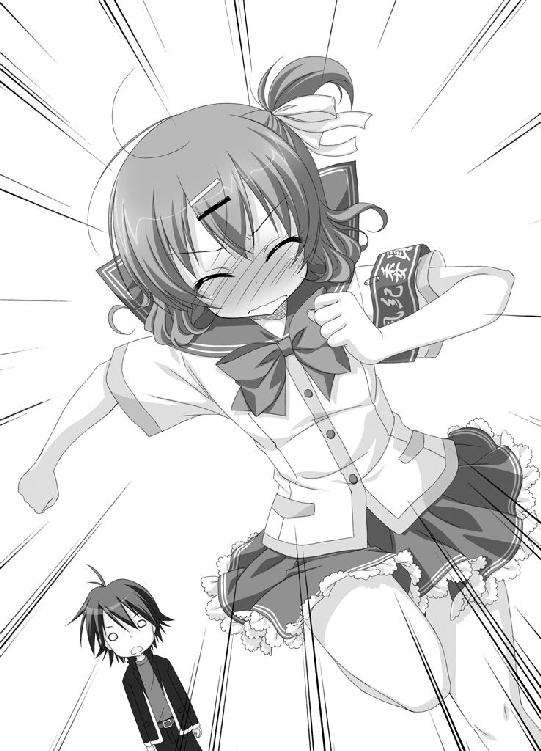
第四話 武蔵野日高は実力を隠す？
その１
「いっけない！ 完璧なる遅刻よこれは！」
そんなことを口にしながら、尾道京子は廊下を走っていた。化学実験室から自分の教室へ戻る途中だった。
二時間目の化学の授業が終了後、教師はいつもどおり当番二人で器財を片付けるように命じた。
運の悪いことに、京子は本日の当番だった。
さらに運悪く、もう一人の当番の男子は風邪で休みだった。
『京子ちゃん。わたしも手伝おうか？』
心配そうにそう言ってくれる真夕に、
『だいじょーぶよ。これぐらいちゃっちゃと片付けちゃうから。まゆっちは、アタシの教科書持って教室に戻ってて』
なんて言ってしまったことも、今となっては悔やまれる。
実験器具を化学研究室の戸棚にしまった時には、すでに次の授業が始まって十分近く経過していたのだ。
「次は確か現国だったわね。気難し屋の福井先生だから、訳を話しても聞いてくれないかも。とにかく急がなくっちゃ」
全速力で廊下を突っ走る。風紀委員としてはあるまじき行為だけど、切羽詰まってるのだ。神様だって見逃してくれるはずだ。
もともと運動は大の大の大得意。足だってすこぶる速い。綺麗なフォームで廊下を突っ走る京子だったけど、その足に急ブレーキをかけた。
場所は、四階の一番端。柔道教室の前だった。
柔道教室と言うのは、読んで字のごとく柔道をするための教室。教室に畳を敷き詰め、柔道が行われているのだ。
天狗山高校では、二年男子の必須科目だったのだ。
別に柔道が珍しくて足を止めたわけじゃない。見覚えのある男子生徒が、柔道着姿でかまえていたからだ。
（武蔵野......日高！）
つい反射的に、入り口に身を潜めるようにして覗いてしまう。
授業はその時、まさに組手の直前だった。日高は、大柄な生徒と対峙していた。
（可哀想に、あの人、もう終わりね）
京子はほくそ笑む。
（何せ、武蔵野日高はもっと強そうな他校の不良連中をぶっ飛ばしたことがあるんだから。サッカーとか陸上とかは苦手らしいけど、格闘技だったら負けないはずよ）
むしろ誇らしげに眺める京子。
教師の合図で両者は一礼、そして勢いよく組み合った。
次の瞬間、日高が放り投げられた。それはもう惚れ惚れするぐらいの投げられっぷりだった。
それだけならまだしも、受け身に失敗したのかダメな感じに体を折り曲げピクピクとしている。
「武蔵野、受け身は基本だろう」
体育教師が呆れ顔で呟く。
「しょうがない。手が空いてるやつ、武蔵野を保健室に運んでってくれや」
数人のクラスメイトが日高を担ぎ上げ、柔道教室をえっほえっほと出ていく。
恰好良さは皆無だった。むしろ恰好悪さの極みだった。
「え？」
想像だにしない展開に、京子は唖然としてしまう。
（武蔵野日高って、本当に強いの？）
そんな疑問が、京子の胸に誕生した。
その２
天狗山高校に、昼休みが訪れる。生徒達の憩いの時間だ。
京子はいつものように、教室で机を合わせて真夕と一緒にお弁当を食べていた。
顔はまだうかないままだった。偶然目撃したあの光景が、どうにも気になって仕方ない。
そんな京子の様子に気づき、真夕がおずおずと声をかける。
「あの、京子ちゃん。どうしたの？ 元気ないみたいだけど」
「ねえ、まゆっち。あくまで確認のために聞くんだけど」
ずずっと身を乗り出し、京子はこの大人しい親友に尋ねた。
「この間ゲームセンターで、武蔵野日高は不良連中をぶっ飛ばしたのよね？」
「え、うん。そうだよ」
真夕が力強く頷く。
「わたし、この目で見たから間違いないよ」
「その時の光景を、もう一度だけ説明してよ！」
京子の要望に、真夕は喋りはじめた。
「えっと、京子ちゃんが気を失った後で、武蔵野センパイがすごく怒ったの。か弱い女の子を怖がらせるなんて許せないって。それから、正義のチョップを振り回して不良の人達を......」
「ちょい待ちちょい待ちちょい待ちちょい待ち」
真夕の説明に京子は待ったをかける。
「それ、前に聞いた話とちょっと違くない？ 確か前は、武蔵野日高は『可愛い後輩を』って言ったって聞いたわ。それに、正義のチョップじゃなくって、『怒りの鉄拳』だって」
「そ、そうだった？」
真夕が、少々焦ったような素振りを見せる。
「でも、些細な違いでしょ？ 気にしなくたって」
「些細じゃないわ。重要なことよ」
さらに京子は身を乗り出し真夕に詰め寄った。
「もう一度、最初から説明して！ できるだけ細かく！」
真夕は泣きそうな顔になった。もうタジタジだ。
「あ、先生に呼ばれてたんだ。ごめんね、京子ちゃん。わたし行かなくっちゃ」
慌ただしく弁当箱をしまうと、真夕は教室を出ていく。
文句なしの逃亡だった。
「何かおかしいわね」
いぶかし気に首を傾げる。
京子は、真夕の証言がどうも怪しいと感じていた。だけど、もし仮に嘘だとしても真夕がそんな嘘をつく理由がまるで分からない。
しばし頭の中で思考回路をフル回転させてから、何だとばかしに京子は息を吐き出した。
「分かったわ、そういうことだったのね」
名探偵っぽく頷く。
「まゆっち、気絶して肝心な光景は見てないんだわ」
（そうよ、考えてみればアタシが怖くて気絶しちゃってるのに、あの臆病なまゆっちが平気なはずないのよ）
どうしてこんな簡単なことに気付かなかったのだと、京子は自分自身に呆れた。
そんなまゆっちが、実はれっきとした鬼であることなんて知る由もない。
（でも、だからって武蔵野日高が弱いって決められないわよね。実際にアタシ達が無事だったのは間違いないんだから）
まだ情報を集める必要があると京子は思った。
「武蔵野日高のことをよく知っている人物って言ったら......」
脳内データベースを検索すると、自動的に一人の人物がはじき出される。
大きな眼鏡で誤字脱字を見逃さず、大きな胸で男子生徒を虜にしているあの人。
（新聞部の新条先輩よ。確か武蔵野日高と幼馴染だったはず。新条先輩に聞けば、きっと分かるはずだわ）
のんびりお弁当を食べてる場合じゃないと、京子は残っていたご飯を勢いよくかっこんだのだった。
その３
薄汚れた廊下を京子は歩いていた。
ここは、天狗山高校の旧校舎。本来なら取り壊しにされるはずだったのだけど、一部が残され渡り廊下で繋がっている。
今では、文科系部の部室として利用されていた。
四階の廊下を歩いた一番奥、そこが新聞部の部室だった。
一度は二年Ｈ組へ向かった京子だったけど、残念ながらむつみは留守。ならば新聞部だろうとこうやって足を運んできたのだった。
（相変わらず陰気なとこね。カビでも吹きそうだわ）
日当たりの悪さに辟易しながら、むつみは新聞部の部室をノックする。
「ん、どうぞ」
中から気さくな声が聞こえてくる。
京子は、ガラガラと音を立て立てつけの悪い引き戸を開ける。
元々は教室だった場所は、資料棚で埋め尽くされていた。編集机が並べられ、大きなコピー機が一台置かれている。黒板には編集スケジュールがビッシリと書き込まれていた。
部室内にいたのは、新条むつみ一人だった。
奥の一番立派な席につき、パソコンを叩いている。
「入部希望者？ 悪いけど今手が離せないの。また放課後来てくれない？」
京子の方を見ようともせず、むつみは言った。
「いいえ、違います。アタシは、一年Ｄ組の尾道って言います。ちょっと、新条先輩に聞きたいことがあって」
「え、尾道って、風紀委員の尾道京子さん？」
むつみが席から立ち上がった。足早に京子へと歩み寄る。
「あたしから一度会いに行かなくちゃとは思ってたんだ。情報屋気取りのうちの部員が迷惑かけて本当にごめんなさい」
「い、いえ、大丈夫ですから」
かぶりを振りながら、京子は全然違うことを思う。
（くっ、さすがは新条先輩。こうやって間近で見ると胸のボリュームがすごいわ）
チラっと自分のと見比べ、京子は大いに落ち込んだ。
「それで、新聞部に何の用？ もしかして、ガサ入れ？」
ガサ入れ。部室に校則違反の品々が隠されていないかを、風紀委員が抜き打ちでチェックしに来ることだ。別名、部室改めとも呼ばれる。
「違います。ちょっと、新条先輩に聞きたいことがあって来たんです。その......」
少しだけ躊躇いながら、京子はその名を口にする。
「武蔵野......先輩のことを。確か、幼馴染なんですよね？」
「ただの幼馴染じゃないよ。あたしは、こーんな小さな頃から、ひーくんの面倒をみてきたの」
こーんなの部分で、丁寧に手を膝の下辺りまで持ってきて見せる。
「ひーくんのことを聞くのにあたしをチョイスしたのはベストな判断よ。何だって知ってるんだから」
軽く自慢してから、むつみはいぶかし気に尋ねる。
「だけど、どうしてひーくんのことを知りたがるの？ もしかして尾道さん、ひーくんに恋なんか」
「し、してません！ そんなんじゃありません！」
京子が声を張り上げる。
「ちょっと、確認したいことがあるだけです。決して恋とかラブとかそういったものじゃありませんから！」
不自然に声を張り上げる京子だけど、むつみもホッとする。
「そうだよね。あたしの勘繰りすぎだね」
明るく笑う。
「さ、それで、一体何が聞きたいの？」
「はい、その、単刀直入に聞きたいんですけど......」
そう前置きした京子は、真剣な顔で尋ねた。
「武蔵野先輩って、強いんですよね？」
「え？」
「不良の四、五人、ぶっ飛ばしてしまえるぐらい強いんですよね？ 柔道は苦手だとしても、何か格闘技をやってるとか？」
しばしポカンとした顔で京子の話を聞いていたむつみだけど、すぐに盛大に吹き出した。
「ひーくんが強い......か」
クスクスと笑いながら、むつみは自分の机に戻った。引き出しを開けると分厚いアルバムを引っ張り出しドンと置く。
「尾道さん。面白い写真を見せてあげよっか」
ちょいちょいと手招きをする。やって来た京子に、むつみは一枚の写真を指差す。
そこに写っていたのは、空手着を着た幼い日高だった。
「これは、町内会のちびっこ空手大会の時の写真。試合前に気合いを入れているところ」
（そうか、武蔵野日高の強さの秘密は空手なんだわ！）
そう思いかける京子だけど、
「で、こっちが試合後の写真」
指差された写真には、タンカで運ばれていく日高の姿が写っていた。
「これは、町内会のちびっこ相撲大会の時の写真」
次に見せられたのは、回しをつけた日高がしこを踏んでいる写真。決して体は大きくはないが、その顔には負けを知らない余裕の笑みが浮かんでいる。
「でもって、こっちが試合後」
やっぱりタンカで運ばれていた。
「次にこれが、ちびっこ剣道大会の写真。でもってこっちが、ちびっこレスリング大会の写真」
どれもこれも、試合後はタンカだった。
「あの、全部負けてるように見えるんですけど」
「見えるんじゃなくて、全部負けてるの。ただの負けじゃなくって、惨敗。ここまで鮮やかに負けられるのってある意味才能だって町内会では評判だったかな」
アルバムをバタンと閉じると、むつみは断定するように言った。
「どうしてそんな誤解をしたのか知らないけど、ひーくんは強くなんかないよ」
新聞部の部室を出た京子は、うかない顔でカビ臭い廊下を歩く。
幼馴染であるむつみがあそこまで断定していたのだ。本当に日高は強くないのではと思えてくる。
「でも、それじゃおかしいのよ。一体誰がアタシ達を助けてくれたってことになるの？」
不満気に唇を尖らせる。
「武蔵野日高は、強くなくちゃ困るわ。そーじゃなきゃ、あいつに感謝したアタシの心がかわいそーじゃない。詐欺よ詐欺！ 大詐欺よ！」
実に自分勝手なことを呟きながら、階段を下りる京子。二階に差しかかった時だった。不意に京子の鼻がひくひくと動く。
「ん!? この匂いは......」
急いで近くの窓に駆け寄る。空気循環のために少しだけ開いていた窓を全開にし、身を乗り出して下を見る。
旧校舎の裏側。学校一人気が少なく陰気な場所だ。そこでは、五人の男子生徒が隠れて煙草をふかしている最中だった。
「そこまでよ！」
京子は鋭い声を飛ばした。
「天狗山高校校則、学校生活の指針その三、生徒心得の九項、飲酒及び喫煙は絶対にしない！」
「やべ、風紀委員だ！」
「逃げろ！」
蜘蛛の子を散らすように走り出す男子生徒らを、京子は追撃する。
「逃げても無駄よ！ あんたらの顔はちゃんと覚えたから！」
男子生徒らも、どうやら観念したようだった。京子の真下まで来ると、並んで地面に膝をつく。
「俺達が悪かった。頼む、見逃してくれ！」
「ほんのちょっとした出来心なんだ！」
「ゴメンですんだら風紀委員はいらないわよ。このことはきっちりと学校に報告......」
そこで、京子は何かを思いついたように笑う。
「ねえ、あんたら。ちょっとだけ、アタシに協力してくれない？ そしたら、今回だけは見逃してあげるから」
その４
夕暮れ時の住宅街だった。
ブロック塀の陰に、京子は身を潜めている。
「いい、もうすぐ来るはずだから打ち合わせどおりやるのよ。ヘマなんかしないよーにね」
しつこくそう告げるのは、昼休みに喫煙しているところを京子に見つかってしまった男子五人だ。
パンチパーマのカツラをかぶったり、派手シャツを着ていたり、安物にしか見えないサングラスをつけてたりしている。
絵に描いたような悪者の格好をしているのだ。
「なあ、本当にやるのか？」
一人が不安気な声を出す。
「俺達、あんまり気が進まないんだけどよ」
「いーのよ。何も本気で痛めつけろって言ってんじゃないんだから。ちょっと真似事をしてくれればいいだけなんだから」
京子が目を鋭くする。
「煙草のこと、学校にバラすわよ」
この脅しはきいたようだ。五人は観念したと頭を垂れる。
「来たわ！」
京子が鋭く声を上げた。住宅街の道をのんびりと歩いてくる男子高校生の姿が見える。
ひょろんとした体型の、眠そうな少年。そう、武蔵野日高だ。
「さあ、行った行った。しっかりやんのよ！」
風香にハッパをかけられて、男子五人はブロック塀の陰から道へと躍り出た。もはやヤケクソと言った様子で、ポケットに手を突っ込み、肩をいからせ歩いていく。
わざとらしくふらついて、日高と軽くぶつかる。
「あ、すみません」
そのまま歩き去ろうとする日高を、一人の男子が呼び止めた。
「おう、人にぶつかっといてその態度はないだろ!?」
「ストレスがたまってんだ。詫びとして殴らせろよな！」
日高の胸倉が掴まれる様子を、京子はうずうずとした顔で観察していた。
（そうよ。柔道や空手や相撲や剣道やレスリングが苦手だからって、弱いってことにはならないわ。ただ単純にケンカが強いってこともあるんだから）
それに、試合ごときで本気を出さないってだけだったのかもしれないと京子は思う。
「今はピンチなんだから、さすがに手加減なんかしないはずよ。きっと一瞬であんな連中ぶっ飛ばすに決まってるわ！」
期待を込めた視線を向けるけど......。
「すみませんすみません。勘弁してください」
日高は平謝りするだけだ。
日高の胸倉を掴んだ男子が、京子に顔を向ける。
『ど、どうする？』
無言の問いに、京子はグーでパンチする仕草を見せた。
『え、さすがにそれは』
『軽くでいいからやんなさいよ！』
『でも、ちょっと』
『煙草のこと、バラすわよ！』
とまあ、器用にアイコンタクトだけでの会話が繰り広げられる。
さすがに観念したのか、男子は拳を振り上げた。ヘロヘロなパンチを日高に放つ。
あっさりと日高は殴り飛ばされ地面に転がった。
「こ、これぐらいにしといてやるぜ」
「気をつけるんだな」
男子達は足早に去っていく。もう関わりあいになりたくはないぞっていった様子だ。きっと戻ってくるつもりもないのだろう。
「いっつ」
腰を押さえて日高は立ち上がる。
「あ、災難だった」
そんなことをぼやき、腰を擦り擦り歩き去っていった。
塀の陰の京子には気付くことなく。
「な、何なのよこの結果は」
かすれた息を吐き出す。
もはや疑うまでもなかった。
「あいつ、メチャクチャ弱いじゃないのよ！」
不機嫌度ＭＡＸでぶちまける。
「ゲームセンターのことは全部間違いだったのよ。あいつはきっと何もしてない。それどころか、アタシ達と一緒に気絶してたのかもしれないわ。他校の不良をおっぱらったのは誰か別の人よ！」
大声を出してはみたものの、不機嫌は収まらなかった。
ふと、京子は見つける。すぐ足元に転がっているコーヒーの空き缶をだ。
「あいつのおかげだと思ってちょっとドキドキしてたアタシがバカみたいじゃないのよ！」
苛立ちを紛らわせるのに丁度いいと、京子は力一杯空き缶を蹴飛ばした。
それが、不幸の始まりだった。
景気よく飛んだ空き缶は、狙っていたかのようなタイミングで通りかかった車にガツンと音を立ててぶつかった。
重厚な黒塗りベンツ。どうしても、あっちの業界を連想してしまう車だ。
しかも一台ではない。すぐ後ろに同じ車がもう一台控えている。
車がブレーキをかけて止まる。ドアが開き出てきたのは、見るからにあっちの業界の方々だ。
パンチパーマはすべて本物。サングラスだって高級品。先ほどの男子生徒らのコスプレが霞んで見えるぐらいだ。
「お嬢ちゃん。うちの車に何か恨みでもあるんかいの～」
「ほら見い、へこみができてしまったの～」
「こりゃあ、弁償してもらわんとの～」
広島の方の出身なのか？ それともそれっぽくしてるだけなのかは定かではないが、男達は胴間声で凄む。
「ち、違います！ ワザとじゃありません！ ごめんなさい！」
必死に叫ぶ京子だけど、
「ごめんですんだら、ケーサツはいらんのじゃー！」
男が吠えた。
「とりあえず、事務所に来てもらわんとな」
「そこで親に電話してもらって話さんと。どうやって弁償してもらうか」
太い腕が京子に伸ばされようとした時。
「す、すみません。缶ぶつけたの、俺なんです！」
ビクつきながらも、しっかりとした声が響く。日高だった。
「ちょっ、武蔵野日高。あんた何言ってんのよ！」
「すみません、勘弁してください」
へっぴり腰ながら京子の近くまでやって来た日高は、深く頭を下げた。
「何言うとるんや。兄ちゃんが蹴飛ばしたらこんなとこに当たるはずあるかい。引っ込んでな」
男達が馬鹿にしたように笑う。
それでも日高は動かなかった。あくまで自分がやったと言い張り続ける。
さすがにうんざりとしたのか、一人の男が大声を上げた。
「いい加減にしろやあああ！」
と......。
後ろのベンツの扉が開かれる。貫禄ある男が姿を現した。
「おい、騒がしいぞ。どうしたんだ？」
今いる男達が可愛いく見えるほどの強面。顔には大きな傷が斜めに走っている。体は大きく、筋肉で覆われていた。
五十万、百万は軽くしそうな重厚なスーツに身を包んでいる。
「あ、兄貴！」
男達が直立不動の体勢になる。
「この娘が、車に空き缶をぶつけたんでさ。なのに、このヒョロヒョロした男が、自分がやったってしゃしゃり出て」
「ふうん」
兄貴は日高をジロジロと見ると、ニンマリと微笑む。
「いいだろう。だったらこの兄ちゃんの言うことを信用してやろうじゃないか。兄ちゃん、一緒に事務所に来てもらうぞ」
「女の方はいいんですかい？」
「ああ、こいつの方が楽しめそうだからな。そんな直感がするんだよ」
兄貴は嗜虐的に目を細めると、ニヤリと笑う。背筋がゾクっとする笑みだ。
「お嬢ちゃん、お前は家に帰りな」
「でも......」
ためらう京子に、日高は頷いてみせる。
「いいから、早く行くんだ。尾道」
「......ま、待ってなさいよ！ 誰か呼んでくるから！」
京子は全速力で走り出した。
だけど、意外にも早くその足は止まる。
「アタシ、何やってるのよ。激ヨワな武蔵野日高を残して、何一人だけ逃げてんのよ」
キって表情を固めると、京子は来た道を引き返す。
「待ちなさい！ 空き缶蹴飛ばしたのはこのアタシ！ その男は関係ないんだから！」
そう叫びながら躍り出る京子。彼女がそこで見た光景は......。
「すみませんでした!!!」
兄貴を先頭に、男達はそろって日高に土下座していた。
「この詫びはちゃんと入れますんで、どうか勘弁してください」
平謝りした兄貴は、男達を車に押し込む。
「失礼しやす！」
最後にそう言うと、自分の車に乗り込んだ。
二台のベンツが、逃げるようにその場を去っていく。
「あ、尾道。戻ってきたのか？」
ポカンとした顔を向ける日高に、京子は駆け寄る。
「武蔵野日高！ あんたやっぱり強かったのね！ アタシがいない間に、あの連中をひざまずかせるなんて！」
「えっと、それは」
日高に喋る暇を与えず、興奮した口調で京子は続ける。
「能ある鷹は爪を隠すってやつだったのね！ アタシの勘違いじゃなかったのね！」
そこで京子は、自分がいつの間にか日高の手を握っていたことに気付く。
「キャッ！」
似つかわしくない可愛い声を上げると、京子は日高を突き飛ばした。
「じゃ、じゃあね。今日は助かったわ。ありがと。それと、疑って悪かったわ!!!」
そう叫ぶと、少々顔を赤らめて走り去っていく。
（やっぱり、武蔵野日高は強かったのよ。ゲームセンターでも、そして今も、アタシのこと守ってくれたんだわ）
かろやかに走りながら、京子は心の中で呟く。嬉しい気持ちで一杯だった。
「尾道のやつ、何を言ってたんだ？」
さっぱり訳が分からないといった顔の日高。訳が分からないといったらさきほどの怖い人達もそうだ。
無理矢理車に乗せられそうになった時、兄貴と呼ばれた人物が真顔でこんなことを尋ねてきたのだ。
『もしかして、兄ちゃん、武蔵野日高って名前か？』
頷いた瞬間、状況は一変した。兄貴はいきなりその場に土下座する。さらに、不思議がる男達をねじ伏せ、京子が目撃した先ほどの大土下座団へと変貌したのだ。
「うむ、まるで分からん」
命拾いをしたのはいいものの、不可解すぎて気持ちが悪い。
「俺、実はどこぞの大親分の隠し子ってことないよな？」
複雑な表情で、日高は首を捻った。
一方その頃、兄貴の乗ったベンツの中では。
「兄貴、一体どうして土下座なんかする必要あったんですかい？ あんなただのガキに」
運転席で不満気に声を出す男を、兄貴は後ろから全力で殴りつけた。
「やかましい、黙って運転してろ！」
無言に包まれた車内で、兄貴は自分の携帯電話を引っ張り出しメールを開く。
添付された写真が映し出される。それは紛れもない日高の顔写真だ。
渋い顔で、兄貴は本文を読んだ。
『添付してあるのが、私の下僕、武蔵野日高の写真よ。彼には絶対に手を出さないように。もし手を出したりしたら、ペンチで角を引っこ抜くから。鬼怒川風香』
風香により、近隣の鬼達に一斉送信されたメールだった。
何てことはない。実はこの兄貴も人間に紛れて暮らしている鬼の一匹だったのだ。
（鬼怒川の赤鬼の男だったとは......。危ない、実に危ないところだった）
ぶるぶると震えながら、兄貴は何度も心の中で繰り返したのだった。
おわり
あとがき
『日本一の○○○の名産地』
妙にこのフレーズが気に入っています。
思えば、『陰マモ』でも『日本一の忍の名産地』ってフレーズ繰り返してたっけ？
その流れで行くと、いずれ『日本一の鬼の名産地』という称号を求めて他県の鬼が侵攻してきて、血で血を洗う鬼同士の抗争が始まるのかも......（まあ、現時点ではそこまで考えていないのだけど）。
というわけで、『ツノありっ！』です。
第三話のタイトルにもなっている、『渡る世間にはわりと鬼がいる』をコンセプトにしてみました。
実はこの作品、当初は全く違ったお話でした。
『ツノありっ！ プロトタイプのあらすじ』
昔暮らしていた田舎街へ戻ってきて、天狗山高校に編入した日高。そこで、異常なまでに校則違反を取り締まる風紀委員長、鬼怒川風香と出会う。さらに、幼馴染のむつみと再会し、彼女から風紀委員への潜入捜査を命じられる。風紀委員に入った日高は、すったもんだの末、『校則違反者は妖怪になってしまう』という学校にかけられた呪いの存在を知る。鬼怒川風香はそれを取り締まるために代々この学校で風紀委員を続ける鬼の一族だったのだ。秘密を知った日高は、風香の子鬼となり共に戦うのだった。
とまあ、こんな感じの話だったのですが、いろいろとしっくりこない部分があり断念することになりました。
こちょこちょと書き進めていく内に、『何か違うぞ』と思い、最初からやり直す。こういうことはこれまでにもたくさんありました。別に珍しいことじゃありません。
ただ、今回今までと違っていたことは、最後まで書いてしまったということです。
提出して、鳴海ゆう先生にもキャラをお願いした後での、『全部やり直す宣言』。
担当のH様、イラストの鳴海ゆう先生、その他、関係者のみなさま。大変、大変ご迷惑をおかけしました。
ごめんなさい。そして、ありがとうございました。
プロトタイプでは日高を慕う普通の後輩だった真夕が、新バージョンではうひひひって笑う鬼の女の子になってしまったことに関しては.........個人的には大成功だと思っています！
それではでは。
阿智太郎
著者
阿智太郎（あち・たろう）
１９７８年生まれ、いろいろあって今はゲーム会社勤務。ペンネームは、出身地である長野県阿智村から。会社でもペンネームで呼ばれているから最近本名を忘れがち。免許証の名前を見ると妙に新鮮に感じてしまう。
イラスト
鳴海ゆう（なるみ・ゆう）
『11eyes CrossOver(Lass/5pb.)』で人気を得たゲーム原画家、イラストレーター。
近作に、『色に出でにけりわが恋は』（ういんどみる）、『鬼ごっこ！』（Alcot）など。
ツノありっ！
風香先輩は△△を隠す
著者名......阿智太郎
発行者......三坂泰二
発行所......株式会社メディアファクトリー
http://www.mediafactory.co.jp/
２０１１年８月31日 電子書籍版 ver.1.0.1
無断で複製・複写・放送・データ配信などをすることは、かたくお断りいたします。
©2010 Taro Achi